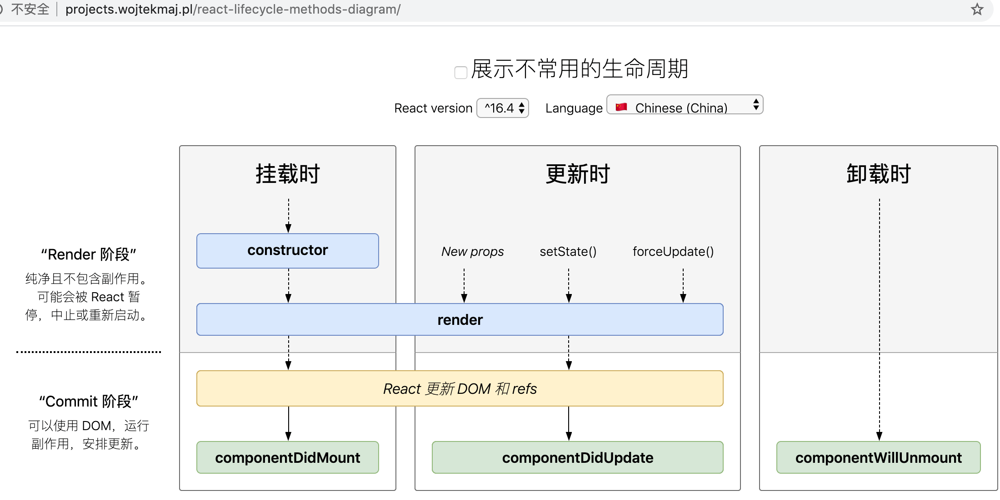
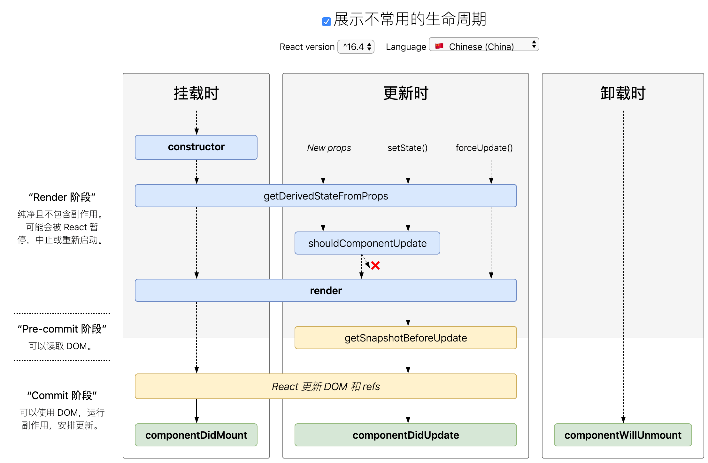

<!DOCTYPE html>


  


<html class="theme-next pisces use-motion" lang="zh-Hans">
<head><meta name="generator" content="Hexo 3.8.0">
  <meta charset="UTF-8">
<meta http-equiv="X-UA-Compatible" content="IE=edge">
<meta name="viewport" content="width=device-width, initial-scale=1, maximum-scale=1">
<meta name="theme-color" content="#222">


<meta http-equiv="Cache-Control" content="no-transform">
<meta http-equiv="Cache-Control" content="no-siteapp">


  
  
  <link href="/lib/fancybox/source/jquery.fancybox.css?v=2.1.5" rel="stylesheet" type="text/css">


<link href="/lib/font-awesome/css/font-awesome.min.css?v=4.6.2" rel="stylesheet" type="text/css">

<link href="/css/main.css?v=5.1.4" rel="stylesheet" type="text/css">


  <link rel="apple-touch-icon" sizes="180x180" href="/images/apple-touch-icon-next.png?v=5.1.4">


  <link rel="icon" type="image/png" sizes="32x32" href="/images/favicon-32x32-next.png?v=5.1.4">


  <link rel="icon" type="image/png" sizes="16x16" href="/images/favicon-16x16-next.png?v=5.1.4">


  <link rel="mask-icon" href="/images/logo.svg?v=5.1.4" color="#222">


  <meta name="keywords" content="React,">


<meta name="description" content="一、React是什么React 是一个用于构建用户界面的 JavaScript 库。 MVC -&amp;gt; React 效率高虚拟DOM：传统web页面一般是直接操作DOM，代价很大，涉及重绘重排非常耗性能，而React 为了尽可能减少对DOM的操作，提供了一种不同的而又强大的方式来更新DOM，代替直接操作DOM,就是Virtual dom，一个轻量级虚拟的dom。更新virtual do">
<meta name="keywords" content="React">
<meta property="og:type" content="article">
<meta property="og:title" content="React">
<meta property="og:url" content="http://yoursite.com/2019/04/15/React/index.html">
<meta property="og:site_name" content="立夏">
<meta property="og:description" content="一、React是什么React 是一个用于构建用户界面的 JavaScript 库。 MVC -&amp;gt; React 效率高虚拟DOM：传统web页面一般是直接操作DOM，代价很大，涉及重绘重排非常耗性能，而React 为了尽可能减少对DOM的操作，提供了一种不同的而又强大的方式来更新DOM，代替直接操作DOM,就是Virtual dom，一个轻量级虚拟的dom。更新virtual do">
<meta property="og:locale" content="zh-Hans">
<meta property="og:image" content="http://yoursite.com/images/lifeCycleA.png">
<meta property="og:image" content="http://yoursite.com/images/lifeCycleB.png">
<meta property="og:updated_time" content="2020-05-18T12:10:00.647Z">
<meta name="twitter:card" content="summary">
<meta name="twitter:title" content="React">
<meta name="twitter:description" content="一、React是什么React 是一个用于构建用户界面的 JavaScript 库。 MVC -&amp;gt; React 效率高虚拟DOM：传统web页面一般是直接操作DOM，代价很大，涉及重绘重排非常耗性能，而React 为了尽可能减少对DOM的操作，提供了一种不同的而又强大的方式来更新DOM，代替直接操作DOM,就是Virtual dom，一个轻量级虚拟的dom。更新virtual do">
<meta name="twitter:image" content="http://yoursite.com/images/lifeCycleA.png">


<script type="text/javascript" id="hexo.configurations">
  var NexT = window.NexT || {};
  var CONFIG = {
    root: '/',
    scheme: 'Pisces',
    version: '5.1.4',
    sidebar: {"position":"left","display":"always","offset":12,"b2t":false,"scrollpercent":false,"onmobile":false},
    fancybox: true,
    tabs: true,
    motion: {"enable":true,"async":false,"transition":{"post_block":"fadeIn","post_header":"slideDownIn","post_body":"slideDownIn","coll_header":"slideLeftIn","sidebar":"slideUpIn"}},
    duoshuo: {
      userId: '0',
      author: '博主'
    },
    algolia: {
      applicationID: '',
      apiKey: '',
      indexName: '',
      hits: {"per_page":10},
      labels: {"input_placeholder":"Search for Posts","hits_empty":"We didn't find any results for the search: ${query}","hits_stats":"${hits} results found in ${time} ms"}
    }
  };
</script>


  <link rel="canonical" href="http://yoursite.com/2019/04/15/React/">


  <title>React | 立夏</title>
  


</head>

<body itemscope itemtype="http://schema.org/WebPage" lang="zh-Hans">

  
  
    
  

  <div class="container sidebar-position-left page-post-detail">

    <header id="header" class="header" itemscope itemtype="http://schema.org/WPHeader">
      <div class="header-inner"><div class="site-brand-wrapper">
  <div class="site-meta ">
    

    <div class="custom-logo-site-title">
      <a href="/" class="brand" rel="start">
        <span class="logo-line-before"><i></i></span>
        <span class="site-title">立夏</span>
        <span class="logo-line-after"><i></i></span>
      </a>
    </div>
      
        <p class="site-subtitle"></p>
      
  </div>

  <div class="site-nav-toggle">
    <button>
      <span class="btn-bar"></span>
      <span class="btn-bar"></span>
      <span class="btn-bar"></span>
    </button>
  </div>
</div>

<nav class="site-nav">
  

  
    <ul id="menu" class="menu">
      
        
        <li class="menu-item menu-item-窝">
          <a href="/" rel="section">
            
              <i class="menu-item-icon fa fa-fw fa-home"></i> <br>
            
            窝
          </a>
        </li>
      
        
        <li class="menu-item menu-item-签">
          <a href="/tags/" rel="section">
            
              <i class="menu-item-icon fa fa-fw fa-tags"></i> <br>
            
            签
          </a>
        </li>
      
        
        <li class="menu-item menu-item-类">
          <a href="/categories/" rel="section">
            
              <i class="menu-item-icon fa fa-fw fa-th"></i> <br>
            
            类
          </a>
        </li>
      
        
        <li class="menu-item menu-item-档">
          <a href="/archives/" rel="section">
            
              <i class="menu-item-icon fa fa-fw fa-archive"></i> <br>
            
            档
          </a>
        </li>
      
        
        <li class="menu-item menu-item-于">
          <a href="/about/" rel="section">
            
              <i class="menu-item-icon fa fa-fw fa-user"></i> <br>
            
            于
          </a>
        </li>
      

      
    </ul>
  

  
</nav>


 </div>
    </header>

    <main id="main" class="main">
      <div class="main-inner">
        <div class="content-wrap">
          <div id="content" class="content">
            

  <div id="posts" class="posts-expand">
    

  

  
  
  

  <article class="post post-type-normal" itemscope itemtype="http://schema.org/Article">
  
  
  
  <div class="post-block">
    <link itemprop="mainEntityOfPage" href="http://yoursite.com/2019/04/15/React/">

    <span hidden itemprop="author" itemscope itemtype="http://schema.org/Person">
      <meta itemprop="name" content="Lemon">
      <meta itemprop="description" content>
      <meta itemprop="image" content="/images/background7.jpg">
    </span>

    <span hidden itemprop="publisher" itemscope itemtype="http://schema.org/Organization">
      <meta itemprop="name" content="立夏">
    </span>

    
      <header class="post-header">

        
        
          <h1 class="post-title" itemprop="name headline">React</h1>
        

        <div class="post-meta">
          <span class="post-time">
            
              <span class="post-meta-item-icon">
                <i class="fa fa-calendar-o"></i>
              </span>
              
                <span class="post-meta-item-text">发表于</span>
              
              <time title="创建于" itemprop="dateCreated datePublished" datetime="2019-04-15T11:04:06+08:00">
                2019-04-15
              </time>
            

            

            
          </span>

          
            <span class="post-category">
            
              <span class="post-meta-divider">|</span>
            
              <span class="post-meta-item-icon">
                <i class="fa fa-folder-o"></i>
              </span>
              
                <span class="post-meta-item-text">分类于</span>
              
              
                <span itemprop="about" itemscope itemtype="http://schema.org/Thing">
                  <a href="/categories/前端-主流框架/" itemprop="url" rel="index">
                    <span itemprop="name">前端 - 主流框架</span>
                  </a>
                </span>

                
                
              
            </span>
          

          
            
          

          
          

          

          

          

        </div>
      </header>
    

    
    
    
    <div class="post-body" itemprop="articleBody">

      
      

      
        <!-- 皇家蓝/宝蓝 4169E1 -->
<!-- 亮天蓝色    00BFFF -->
<!-- 天蓝色      87CEFA -->
<!-- 闪光绿      00FF00 -->
<h1 id="一、React是什么"><a href="#一、React是什么" class="headerlink" title="一、React是什么"></a><font color="#4169E1">一、React是什么</font></h1><p>React 是一个用于构建用户界面的 JavaScript 库。</p>
<p>MVC -&gt; React</p>
<h2 id="效率高"><a href="#效率高" class="headerlink" title="效率高"></a><font color="#00BFFF">效率高</font></h2><p>虚拟DOM：传统web页面一般是直接操作DOM，代价很大，涉及重绘重排非常耗性能，而React 为了尽可能减少对DOM的操作，提供了一种不同的而又强大的方式来更新DOM，代替直接操作DOM,就是Virtual dom，一个轻量级虚拟的dom。更新virtual dom时不保证马上影响真实dom，react会等到事件循环结束，然后利用<font color="    #00FF00">diff算法</font>，通过当前新的dom与之前做比较，计算出最小的步骤更新真实的dom。</p>
<h2 id="组件化"><a href="#组件化" class="headerlink" title="组件化"></a><font color="#00BFFF">组件化</font></h2><p>components 组件：在dom树上的节点被称为元素，在这里不同称为virtual dom，整体称为component， 众多的virtual dom的节点就是一个完整的抽象的组件。</p>
<h2 id="清晰"><a href="#清晰" class="headerlink" title="清晰"></a><font color="#00BFFF">清晰</font></h2><p>单项数据流：从父节点传递到子节点。</p>
<h2 id="state-amp-amp-props"><a href="#state-amp-amp-props" class="headerlink" title="state &amp;&amp; props"></a><font color="#00BFFF">state &amp;&amp; props</font></h2><p>state和props包含组件所需要的一些数据，当state或props的数据发生变化时，将会调用Render重新渲染，<br>React把组件看成是一个状态机。通过与用户的交互，实现不同状态，然后渲染 UI，让用户界面和数据保持一致。</p>
<h2 id="class组件-和-生命周期钩子"><a href="#class组件-和-生命周期钩子" class="headerlink" title="class组件 和 生命周期钩子"></a><font color="#00BFFF">class组件 和 生命周期钩子</font></h2><ul>
<li><p>挂载<br>constructor()<br>static getDerivedStateFromProps()<br>render()<br>componentDidMount()</p>
</li>
<li><p>更新<br>static getDerivedStateFromProps()<br>shouldComponentUpdate()<br>render()<br>getSnapshotBeforeUpdate()<br>componentDidUpdate()</p>
</li>
<li><p>卸载<br>componentWillUnmount()</p>
<div class="post-warning"><strong>注意:</strong><br>  下述生命周期方法即将过时，在新代码中应该避免使用它们：<br>  UNSAFE_componentWillMount()<br>  UNSAFE_componentWillUpdate()<br>  UNSAFE_componentWillReceiveProps()<br></div>
</li>
<li><p>错误处理<br>当渲染过程，生命周期，或子组件的构造函数中抛出错误时，会调用如下方法：<br>static getDerivedStateFromError()<br>componentDidCatch()</p>
</li>
<li><p>其他 APIs<br>组件还提供了一些额外的 API：<br>  setState()<br>  forceUpdate()<br>class 属性<br>  defaultProps<br>  displayName</p>
</li>
<li><p>实例属性<br>  props<br>  state</p>
</li>
</ul>
<h2 id="函数式组件-和-Hooks"><a href="#函数式组件-和-Hooks" class="headerlink" title="函数式组件 和 Hooks"></a><font color="#00BFFF">函数式组件 和 Hooks</font></h2><p><br><br><br><br><br><br></p>
<h1 id="二、创建新的-React-应用"><a href="#二、创建新的-React-应用" class="headerlink" title="二、创建新的 React 应用"></a><font color="#4169E1">二、创建新的 React 应用</font></h1><h2 id="2-1）create-react-app搭建"><a href="#2-1）create-react-app搭建" class="headerlink" title="2.1）create-react-app搭建"></a><font color="#00BFFF">2.1）create-react-app搭建</font></h2><figure class="highlight bash"><table><tr><td class="gutter"><pre><span class="line">1</span><br><span class="line">2</span><br><span class="line">3</span><br><span class="line">4</span><br><span class="line">5</span><br><span class="line">6</span><br><span class="line">7</span><br><span class="line">8</span><br></pre></td><td class="code"><pre><span class="line">npm install create-react-app -g</span><br><span class="line">create-react-app xxx</span><br><span class="line"><span class="built_in">cd</span> xxx</span><br><span class="line">npm start</span><br><span class="line">或</span><br><span class="line">npx create-react-app my-app</span><br><span class="line"><span class="built_in">cd</span> my-app</span><br><span class="line">npm start</span><br></pre></td></tr></table></figure>
<h2 id="2-2）从头开始打造工具链"><a href="#2-2）从头开始打造工具链" class="headerlink" title="2.2）从头开始打造工具链"></a><font color="#00BFFF">2.2）从头开始打造工具链</font></h2><h3 id="2-1-1）package-json"><a href="#2-1-1）package-json" class="headerlink" title="2.1.1）package.json"></a>2.1.1）package.json</h3><p>package.json是下载依赖包的“说明书”，主要介绍其中的3个属性。<br><strong>1.devDependencies 开发依赖</strong><br><strong>2.dependencies 生产依赖</strong><br><strong>3.script 定义脚本命令(npm run …)</strong><br><figure class="highlight bash"><table><tr><td class="gutter"><pre><span class="line">1</span><br><span class="line">2</span><br><span class="line">3</span><br><span class="line">4</span><br><span class="line">5</span><br><span class="line">6</span><br></pre></td><td class="code"><pre><span class="line">&#123;</span><br><span class="line"> <span class="string">"scripts"</span>: &#123;</span><br><span class="line">    <span class="string">"start"</span>: <span class="string">"webpack-dev-server --progress --colors --devtool source-map"</span>,</span><br><span class="line">    <span class="string">"build"</span>: <span class="string">"git rm -rf dist&amp;&amp;node build/build.js"</span></span><br><span class="line">  &#125;,</span><br><span class="line">&#125;</span><br></pre></td></tr></table></figure></p>
<figure class="highlight bash"><table><tr><td class="gutter"><pre><span class="line">1</span><br><span class="line">2</span><br><span class="line">3</span><br><span class="line">4</span><br><span class="line">5</span><br><span class="line">6</span><br><span class="line">7</span><br><span class="line">8</span><br><span class="line">9</span><br><span class="line">10</span><br><span class="line">11</span><br><span class="line">12</span><br><span class="line">13</span><br><span class="line">14</span><br><span class="line">15</span><br><span class="line">16</span><br><span class="line">17</span><br><span class="line">18</span><br><span class="line">19</span><br><span class="line">20</span><br><span class="line">21</span><br><span class="line">22</span><br><span class="line">23</span><br><span class="line">24</span><br><span class="line">25</span><br><span class="line">26</span><br><span class="line">27</span><br><span class="line">28</span><br><span class="line">29</span><br></pre></td><td class="code"><pre><span class="line">&#123;</span><br><span class="line">  <span class="string">"name"</span>: <span class="string">"react1"</span>,</span><br><span class="line">  <span class="string">"version"</span>: <span class="string">"1.0.0"</span>,</span><br><span class="line">  <span class="string">"description"</span>: <span class="string">""</span>,</span><br><span class="line">  <span class="string">"scripts"</span>: &#123;&#125;,</span><br><span class="line">  <span class="string">"author"</span>: <span class="string">"jiyingying"</span>,</span><br><span class="line">  <span class="string">"license"</span>: <span class="string">"ISC"</span>,</span><br><span class="line">  <span class="string">"devDependencies"</span>: &#123;</span><br><span class="line">    <span class="string">"webpack-dev-server"</span>: <span class="string">"^3.1.9"</span></span><br><span class="line">  &#125;,</span><br><span class="line">  <span class="string">"dependencies"</span>: &#123;</span><br><span class="line">    <span class="string">"babel"</span>: <span class="string">"^6.23.0"</span>,</span><br><span class="line">    <span class="string">"babel-core"</span>: <span class="string">"^6.24.0"</span>,</span><br><span class="line">    <span class="string">"babel-loader"</span>: <span class="string">"^7.1.5"</span>,</span><br><span class="line">    <span class="string">"babel-preset-es2015"</span>: <span class="string">"^6.24.0"</span>,</span><br><span class="line">    <span class="string">"babel-preset-react"</span>: <span class="string">"^6.23.0"</span>,</span><br><span class="line">    <span class="string">"babel-preset-stage-0"</span>: <span class="string">"^6.22.0"</span>,</span><br><span class="line">    <span class="string">"babel-preset-stage-2"</span>: <span class="string">"^6.22.0"</span>,</span><br><span class="line">    <span class="string">"babel-preset-env"</span>: <span class="string">"^1.7.0"</span>,</span><br><span class="line">    <span class="string">"css-loader"</span>: <span class="string">"^0.27.3"</span>,</span><br><span class="line">    <span class="string">"file-loader"</span>: <span class="string">"^0.10.1"</span>,</span><br><span class="line">    <span class="string">"react"</span>: <span class="string">"^15.3.0"</span>,</span><br><span class="line">    <span class="string">"react-dom"</span>: <span class="string">"^15.3.0"</span>,</span><br><span class="line">    <span class="string">"style-loader"</span>: <span class="string">"^0.23.1"</span>,</span><br><span class="line">    <span class="string">"url-loader"</span>: <span class="string">"^0.5.8"</span>,</span><br><span class="line">    <span class="string">"webpack"</span>: <span class="string">"^4.41.2"</span>,</span><br><span class="line">    <span class="string">"webpack-cli"</span>: <span class="string">"^3.3.9"</span></span><br><span class="line">  &#125;</span><br><span class="line">&#125;</span><br></pre></td></tr></table></figure>
<h3 id="2-1-2）webpack-config-js"><a href="#2-1-2）webpack-config-js" class="headerlink" title="2.1.2）webpack.config.js"></a>2.1.2）webpack.config.js</h3><p>module.exports模块导出 =<br>{<br>&nbsp;&nbsp;&nbsp;&nbsp;entry <font color="blue">入口文件</font> : ‘./src/js/entry.js<font color="blue">入口文件的相对地址</font>‘,<br>&nbsp;&nbsp;&nbsp;&nbsp;output <font color="blue">出口文件</font> : {<br>&nbsp;&nbsp;&nbsp;&nbsp;&nbsp;&nbsp;&nbsp;path <font color="blue">出口文件路径</font> : __dirname+’/static/‘ <font color="blue">相对地址+出口文件夹名称</font>,<br>&nbsp;&nbsp;&nbsp;&nbsp;&nbsp;&nbsp;&nbsp;publicPath <font color="blue">公共路径</font> : “<a href="http://localhost:8080/static" target="_blank" rel="noopener">http://localhost:8080/static</a> <font color="blue">路径值</font>“,<br>&nbsp;&nbsp;&nbsp;&nbsp;&nbsp;&nbsp;&nbsp;filename <font color="blue">出口文件名称</font> : ‘index.js <font color="blue">出口文件名称值</font>‘<br>&nbsp;&nbsp;&nbsp;&nbsp;},<br>&nbsp;&nbsp;&nbsp;&nbsp;module <font color="blue">模块配置</font> : {<br>&nbsp;&nbsp;&nbsp;&nbsp;&nbsp;&nbsp;&nbsp;&nbsp;rules <font color="blue">（规定使用什么loader解析相应文件，2.0版本之后是rules，1.0是loaders）</font> : [<br>&nbsp;&nbsp;&nbsp;&nbsp;&nbsp;&nbsp;&nbsp;&nbsp;&nbsp;&nbsp;&nbsp;&nbsp;{test : /.less$/ , <font color="red">use</font> : <font color="red">[</font>‘style-loader’,’css-loader’,’less-loader’<font color="red">]</font> } <font color="blue">解析less文件</font>,<br>&nbsp;&nbsp;&nbsp;&nbsp;&nbsp;&nbsp;&nbsp;&nbsp;&nbsp;&nbsp;&nbsp;&nbsp;{<br>&nbsp;&nbsp;&nbsp;&nbsp;&nbsp;&nbsp;&nbsp;&nbsp;&nbsp;&nbsp;&nbsp;&nbsp;&nbsp;&nbsp;&nbsp;&nbsp;test <font color="blue"></font> : /.js$/  <font color="blue">使用babel-loader解析js</font> ,<br>&nbsp;&nbsp;&nbsp;&nbsp;&nbsp;&nbsp;&nbsp;&nbsp;&nbsp;&nbsp;&nbsp;&nbsp;&nbsp;&nbsp;&nbsp;&nbsp;loader  <font color="blue">当只有1个loader时，可以写loaader，当其后的值是多个时，写use</font>  : “babel-loader”  ,<br>&nbsp;&nbsp;&nbsp;&nbsp;&nbsp;&nbsp;&nbsp;&nbsp;&nbsp;&nbsp;&nbsp;&nbsp;&nbsp;&nbsp;&nbsp;&nbsp;exclude <font color="blue">表示哪些目录中的 .js 文件不要进行 babel-loader,include与之相反</font> :/node_modules/ <font color="blue"></font> ,<br>&nbsp;&nbsp;&nbsp;&nbsp;&nbsp;&nbsp;&nbsp;&nbsp;&nbsp;&nbsp;&nbsp;&nbsp;&nbsp;&nbsp;&nbsp;&nbsp;query <font color="blue">询问</font> : {<br>&nbsp;&nbsp;&nbsp;&nbsp;&nbsp;&nbsp;&nbsp;&nbsp;&nbsp;&nbsp;&nbsp;&nbsp;&nbsp;&nbsp;&nbsp;&nbsp;&nbsp;&nbsp;&nbsp;&nbsp;presets <font color="blue">预置</font> : [<br>&nbsp;&nbsp;&nbsp;&nbsp;&nbsp;&nbsp;&nbsp;&nbsp;&nbsp;&nbsp;&nbsp;&nbsp;&nbsp;&nbsp;&nbsp;&nbsp;&nbsp;&nbsp;&nbsp;&nbsp;&nbsp;&nbsp;&nbsp;&nbsp;require.resolve(‘babel-preset-es2015’) <font color="blue">识别es6</font> ,<br>&nbsp;&nbsp;&nbsp;&nbsp;&nbsp;&nbsp;&nbsp;&nbsp;&nbsp;&nbsp;&nbsp;&nbsp;&nbsp;&nbsp;&nbsp;&nbsp;&nbsp;&nbsp;&nbsp;&nbsp;&nbsp;&nbsp;&nbsp;&nbsp;require.resolve(‘babel-preset-react’) <font color="blue">识别JSX语法</font> ,<br>&nbsp;&nbsp;&nbsp;&nbsp;&nbsp;&nbsp;&nbsp;&nbsp;&nbsp;&nbsp;&nbsp;&nbsp;&nbsp;&nbsp;&nbsp;&nbsp;&nbsp;&nbsp;&nbsp;&nbsp;&nbsp;&nbsp;&nbsp;&nbsp;require.resolve(‘babel-preset-stage-0’) <font color="blue">识别es7</font><br>&nbsp;&nbsp;&nbsp;&nbsp;&nbsp;&nbsp;&nbsp;&nbsp;&nbsp;&nbsp;&nbsp;&nbsp;&nbsp;&nbsp;&nbsp;&nbsp;&nbsp;&nbsp;&nbsp;&nbsp;]<br>&nbsp;&nbsp;&nbsp;&nbsp;&nbsp;&nbsp;&nbsp;&nbsp;&nbsp;&nbsp;&nbsp;&nbsp;&nbsp;&nbsp;&nbsp;&nbsp;}<br>&nbsp;&nbsp;&nbsp;&nbsp;&nbsp;&nbsp;&nbsp;&nbsp;&nbsp;&nbsp;&nbsp;&nbsp;},<br>&nbsp;&nbsp;&nbsp;&nbsp;&nbsp;&nbsp;&nbsp;&nbsp;&nbsp;&nbsp;&nbsp;&nbsp;{test:/.(jpg|png)$/,loader:’url-loader’} <font color="blue">解析jpg和png文件</font><br>&nbsp;&nbsp;&nbsp;&nbsp;&nbsp;&nbsp;&nbsp;&nbsp;&nbsp;&nbsp;&nbsp;&nbsp;]<br>&nbsp;&nbsp;&nbsp;&nbsp;&nbsp;&nbsp;&nbsp;&nbsp;},<br>&nbsp;&nbsp;&nbsp;&nbsp;&nbsp;&nbsp;&nbsp;&nbsp;devServer <font color="blue">设备服务器配置</font> :{<br>&nbsp;&nbsp;&nbsp;&nbsp;&nbsp;&nbsp;&nbsp;&nbsp;&nbsp;&nbsp;&nbsp;&nbsp;port <font color="blue">端口号</font> :3030,<br>&nbsp;&nbsp;&nbsp;&nbsp;&nbsp;&nbsp;&nbsp;&nbsp;&nbsp;&nbsp;&nbsp;&nbsp;historyApiFallback:true,//单页面应用<br>&nbsp;&nbsp;&nbsp;&nbsp;&nbsp;&nbsp;&nbsp;&nbsp;&nbsp;&nbsp;&nbsp;&nbsp;inline:true,<br>&nbsp;&nbsp;&nbsp;&nbsp;&nbsp;&nbsp;&nbsp;&nbsp;&nbsp;&nbsp;&nbsp;&nbsp;historyApiFallback: true,<br>&nbsp;&nbsp;&nbsp;&nbsp;&nbsp;&nbsp;&nbsp;&nbsp;&nbsp;&nbsp;&nbsp;&nbsp;disableHostCheck: true,<br>&nbsp;&nbsp;&nbsp;&nbsp;&nbsp;&nbsp;&nbsp;&nbsp;&nbsp;&nbsp;&nbsp;&nbsp;hot <font color="blue">热更新</font> : true,<br>&nbsp;&nbsp;&nbsp;&nbsp;&nbsp;&nbsp;&nbsp;&nbsp;&nbsp;&nbsp;&nbsp;&nbsp;proxy <font color="blue">代理</font> : {<br>&nbsp;&nbsp;&nbsp;&nbsp;&nbsp;&nbsp;&nbsp;&nbsp;&nbsp;&nbsp;&nbsp;&nbsp;&nbsp;&nbsp;&nbsp;&nbsp;”/api/“: {<br>&nbsp;&nbsp;&nbsp;&nbsp;&nbsp;&nbsp;&nbsp;&nbsp;&nbsp;&nbsp;&nbsp;&nbsp;&nbsp;&nbsp;&nbsp;&nbsp;&nbsp;&nbsp;&nbsp;&nbsp;target: “<a href="http://jiyingying.m.ncfwxlocal.com/&quot;" target="_blank" rel="noopener">http://jiyingying.m.ncfwxlocal.com/&quot;</a>,<br>&nbsp;&nbsp;&nbsp;&nbsp;&nbsp;&nbsp;&nbsp;&nbsp;&nbsp;&nbsp;&nbsp;&nbsp;&nbsp;&nbsp;&nbsp;&nbsp;&nbsp;&nbsp;&nbsp;&nbsp;secure: false,<br>&nbsp;&nbsp;&nbsp;&nbsp;&nbsp;&nbsp;&nbsp;&nbsp;&nbsp;&nbsp;&nbsp;&nbsp;&nbsp;&nbsp;&nbsp;&nbsp;&nbsp;&nbsp;&nbsp;&nbsp;changeOrigin: true<br>&nbsp;&nbsp;&nbsp;&nbsp;&nbsp;&nbsp;&nbsp;&nbsp;&nbsp;&nbsp;&nbsp;&nbsp;&nbsp;&nbsp;&nbsp;&nbsp;&nbsp;}<br>&nbsp;&nbsp;&nbsp;&nbsp;&nbsp;&nbsp;&nbsp;&nbsp;&nbsp;&nbsp;&nbsp;&nbsp;}<br>&nbsp;&nbsp;&nbsp;&nbsp;&nbsp;&nbsp;&nbsp;&nbsp;}<br>}<br><figure class="highlight bash"><table><tr><td class="gutter"><pre><span class="line">1</span><br><span class="line">2</span><br><span class="line">3</span><br><span class="line">4</span><br><span class="line">5</span><br><span class="line">6</span><br><span class="line">7</span><br><span class="line">8</span><br><span class="line">9</span><br><span class="line">10</span><br><span class="line">11</span><br><span class="line">12</span><br><span class="line">13</span><br><span class="line">14</span><br><span class="line">15</span><br><span class="line">16</span><br><span class="line">17</span><br><span class="line">18</span><br><span class="line">19</span><br><span class="line">20</span><br><span class="line">21</span><br><span class="line">22</span><br><span class="line">23</span><br><span class="line">24</span><br><span class="line">25</span><br><span class="line">26</span><br><span class="line">27</span><br><span class="line">28</span><br><span class="line">29</span><br><span class="line">30</span><br><span class="line">31</span><br><span class="line">32</span><br><span class="line">33</span><br><span class="line">34</span><br><span class="line">35</span><br><span class="line">36</span><br><span class="line">37</span><br><span class="line">38</span><br><span class="line">39</span><br><span class="line">40</span><br><span class="line">41</span><br></pre></td><td class="code"><pre><span class="line">module.exports = &#123;</span><br><span class="line">  entry:<span class="string">'./src/js/entry.js'</span>,</span><br><span class="line">  output:&#123;</span><br><span class="line">      path:__dirname+<span class="string">'/static/'</span>,</span><br><span class="line">      publicPath:<span class="string">"http://localhost:3030/static"</span>,</span><br><span class="line">      filename:<span class="string">'index.js'</span></span><br><span class="line">  &#125;,</span><br><span class="line">  module:&#123;</span><br><span class="line">      rules:[</span><br><span class="line">          &#123;<span class="built_in">test</span>:/\.less$/,use:[<span class="string">'style-loader'</span>,<span class="string">'css-loader'</span>,<span class="string">'less-loader'</span>]&#125;,</span><br><span class="line">          &#123;</span><br><span class="line">              <span class="built_in">test</span>:/\.js$/,</span><br><span class="line">              loader:<span class="string">"babel-loader"</span>,</span><br><span class="line">              exclude:/node_modules/,</span><br><span class="line">              query:&#123;</span><br><span class="line">                  presets:[</span><br><span class="line">                      require.resolve(<span class="string">'babel-preset-es2015'</span>),</span><br><span class="line">                      require.resolve(<span class="string">'babel-preset-react'</span>),</span><br><span class="line">                      require.resolve(<span class="string">'babel-preset-stage-0'</span>)</span><br><span class="line">                  ]</span><br><span class="line">              &#125;</span><br><span class="line">          &#125;,</span><br><span class="line">          &#123;<span class="built_in">test</span>:/\.(jpg|png)$/,loader:<span class="string">'url-loader'</span>&#125;</span><br><span class="line">      ]</span><br><span class="line">  &#125;,</span><br><span class="line">  devServer:&#123;</span><br><span class="line">      port:3030,</span><br><span class="line">      historyApiFallback:<span class="literal">true</span>,//单页面应用</span><br><span class="line">      inline:<span class="literal">true</span>,</span><br><span class="line">      historyApiFallback: <span class="literal">true</span>,</span><br><span class="line">      disableHostCheck: <span class="literal">true</span>,</span><br><span class="line">      hot: <span class="literal">true</span>,</span><br><span class="line">      proxy: &#123;</span><br><span class="line">          <span class="string">"/api/"</span>: &#123;</span><br><span class="line">            target: <span class="string">"http://jiyingying.m.ncfwxlocal.com/"</span>,</span><br><span class="line">            secure: <span class="literal">false</span>,</span><br><span class="line">            changeOrigin: <span class="literal">true</span></span><br><span class="line">          &#125;</span><br><span class="line">      &#125;</span><br><span class="line">  &#125;</span><br><span class="line">&#125;</span><br></pre></td></tr></table></figure></p>
<figure class="highlight bash"><table><tr><td class="gutter"><pre><span class="line">1</span><br><span class="line">2</span><br><span class="line">3</span><br><span class="line">4</span><br><span class="line">5</span><br><span class="line">6</span><br><span class="line">7</span><br><span class="line">8</span><br><span class="line">9</span><br><span class="line">10</span><br><span class="line">11</span><br><span class="line">12</span><br><span class="line">13</span><br><span class="line">14</span><br><span class="line">15</span><br><span class="line">16</span><br><span class="line">17</span><br><span class="line">18</span><br><span class="line">19</span><br><span class="line">20</span><br><span class="line">21</span><br><span class="line">22</span><br><span class="line">23</span><br><span class="line">24</span><br><span class="line">25</span><br><span class="line">26</span><br><span class="line">27</span><br><span class="line">28</span><br><span class="line">29</span><br></pre></td><td class="code"><pre><span class="line">const path = require(<span class="string">'path'</span>)</span><br><span class="line"></span><br><span class="line">module.exports = &#123;</span><br><span class="line">  entry: <span class="string">'./src/js/entry.js'</span>,</span><br><span class="line">  output: &#123;</span><br><span class="line">    path: path.resolve(__dirname,<span class="string">'dist'</span>),</span><br><span class="line">    publicPath:<span class="string">'/dist'</span>,</span><br><span class="line">    filename:<span class="string">'bundle.js'</span></span><br><span class="line">  &#125;,</span><br><span class="line">  module: &#123;</span><br><span class="line">    rules:[&#123;</span><br><span class="line">        <span class="built_in">test</span>: /\.js$/,</span><br><span class="line">        loader: <span class="string">"babel-loader"</span>,</span><br><span class="line">        exclude: /node_modules/,</span><br><span class="line">        query: &#123;</span><br><span class="line">            presets: [</span><br><span class="line">              require.resolve(<span class="string">'babel-preset-es2015'</span>),</span><br><span class="line">              require.resolve(<span class="string">'babel-preset-react'</span>),</span><br><span class="line">              require.resolve(<span class="string">'babel-preset-stage-0'</span>),</span><br><span class="line">            ]</span><br><span class="line">        &#125;</span><br><span class="line">    &#125;]</span><br><span class="line">  &#125;,</span><br><span class="line">  devServer: &#123;</span><br><span class="line">    port: 8083,</span><br><span class="line">    historyApiFallback: <span class="literal">true</span>,</span><br><span class="line">    inline: <span class="literal">true</span>,</span><br><span class="line">  &#125;,</span><br><span class="line">&#125;</span><br></pre></td></tr></table></figure>
<h3 id="2-1-3）创建第一个react组件"><a href="#2-1-3）创建第一个react组件" class="headerlink" title="2.1.3）创建第一个react组件"></a>2.1.3）创建第一个react组件</h3><p>按照配置，创建对应的入口文件，文件基本内容如下：<br><figure class="highlight bash"><table><tr><td class="gutter"><pre><span class="line">1</span><br><span class="line">2</span><br><span class="line">3</span><br><span class="line">4</span><br><span class="line">5</span><br><span class="line">6</span><br><span class="line">7</span><br><span class="line">8</span><br><span class="line">9</span><br><span class="line">10</span><br><span class="line">11</span><br><span class="line">12</span><br><span class="line">13</span><br><span class="line">14</span><br><span class="line">15</span><br><span class="line">16</span><br><span class="line">17</span><br><span class="line">18</span><br><span class="line">19</span><br><span class="line">20</span><br><span class="line">21</span><br><span class="line">22</span><br><span class="line">23</span><br><span class="line">24</span><br><span class="line">25</span><br><span class="line">26</span><br></pre></td><td class="code"><pre><span class="line">var React = require(<span class="string">'react'</span>);</span><br><span class="line">var ReactDom = require(<span class="string">'react-dom'</span>);</span><br><span class="line"></span><br><span class="line">var App = React.createClass(&#123;</span><br><span class="line">  <span class="function"><span class="title">render</span></span>() &#123;</span><br><span class="line">    const fontStyle = &#123;</span><br><span class="line">      color:<span class="string">'green'</span>,</span><br><span class="line">    &#125;</span><br><span class="line">    const arr = [<span class="string">'小白兔'</span>,<span class="string">'白又白'</span>,<span class="string">'两只耳朵竖起来'</span>];</span><br><span class="line">    <span class="built_in">return</span> &lt;div style=&#123;&#123; color: <span class="string">'red'</span>, &#125;&#125;&gt;</span><br><span class="line">            外层</span><br><span class="line">            &lt;div style = &#123; fontStyle &#125;&gt;内层&lt;/div&gt;</span><br><span class="line">            &lt;ul className = <span class="string">'ulClass'</span>&gt;</span><br><span class="line">              &#123;</span><br><span class="line">                arr.map( (item,index) =&gt; &lt;li key = &#123;index&#125;&gt;&#123;item&#125;&lt;/li&gt; )</span><br><span class="line">              &#125;</span><br><span class="line">            &lt;/ul&gt;</span><br><span class="line">            &lt;div&gt;&#123;this.props.name&#125;&lt;/div&gt;</span><br><span class="line">           &lt;/div&gt;;</span><br><span class="line">  &#125;</span><br><span class="line">&#125;);</span><br><span class="line"></span><br><span class="line">ReactDom.render(</span><br><span class="line">  &lt;App name = <span class="string">'ji'</span>/&gt;,</span><br><span class="line">  document.getElementById(<span class="string">'root'</span>)</span><br><span class="line">)</span><br></pre></td></tr></table></figure></p>
<p>1）自定义组件的首字母必须大写<br>2）JSX语法 ： style的添加方式：行间直接写 或 行间变量声明<br>            数组方法<br>            className<br><strong><em>注意：不要在render中定义变量，这里只是为了讲述上述知识点</em></strong></p>
<ul>
<li><p>目前创建组件的方式有三种，分别是createClass、es6的class组件、函数式组件、<br>推荐阅读：<a href="https://www.jianshu.com/p/1dc57d51348b" target="_blank" rel="noopener">https://www.jianshu.com/p/1dc57d51348b</a></p>
<p>目前认为，createClass的效率比较慢，之后可能会被废弃，但是现在还没有。常用class组件，也有函数式组件，但是具体什么时候用class组件或函数式组件，暂时还没有定论。<br>createClass的实现，源码底层还会调用React.createElement等方法实现。但是我们轻易不要直接调用这些工具方法。</p>
</li>
</ul>
<h2 id="2-3）封装高阶架构命令"><a href="#2-3）封装高阶架构命令" class="headerlink" title="2.3）封装高阶架构命令"></a><font color="#00BFFF">2.3）封装高阶架构命令</font></h2><p><br><br><br><br><br></p>
<h1 id="三、核心概念"><a href="#三、核心概念" class="headerlink" title="三、核心概念"></a><font color="#4169E1">三、核心概念</font></h1><h2 id="3-1）JSX"><a href="#3-1）JSX" class="headerlink" title="3.1）JSX"></a><font color="#00BFFF">3.1）JSX</font></h2><ul>
<li><p>JSX是JS的语法扩展，它具有JS的全部功能。React认为：渲染逻辑常常与其他UI逻辑，比如：有一些数据需要放在UI中展示、有一些绑定处理事件需要放在UI中、数据发生变化时需要通知UI。所以React没有将 <em>标记</em> 和 <em>逻辑</em> 分离，而是将它们放在一个被称为“组件”的松散耦合单元中。</p>
</li>
<li><p>JSX这个有趣的标签语法，既不是字符串，也不是HTML。JSX可以生成React“元素”，这些元素会被渲染成DOM。</p>
</li>
<li><p>在 JSX 中嵌入表达式<br><strong>为了便于阅读，我们会将 JSX 拆分为多行。同时，我们建议将内容包裹在括号中，虽然这样做不是强制要求的，但是这可以避免遇到<font color="#00FF00">自动插入分号陷阱</font>。</strong></p>
</li>
<li><p>JSX 也是一个表达式</p>
</li>
<li><p>JSX 特定属性</p>
<div class="post-warning">警告：<br>  因为 JSX 语法上更接近 JavaScript 而不是 HTML，所以 React DOM 使用 camelCase（小驼峰命名）来定义属性的名称，而不使用 HTML 属性名称的命名约定。<br>  例如，JSX 里的 class 变成了 className，而 tabindex 则变为 tabIndex。<br></div>
</li>
<li><p>使用 JSX 指定子元素</p>
</li>
<li><p>JSX 防止注入攻击</p>
<ul>
<li><p>你可以安全地在 JSX 当中插入用户输入内容：</p>
<figure class="highlight bash"><table><tr><td class="gutter"><pre><span class="line">1</span><br><span class="line">2</span><br><span class="line">3</span><br></pre></td><td class="code"><pre><span class="line">const title = response.potentiallyMaliciousInput;</span><br><span class="line">// 直接使用是安全的：</span><br><span class="line">const element = &lt;h1&gt;&#123;title&#125;&lt;/h1&gt;;</span><br></pre></td></tr></table></figure>
<p><strong>React DOM 在渲染所有输入内容之前，默认会进行转义。它可以确保在你的应用中，永远不会注入那些并非自己明确编写的内容。所有的内容在渲染之前都被转换成了字符串。这样可以有效地防止<font color="#00FF00"> XSS（cross-site-scripting, 跨站脚本）攻击</font>。</strong></p>
</li>
</ul>
</li>
<li><p>JSX 表示对象</p>
<ul>
<li><p>Babel 会把 JSX 转译成一个名为 React.createElement() 函数调用。<br>以下两种示例代码完全等效：</p>
<figure class="highlight bash"><table><tr><td class="gutter"><pre><span class="line">1</span><br><span class="line">2</span><br><span class="line">3</span><br><span class="line">4</span><br><span class="line">5</span><br><span class="line">6</span><br><span class="line">7</span><br><span class="line">8</span><br><span class="line">9</span><br><span class="line">10</span><br><span class="line">11</span><br></pre></td><td class="code"><pre><span class="line">const element = (</span><br><span class="line">  &lt;h1 className=<span class="string">"greeting"</span>&gt;</span><br><span class="line">    Hello, world!</span><br><span class="line">  &lt;/h1&gt;</span><br><span class="line">);</span><br><span class="line"></span><br><span class="line">const element = React.createElement(</span><br><span class="line">  <span class="string">'h1'</span>,</span><br><span class="line">  &#123;className: <span class="string">'greeting'</span>&#125;,</span><br><span class="line">  <span class="string">'Hello, world!'</span></span><br><span class="line">);</span><br></pre></td></tr></table></figure>
<p>React.createElement() 会预先执行一些检查，以帮助你编写无错代码，但实际上它创建了一个这样的对象：</p>
<figure class="highlight bash"><table><tr><td class="gutter"><pre><span class="line">1</span><br><span class="line">2</span><br><span class="line">3</span><br><span class="line">4</span><br><span class="line">5</span><br><span class="line">6</span><br><span class="line">7</span><br><span class="line">8</span><br></pre></td><td class="code"><pre><span class="line">// 注意：这是简化过的结构</span><br><span class="line">const element = &#123;</span><br><span class="line">  <span class="built_in">type</span>: <span class="string">'h1'</span>,</span><br><span class="line">  props: &#123;</span><br><span class="line">    className: <span class="string">'greeting'</span>,</span><br><span class="line">    children: <span class="string">'Hello, world!'</span></span><br><span class="line">  &#125;</span><br><span class="line">&#125;;</span><br></pre></td></tr></table></figure>
<p>这些对象被称为 “React 元素”。它们描述了你希望在屏幕上看到的内容。React 通过读取这些对象，然后使用它们来构建 DOM 以及保持随时更新。</p>
</li>
</ul>
</li>
</ul>
<h2 id="3-2）元素渲染"><a href="#3-2）元素渲染" class="headerlink" title="3.2）元素渲染"></a><font color="#00BFFF">3.2）元素渲染</font></h2><ul>
<li>与浏览器的 DOM 元素不同，React 元素是创建<font color="#00FF00">开销极小的普通对象</font>。React DOM 会负责更新 DOM 来与 React 元素保持一致。</li>
</ul>
<h3 id="将一个元素渲染为-DOM"><a href="#将一个元素渲染为-DOM" class="headerlink" title="将一个元素渲染为 DOM"></a>将一个元素渲染为 DOM</h3><p>  假设你的 HTML 文件某处有一个 &lt;div>：<br>  <figure class="highlight bash"><table><tr><td class="gutter"><pre><span class="line">1</span><br></pre></td><td class="code"><pre><span class="line">&lt;div id=<span class="string">"root"</span>&gt;&lt;/div&gt;</span><br></pre></td></tr></table></figure></p>
<p>  我们将其称为“根” DOM 节点，因为该节点内的所有内容都将由 React DOM 管理。</p>
<p>  仅使用 React 构建的应用通常只有单一的根 DOM 节点。如果你在将 React 集成进一个已有应用，那么你可以在应用中包含任意多的独立根 DOM 节点。</p>
<h3 id="更新已渲染的元素"><a href="#更新已渲染的元素" class="headerlink" title="更新已渲染的元素"></a>更新已渲染的元素</h3><ul>
<li><p>React 元素是不可变对象。一旦被创建，你就无法更改它的子元素或者属性。一个元素就像电影的单帧：它代表了某个特定时刻的 UI。</p>
</li>
<li><p>根据我们已有的知识，更新 UI 唯一的方式是创建一个全新的元素，并将其传入 ReactDOM.render()。</p>
<p>思考：【元素渲染】考虑一个计时器的例子：</p>
<figure class="highlight bash"><table><tr><td class="gutter"><pre><span class="line">1</span><br><span class="line">2</span><br><span class="line">3</span><br><span class="line">4</span><br><span class="line">5</span><br><span class="line">6</span><br><span class="line">7</span><br><span class="line">8</span><br><span class="line">9</span><br><span class="line">10</span><br><span class="line">11</span><br></pre></td><td class="code"><pre><span class="line"><span class="keyword">function</span> <span class="function"><span class="title">tick</span></span>() &#123;</span><br><span class="line">  const element = (</span><br><span class="line">    &lt;div&gt;</span><br><span class="line">      &lt;h1&gt;Hello, world!&lt;/h1&gt;</span><br><span class="line">      &lt;h2&gt;It is &#123;new Date().toLocaleTimeString()&#125;.&lt;/h2&gt;</span><br><span class="line">    &lt;/div&gt;</span><br><span class="line">  );</span><br><span class="line">  ReactDOM.render(element, document.getElementById(<span class="string">'root'</span>));</span><br><span class="line">&#125;</span><br><span class="line"></span><br><span class="line">setInterval(tick, 1000);</span><br></pre></td></tr></table></figure>
<p>这个例子会在 setInterval() 回调函数，每秒都调用 ReactDOM.render()。</p>
<p>注意：在实践中，大多数 React 应用只会调用一次 ReactDOM.render()。</p>
<pre><code>React 只更新它需要更新的部分
React DOM 会将元素和它的子元素与它们之前的状态进行比较，并只会进行必要的更新来使 DOM 达到
预期的状态。

本例中，尽管每一秒我们都会新建一个描述整个 UI 树的元素，React DOM 只会更新实际改变了的内容，
也就是例子中的文本节点。
</code></pre></li>
</ul>
<h3 id="React-只更新它需要更新的部分"><a href="#React-只更新它需要更新的部分" class="headerlink" title="React 只更新它需要更新的部分"></a>React 只更新它需要更新的部分</h3><p><br><br><br><br><br></p>
<h2 id="3-3）组件-amp-Props"><a href="#3-3）组件-amp-Props" class="headerlink" title="3.3）组件 &amp; Props"></a><font color="#00BFFF">3.3）组件 &amp; Props</font></h2><h3 id="3-1-1）函数组件-与-class-组件"><a href="#3-1-1）函数组件-与-class-组件" class="headerlink" title="3.1.1）函数组件 与 class 组件"></a>3.1.1）函数组件 与 class 组件</h3><p>定义组件最简单的方式就是编写 JavaScript 函数：<br><figure class="highlight bash"><table><tr><td class="gutter"><pre><span class="line">1</span><br><span class="line">2</span><br><span class="line">3</span><br></pre></td><td class="code"><pre><span class="line"><span class="keyword">function</span> Welcome(props) &#123;</span><br><span class="line">  <span class="built_in">return</span> &lt;h1&gt;Hello, &#123;props.name&#125;&lt;/h1&gt;;</span><br><span class="line">&#125;</span><br></pre></td></tr></table></figure></p>
<p>该函数是一个有效的 React 组件，因为它接收唯一带有数据的 “props”（代表属性）对象与并返回一个 React 元素。这类组件被称为“函数组件”，因为它本质上就是 JavaScript 函数。</p>
<p>你同时还可以使用 ES6 的 class 来定义组件：<br><figure class="highlight bash"><table><tr><td class="gutter"><pre><span class="line">1</span><br><span class="line">2</span><br><span class="line">3</span><br><span class="line">4</span><br><span class="line">5</span><br></pre></td><td class="code"><pre><span class="line">class Welcome extends React.Component &#123;</span><br><span class="line">  <span class="function"><span class="title">render</span></span>() &#123;</span><br><span class="line">    <span class="built_in">return</span> &lt;h1&gt;Hello, &#123;this.props.name&#125;&lt;/h1&gt;;</span><br><span class="line">  &#125;</span><br><span class="line">&#125;</span><br></pre></td></tr></table></figure></p>
<p>上述两个组件在 React 里是等效的。</p>
<h3 id="3-1-2）渲染组件"><a href="#3-1-2）渲染组件" class="headerlink" title="3.1.2）渲染组件"></a>3.1.2）渲染组件</h3><p>当 React 元素为用户自定义组件时，它会将 JSX 所接收的属性（attributes）以及子组件（children）转换为单个对象传递给组件，这个对象被称之为 “props”。</p>
<h3 id="3-1-3）props-父-gt-子"><a href="#3-1-3）props-父-gt-子" class="headerlink" title="3.1.3）props (父 -&gt; 子)"></a>3.1.3）props (父 -&gt; 子)</h3><figure class="highlight bash"><table><tr><td class="gutter"><pre><span class="line">1</span><br><span class="line">2</span><br><span class="line">3</span><br><span class="line">4</span><br><span class="line">5</span><br><span class="line">6</span><br><span class="line">7</span><br><span class="line">8</span><br><span class="line">9</span><br><span class="line">10</span><br><span class="line">11</span><br><span class="line">12</span><br><span class="line">13</span><br><span class="line">14</span><br><span class="line">15</span><br></pre></td><td class="code"><pre><span class="line">var React = require(<span class="string">'react'</span>);</span><br><span class="line">var ReactDom = require(<span class="string">'react-dom'</span>);</span><br><span class="line"></span><br><span class="line">var App = React.createClass(&#123;</span><br><span class="line">  <span class="function"><span class="title">render</span></span>() &#123;</span><br><span class="line">    <span class="built_in">return</span> &lt;div&gt;</span><br><span class="line">            &#123; this.props.name &#125;</span><br><span class="line">           &lt;/div&gt;;</span><br><span class="line">  &#125;</span><br><span class="line">&#125;);</span><br><span class="line"></span><br><span class="line">ReactDom.render(</span><br><span class="line">  &lt;App name = <span class="string">'ji'</span>/&gt;,</span><br><span class="line">  document.getElementById(<span class="string">'root'</span>)</span><br><span class="line">)</span><br></pre></td></tr></table></figure>
<font color="#a11"><strong>可嵌套子组件：this.props.children</strong></font>

<h3 id="3-1-4）子-gt-父"><a href="#3-1-4）子-gt-父" class="headerlink" title="3.1.4）子 -&gt; 父"></a>3.1.4）子 -&gt; 父</h3><figure class="highlight bash"><table><tr><td class="gutter"><pre><span class="line">1</span><br><span class="line">2</span><br><span class="line">3</span><br><span class="line">4</span><br><span class="line">5</span><br><span class="line">6</span><br><span class="line">7</span><br><span class="line">8</span><br><span class="line">9</span><br><span class="line">10</span><br><span class="line">11</span><br><span class="line">12</span><br><span class="line">13</span><br><span class="line">14</span><br><span class="line">15</span><br><span class="line">16</span><br><span class="line">17</span><br><span class="line">18</span><br><span class="line">19</span><br><span class="line">20</span><br><span class="line">21</span><br><span class="line">22</span><br><span class="line">23</span><br><span class="line">24</span><br><span class="line">25</span><br><span class="line">26</span><br><span class="line">27</span><br><span class="line">28</span><br><span class="line">29</span><br><span class="line">30</span><br><span class="line">31</span><br><span class="line">32</span><br><span class="line">33</span><br><span class="line">34</span><br><span class="line">35</span><br><span class="line">36</span><br><span class="line">37</span><br><span class="line">38</span><br><span class="line">39</span><br><span class="line">40</span><br></pre></td><td class="code"><pre><span class="line">class Son extends Component&#123;</span><br><span class="line">  constructor(props)&#123;</span><br><span class="line"> 		super(props)</span><br><span class="line"> 		this.state = &#123;</span><br><span class="line"></span><br><span class="line">     &#125;</span><br><span class="line">  &#125;</span><br><span class="line">  <span class="function"><span class="title">changeText</span></span>()&#123;</span><br><span class="line">    this.props.changeText(<span class="string">'123'</span>);</span><br><span class="line">  &#125;,</span><br><span class="line">  <span class="function"><span class="title">render</span></span>() &#123;</span><br><span class="line">    <span class="built_in">return</span> &lt;div onClick=&#123; this.changeText()&#125;&gt;</span><br><span class="line">            &#123; this.state.text &#125;</span><br><span class="line">           &lt;/div&gt;;</span><br><span class="line">  &#125;</span><br><span class="line">&#125;)];</span><br><span class="line"></span><br><span class="line">class App extends Component&#123;</span><br><span class="line">  constructor(props)&#123;</span><br><span class="line"> 		super(props)</span><br><span class="line"> 		this.state = &#123;</span><br><span class="line">      text: <span class="string">'父亲'</span>，</span><br><span class="line">    &#125;;</span><br><span class="line">  &#125;</span><br><span class="line">  changeText(text)&#123;</span><br><span class="line">    this.setState(&#123;</span><br><span class="line">      text,</span><br><span class="line">    &#125;);</span><br><span class="line">  &#125;</span><br><span class="line">  <span class="function"><span class="title">render</span></span>() &#123;</span><br><span class="line">    <span class="built_in">return</span> &lt;Son changeText=&#123; (text) =&gt; this.changeText.bind(this, text)&#125;&gt;</span><br><span class="line">            &#123; this.state.text &#125;</span><br><span class="line">           &lt;/Son &gt;;</span><br><span class="line">  &#125;</span><br><span class="line">&#125;;</span><br><span class="line"></span><br><span class="line">ReactDom.render(</span><br><span class="line">  &lt;App name = <span class="string">'ji'</span>/&gt;,</span><br><span class="line">  document.getElementById(<span class="string">'root'</span>)</span><br><span class="line">)</span><br></pre></td></tr></table></figure>
<h3 id="3-1-5）Props-的只读性"><a href="#3-1-5）Props-的只读性" class="headerlink" title="3.1.5）Props 的只读性"></a><font color="#87CEFA">3.1.5）Props 的只读性</font></h3><blockquote>
<p>组件无论是使用函数声明还是通过 class 声明，都决不能修改自身的 props。<br>  来看下这个 sum 函数：<br>  <figure class="highlight bash"><table><tr><td class="gutter"><pre><span class="line">1</span><br><span class="line">2</span><br><span class="line">3</span><br></pre></td><td class="code"><pre><span class="line"><span class="keyword">function</span> sum(a, b) &#123;</span><br><span class="line">  <span class="built_in">return</span> a + b;</span><br><span class="line">&#125;</span><br></pre></td></tr></table></figure></p>
</blockquote>
<p>  这样的函数被称为 <font color="00FF00">“纯函数”</font>，因为该函数不会尝试更改入参，且多次调用下相同的入参始终返回相同的结果。</p>
<p>  相反，下面这个函数则不是纯函数，因为它更改了自己的入参：<br>  <figure class="highlight bash"><table><tr><td class="gutter"><pre><span class="line">1</span><br><span class="line">2</span><br><span class="line">3</span><br></pre></td><td class="code"><pre><span class="line"><span class="keyword">function</span> withdraw(account, amount) &#123;</span><br><span class="line">  account.total -= amount;</span><br><span class="line">&#125;</span><br></pre></td></tr></table></figure></p>
<p>  React 非常灵活，但它也有一个严格的规则：所有 React 组件都必须像纯函数一样保护它们的 props 不被更改。</p>
<p>  当然，应用程序的 UI 是动态的，并会伴随着时间的推移而变化。我们将介绍一种新的概念，称之为 “state”。在不违反上述规则的情况下，state 允许 React 组件随用户操作、网络响应或者其他变化而动态更改输出内容。</p>
<h2 id="3-4）State-amp-生命周期"><a href="#3-4）State-amp-生命周期" class="headerlink" title="3.4）State &amp; 生命周期"></a><font color="#00BFFF">3.4）State &amp; 生命周期</font></h2><blockquote>
<p><strong>将函数组件转换成 class 组件</strong></p>
<ol>
<li>创建一个ES6 class，并且继承于 React.Component。</li>
<li>添加一个空的 render() 方法。</li>
<li>将函数体移动到 render() 方法之中。</li>
<li>在 render() 方法中使用 this.props 替换 props。</li>
</ol>
</blockquote>
<blockquote>
<p><strong>向 class 组件中添加局部的 state</strong></p>
<ol>
<li>添加一个 class 构造函数，然后在该函数中为 this.state 赋初值</li>
<li>在 render() 方法中的 t可以调用 this.state中的值</li>
<li>this.setState({}) 方法可以改变this.state中的值</li>
</ol>
</blockquote>
<blockquote>
<p><strong>将生命周期方法添加到 Class 中</strong></p>
</blockquote>
<h3 id="一、正确地使用-State"><a href="#一、正确地使用-State" class="headerlink" title="一、正确地使用 State"></a>一、正确地使用 State</h3><h4 id="1-不要直接修改-State"><a href="#1-不要直接修改-State" class="headerlink" title="1. 不要直接修改 State"></a><font color="#EE82EE" size="3">1. 不要直接修改 State</font></h4><p>  例如，此代码不会重新渲染组件：<br>  <figure class="highlight bash"><table><tr><td class="gutter"><pre><span class="line">1</span><br><span class="line">2</span><br><span class="line">3</span><br><span class="line">4</span><br><span class="line">5</span><br><span class="line">6</span><br></pre></td><td class="code"><pre><span class="line">// Wrong</span><br><span class="line">this.state.comment = <span class="string">'Hello'</span>;</span><br><span class="line">而是应该使用 setState():</span><br><span class="line"></span><br><span class="line">// Correct</span><br><span class="line">this.setState(&#123;comment: <span class="string">'Hello'</span>&#125;);</span><br></pre></td></tr></table></figure></p>
<p>  构造函数是唯一可以给 this.state 直接赋值的地方：</p>
<h4 id="2-State的更新可能是异步的"><a href="#2-State的更新可能是异步的" class="headerlink" title="2. State的更新可能是异步的"></a><font color="#EE82EE" size="3">2. State的更新可能是异步的</font></h4><p>   出于性能考虑，React 可能会把多个 setState() 调用合并成一个调用。<br>   因为 this.props 和 this.state 可能会异步更新，所以不要依赖他们的值来更新下一个状态。</p>
<p>   例如，此代码可能会无法更新计数器：<br>   <figure class="highlight bash"><table><tr><td class="gutter"><pre><span class="line">1</span><br><span class="line">2</span><br><span class="line">3</span><br><span class="line">4</span><br></pre></td><td class="code"><pre><span class="line">// Wrong</span><br><span class="line">this.setState(&#123;</span><br><span class="line">  counter: this.state.counter + this.props.increment,</span><br><span class="line">&#125;);</span><br></pre></td></tr></table></figure></p>
<p>要解决这个问题，  <font color="#00FF00">可以让 setState() 接收一个函数而不是一个对象</font>。这个函数用上一个 state 作为第一个参数，将此次更新被应用时的 props 做为第二个参数：</p>
  <figure class="highlight bash"><table><tr><td class="gutter"><pre><span class="line">1</span><br><span class="line">2</span><br><span class="line">3</span><br><span class="line">4</span><br><span class="line">5</span><br><span class="line">6</span><br><span class="line">7</span><br><span class="line">8</span><br><span class="line">9</span><br><span class="line">10</span><br><span class="line">11</span><br><span class="line">12</span><br></pre></td><td class="code"><pre><span class="line">// Correct</span><br><span class="line">this.setState((state, props) =&gt; (&#123;</span><br><span class="line">  counter: state.counter + props.increment</span><br><span class="line">&#125;));</span><br><span class="line"></span><br><span class="line">上面使用了箭头函数，不过使用普通的函数也同样可以：</span><br><span class="line">// Correct</span><br><span class="line">this.setState(<span class="keyword">function</span>(state, props) &#123;</span><br><span class="line">  <span class="built_in">return</span> &#123;</span><br><span class="line">    counter: state.counter + props.increment</span><br><span class="line">  &#125;;</span><br><span class="line">&#125;);</span><br></pre></td></tr></table></figure>
<h4 id="3-State的更新会被合并"><a href="#3-State的更新会被合并" class="headerlink" title="3. State的更新会被合并"></a><font color="#EE82EE" size="3">3. State的更新会被合并</font></h4><p>当你调用 setState() 的时候，React 会把你提供的对象合并到当前的 state。</p>
<h3 id="二、数据是向下流动的"><a href="#二、数据是向下流动的" class="headerlink" title="二、数据是向下流动的"></a>二、数据是向下流动的</h3><blockquote>
<p>state 为局部的或是封装，是因为除了拥有并设置了它的组件，其他组件都无法访问。</p>
</blockquote>
<blockquote>
<p>组件可以选择把它的 state 作为 props 向下传递到它的子组件中,这通常会被叫做“自上而下”或是“单向”的数据流。任何的 state 总是所属于特定的组件，而且从该 state 派生的任何数据或 UI 只能影响树中“低于”它们的组件。</p>
</blockquote>
<blockquote>
<p>在class组件中使用state</p>
</blockquote>
<ol>
<li><p>函数式组件实现定时显示时间</p>
<figure class="highlight bash"><table><tr><td class="gutter"><pre><span class="line">1</span><br><span class="line">2</span><br><span class="line">3</span><br><span class="line">4</span><br><span class="line">5</span><br><span class="line">6</span><br><span class="line">7</span><br><span class="line">8</span><br><span class="line">9</span><br><span class="line">10</span><br><span class="line">11</span><br><span class="line">12</span><br><span class="line">13</span><br><span class="line">14</span><br><span class="line">15</span><br><span class="line">16</span><br><span class="line">17</span><br></pre></td><td class="code"><pre><span class="line"><span class="keyword">function</span> Clock(props) &#123;</span><br><span class="line">  <span class="built_in">return</span> (</span><br><span class="line">    &lt;div&gt;</span><br><span class="line">      &lt;h1&gt;Hello, world!&lt;/h1&gt;</span><br><span class="line">      &lt;h2&gt;It is &#123;props.date.toLocaleTimeString()&#125;.&lt;/h2&gt;</span><br><span class="line">    &lt;/div&gt;</span><br><span class="line">  );</span><br><span class="line">&#125;</span><br><span class="line"></span><br><span class="line"><span class="keyword">function</span> <span class="function"><span class="title">tick</span></span>() &#123;</span><br><span class="line">  ReactDOM.render(</span><br><span class="line">    &lt;Clock date=&#123;new Date()&#125; /&gt;,</span><br><span class="line">    document.getElementById(<span class="string">'root'</span>)</span><br><span class="line">  );</span><br><span class="line">&#125;</span><br><span class="line"></span><br><span class="line">setInterval(tick, 1000);</span><br></pre></td></tr></table></figure>
</li>
<li><p>class组件实现定时显示时间</p>
<figure class="highlight bash"><table><tr><td class="gutter"><pre><span class="line">1</span><br><span class="line">2</span><br><span class="line">3</span><br><span class="line">4</span><br><span class="line">5</span><br><span class="line">6</span><br><span class="line">7</span><br><span class="line">8</span><br><span class="line">9</span><br><span class="line">10</span><br><span class="line">11</span><br><span class="line">12</span><br><span class="line">13</span><br><span class="line">14</span><br><span class="line">15</span><br><span class="line">16</span><br><span class="line">17</span><br><span class="line">18</span><br><span class="line">19</span><br><span class="line">20</span><br><span class="line">21</span><br><span class="line">22</span><br><span class="line">23</span><br><span class="line">24</span><br><span class="line">25</span><br><span class="line">26</span><br><span class="line">27</span><br><span class="line">28</span><br><span class="line">29</span><br><span class="line">30</span><br><span class="line">31</span><br><span class="line">32</span><br><span class="line">33</span><br><span class="line">34</span><br><span class="line">35</span><br><span class="line">36</span><br><span class="line">37</span><br></pre></td><td class="code"><pre><span class="line">class Clock extends React.Component &#123;</span><br><span class="line">  constructor(props) &#123;</span><br><span class="line">    super(props);</span><br><span class="line">    this.state = &#123;date: new Date()&#125;;</span><br><span class="line">  &#125;</span><br><span class="line"></span><br><span class="line">  <span class="function"><span class="title">componentDidMount</span></span>() &#123;</span><br><span class="line">    this.timerID = setInterval(</span><br><span class="line">      () =&gt; this.tick(),</span><br><span class="line">      1000</span><br><span class="line">    );</span><br><span class="line">  &#125;</span><br><span class="line"></span><br><span class="line">  <span class="function"><span class="title">componentWillUnmount</span></span>() &#123;</span><br><span class="line">    clearInterval(this.timerID);</span><br><span class="line">  &#125;</span><br><span class="line"></span><br><span class="line">  <span class="function"><span class="title">tick</span></span>() &#123;</span><br><span class="line">    this.setState(&#123;</span><br><span class="line">      date: new Date()</span><br><span class="line">    &#125;);</span><br><span class="line">  &#125;</span><br><span class="line"></span><br><span class="line">  <span class="function"><span class="title">render</span></span>() &#123;</span><br><span class="line">    <span class="built_in">return</span> (</span><br><span class="line">      &lt;div&gt;</span><br><span class="line">        &lt;h1&gt;Hello, world!&lt;/h1&gt;</span><br><span class="line">        &lt;h2&gt;It is &#123;this.state.date.toLocaleTimeString()&#125;.&lt;/h2&gt;</span><br><span class="line">      &lt;/div&gt;</span><br><span class="line">    );</span><br><span class="line">  &#125;</span><br><span class="line">&#125;</span><br><span class="line"></span><br><span class="line">ReactDOM.render(</span><br><span class="line">  &lt;Clock /&gt;,</span><br><span class="line">  document.getElementById(<span class="string">'root'</span>)</span><br><span class="line">);</span><br></pre></td></tr></table></figure>
</li>
</ol>
<h2 id="3-5）其他概念"><a href="#3-5）其他概念" class="headerlink" title="3.5）其他概念"></a><font color="00BFFF">3.5）其他概念</font></h2><h3 id="1、事件处理"><a href="#1、事件处理" class="headerlink" title="1、事件处理"></a>1、事件处理</h3><ul>
<li><p><font color="#00FF00">【命名】</font>React 事件的命名采用小驼峰式（camelCase），而不是纯小写。</p>
</li>
<li><p><font color="#00FF00">【函数】</font>使用 JSX 语法时你需要传入一个函数作为事件处理函数，而不是一个字符串。</p>
</li>
<li><p><font color="#00FF00">【阻止默认行为-preventDefault】</font>在 React 中另一个不同点是你不能通过返回 false 的方式阻止默认行为。你必须显式的使用 preventDefault 。</p>
</li>
<li><p><font color="#00FF00">【this】</font>你必须谨慎对待 JSX 回调函数中的 this，在 JavaScript 中，class 的方法默认不会绑定 this。如果你忘记绑定 this.handleClick 并把它传入了 onClick，当你调用这个函数的时候 this 的值为 undefined。</p>
<p>这并不是 React 特有的行为；这其实与 JavaScript 函数工作原理有关。通常情况下，如果你没有在方法后面添加 ()，例如 onClick={this.handleClick}，你应该为这个方法绑定 this。</p>
</li>
<li><font color="#00FF00">【箭头函数】</font>如果你没有使用 class fields 语法，你可以在回调中使用箭头函数：<br><figure class="highlight bash"><table><tr><td class="gutter"><pre><span class="line">1</span><br><span class="line">2</span><br><span class="line">3</span><br><span class="line">4</span><br><span class="line">5</span><br><span class="line">6</span><br><span class="line">7</span><br><span class="line">8</span><br><span class="line">9</span><br><span class="line">10</span><br><span class="line">11</span><br><span class="line">12</span><br><span class="line">13</span><br><span class="line">14</span><br></pre></td><td class="code"><pre><span class="line">class LoggingButton extends React.Component &#123;</span><br><span class="line">  <span class="function"><span class="title">handleClick</span></span>() &#123;</span><br><span class="line">    console.log(<span class="string">'this is:'</span>, this);</span><br><span class="line">  &#125;</span><br><span class="line"></span><br><span class="line">  <span class="function"><span class="title">render</span></span>() &#123;</span><br><span class="line">    // 此语法确保 `handleClick` 内的 `this` 已被绑定。</span><br><span class="line">    <span class="built_in">return</span> (</span><br><span class="line">      &lt;button onClick=&#123;() =&gt; this.handleClick()&#125;&gt;</span><br><span class="line">        Click me</span><br><span class="line">      &lt;/button&gt;</span><br><span class="line">    );</span><br><span class="line">  &#125;</span><br><span class="line">&#125;</span><br></pre></td></tr></table></figure><br><br>此语法问题在于每次渲染 LoggingButton 时都会创建不同的回调函数。在大多数情况下，这没什么问题，<font color="#EE82EE">但如果该回调函数作为 prop 传入子组件时，这些组件可能会进行额外的重新渲染。我们通常建议在构造器中绑定或使用 class fields 语法来避免这类性能问题。</font>

</li>
</ul>
<h4 id="向事件处理程序传递参数"><a href="#向事件处理程序传递参数" class="headerlink" title="向事件处理程序传递参数"></a>向事件处理程序传递参数</h4><p>在循环中，通常我们会为事件处理函数传递额外的参数。例如，若 id 是你要删除那一行的 ID，以下两种方式都可以向事件处理函数传递参数：<br><figure class="highlight bash"><table><tr><td class="gutter"><pre><span class="line">1</span><br><span class="line">2</span><br></pre></td><td class="code"><pre><span class="line">&lt;button onClick=&#123;(e) =&gt; this.deleteRow(id, e)&#125;&gt;Delete Row&lt;/button&gt;</span><br><span class="line">&lt;button onClick=&#123;this.deleteRow.bind(this, id)&#125;&gt;Delete Row&lt;/button&gt;</span><br></pre></td></tr></table></figure></p>
<p>上述两种方式是等价的，分别通过箭头函数和 Function.prototype.bind 来实现。</p>
<p>在这两种情况下，React 的事件对象 e 会被作为第二个参数传递。如果通过箭头函数的方式，事件对象必须显式的进行传递，而通过 bind 的方式，事件对象以及更多的参数将会被隐式的进行传递。</p>
<h3 id="2、条件渲染"><a href="#2、条件渲染" class="headerlink" title="2、条件渲染"></a>2、条件渲染</h3><p>元素变量<br>与运算符&amp;&amp;<br>三目运算符<br>阻止组件渲染</p>
<h3 id="3、列表-amp-Key"><a href="#3、列表-amp-Key" class="headerlink" title="3、列表 &amp; Key"></a>3、列表 &amp; Key</h3><p>渲染多个组件<br>基础列表组件</p>
<ul>
<li><p>key：</p>
<ul>
<li>一个元素的 key 最好是这个元素在列表中拥有的一个独一无二的字符串。</li>
<li>当元素没有确定 id 的时候，万不得已你可以使用元素索引 index 作为 key。</li>
<li><p>如果列表项目的顺序可能会变化，我们不建议使用索引来用作 key 值，因为这样做会导致性能变差，还可能引起组件状态的问题。可以看看 Robin Pokorny 的深度解析使用索引作为 key 的负面影响这一篇文章。如果你选择不指定显式的 key 值，那么 React 将默认使用索引用作为列表项目的 key 值。<br>深入解析为什么 key 是必须的:<br>(<a href="https://react.docschina.org/docs/reconciliation.html#recursing-on-children" target="_blank" rel="noopener">https://react.docschina.org/docs/reconciliation.html#recursing-on-children</a>)</p>
</li>
<li><p>key 只是在兄弟节点之间必须唯一</p>
</li>
</ul>
</li>
<li><p>在 JSX 中嵌入 map()</p>
</li>
</ul>
<h3 id="4、表单"><a href="#4、表单" class="headerlink" title="4、表单"></a>4、表单</h3><p>受控组件<br>textarea 标签<br>select 标签<br>文件 input 标签<br>处理多个输入</p>
<blockquote>
<p>受控输入空值<br>  在受控组件上指定 value 的 prop 会阻止用户更改输入。如果你指定了 value，但输入仍可编辑，则可能是你意外地将value 设置为 undefined 或 null。</p>
</blockquote>
<p>  下面的代码演示了这一点。（输入最初被锁定，但在短时间延迟后变为可编辑。）<br>  <figure class="highlight bash"><table><tr><td class="gutter"><pre><span class="line">1</span><br><span class="line">2</span><br><span class="line">3</span><br><span class="line">4</span><br><span class="line">5</span><br></pre></td><td class="code"><pre><span class="line">ReactDOM.render(&lt;input value=<span class="string">"hi"</span> /&gt;, mountNode);</span><br><span class="line"></span><br><span class="line">setTimeout(<span class="function"><span class="title">function</span></span>() &#123;</span><br><span class="line">  ReactDOM.render(&lt;input value=&#123;null&#125; /&gt;, mountNode);</span><br><span class="line">&#125;, 1000);</span><br></pre></td></tr></table></figure></p>
<blockquote>
<p>受控组件的替代品<br>  有时使用受控组件会很麻烦，因为你需要为数据变化的每种方式都编写事件处理函数，并通过一个 React 组件传递所有的输入 state。当你将之前的代码库转换为 React 或将 React   React 库集成时，这可能会令人厌烦。在这些情况下，你可能希望使用非受控组件, 这是实现输入表单的另一种方式</p>
</blockquote>
<blockquote>
<p>成熟的解决方案<br>  如：Formik</p>
</blockquote>
<h3 id="5、状态提升"><a href="#5、状态提升" class="headerlink" title="5、状态提升 "></a><font color="00BFFF">5、状态提升 </font></h3><blockquote>
<p>在 React 应用中，任何可变数据应当只有一个相对应的唯一“数据源”。通常，state 都是首先添加到需要渲染数据的组件中去。然后，如果其他组件也需要这个 state，那么你可以将它提升至这些组件的最近共同父组件中。你应当依靠自上而下的数据流，而不是尝试在不同组件间同步 state。</p>
</blockquote>
<h3 id="6、组合-vs-继承"><a href="#6、组合-vs-继承" class="headerlink" title="6、组合 vs 继承 "></a><font color="00BFFF">6、组合 vs 继承 </font></h3><h4 id="包含关系"><a href="#包含关系" class="headerlink" title="包含关系"></a>包含关系</h4><ol>
<li><p>props.children</p>
<figure class="highlight bash"><table><tr><td class="gutter"><pre><span class="line">1</span><br><span class="line">2</span><br><span class="line">3</span><br><span class="line">4</span><br><span class="line">5</span><br><span class="line">6</span><br><span class="line">7</span><br><span class="line">8</span><br><span class="line">9</span><br><span class="line">10</span><br><span class="line">11</span><br><span class="line">12</span><br></pre></td><td class="code"><pre><span class="line"><span class="keyword">function</span> <span class="function"><span class="title">WelcomeDialog</span></span>() &#123;</span><br><span class="line">  <span class="built_in">return</span> (</span><br><span class="line">    &lt;FancyBorder color=<span class="string">"blue"</span>&gt;</span><br><span class="line">      &lt;h1 className=<span class="string">"Dialog-title"</span>&gt;</span><br><span class="line">        Welcome</span><br><span class="line">      &lt;/h1&gt;</span><br><span class="line">      &lt;p className=<span class="string">"Dialog-message"</span>&gt;</span><br><span class="line">        Thank you <span class="keyword">for</span> visiting our spacecraft!</span><br><span class="line">      &lt;/p&gt;</span><br><span class="line">    &lt;/FancyBorder&gt;</span><br><span class="line">  );</span><br><span class="line">&#125;</span><br></pre></td></tr></table></figure>
</li>
<li><p>props.属性</p>
<figure class="highlight bash"><table><tr><td class="gutter"><pre><span class="line">1</span><br><span class="line">2</span><br><span class="line">3</span><br><span class="line">4</span><br><span class="line">5</span><br><span class="line">6</span><br><span class="line">7</span><br><span class="line">8</span><br><span class="line">9</span><br><span class="line">10</span><br><span class="line">11</span><br><span class="line">12</span><br><span class="line">13</span><br><span class="line">14</span><br><span class="line">15</span><br><span class="line">16</span><br><span class="line">17</span><br><span class="line">18</span><br><span class="line">19</span><br><span class="line">20</span><br><span class="line">21</span><br><span class="line">22</span><br><span class="line">23</span><br><span class="line">24</span><br></pre></td><td class="code"><pre><span class="line"><span class="keyword">function</span> SplitPane(props) &#123;</span><br><span class="line">  <span class="built_in">return</span> (</span><br><span class="line">    &lt;div className=<span class="string">"SplitPane"</span>&gt;</span><br><span class="line">      &lt;div className=<span class="string">"SplitPane-left"</span>&gt;</span><br><span class="line">        &#123;props.left&#125;</span><br><span class="line">      &lt;/div&gt;</span><br><span class="line">      &lt;div className=<span class="string">"SplitPane-right"</span>&gt;</span><br><span class="line">        &#123;props.right&#125;</span><br><span class="line">      &lt;/div&gt;</span><br><span class="line">    &lt;/div&gt;</span><br><span class="line">  );</span><br><span class="line">&#125;</span><br><span class="line"></span><br><span class="line"><span class="keyword">function</span> <span class="function"><span class="title">App</span></span>() &#123;</span><br><span class="line">  <span class="built_in">return</span> (</span><br><span class="line">    &lt;SplitPane</span><br><span class="line">      left=&#123;</span><br><span class="line">        &lt;Contacts /&gt;</span><br><span class="line">      &#125;</span><br><span class="line">      right=&#123;</span><br><span class="line">        &lt;Chat /&gt;</span><br><span class="line">      &#125; /&gt;</span><br><span class="line">  );</span><br><span class="line">&#125;</span><br></pre></td></tr></table></figure>
</li>
</ol>
<h4 id="特例关系"><a href="#特例关系" class="headerlink" title="特例关系"></a>特例关系</h4><figure class="highlight bash"><table><tr><td class="gutter"><pre><span class="line">1</span><br><span class="line">2</span><br><span class="line">3</span><br><span class="line">4</span><br><span class="line">5</span><br><span class="line">6</span><br><span class="line">7</span><br><span class="line">8</span><br><span class="line">9</span><br><span class="line">10</span><br><span class="line">11</span><br><span class="line">12</span><br><span class="line">13</span><br><span class="line">14</span><br><span class="line">15</span><br><span class="line">16</span><br><span class="line">17</span><br><span class="line">18</span><br><span class="line">19</span><br><span class="line">20</span><br><span class="line">21</span><br><span class="line">22</span><br><span class="line">23</span><br><span class="line">24</span><br><span class="line">25</span><br><span class="line">26</span><br><span class="line">27</span><br><span class="line">28</span><br><span class="line">29</span><br><span class="line">30</span><br><span class="line">31</span><br><span class="line">32</span><br><span class="line">33</span><br><span class="line">34</span><br><span class="line">35</span><br><span class="line">36</span><br><span class="line">37</span><br><span class="line">38</span><br><span class="line">39</span><br><span class="line">40</span><br><span class="line">41</span><br><span class="line">42</span><br><span class="line">43</span><br></pre></td><td class="code"><pre><span class="line"><span class="keyword">function</span> Dialog(props) &#123;</span><br><span class="line">  <span class="built_in">return</span> (</span><br><span class="line">    &lt;FancyBorder color=<span class="string">"blue"</span>&gt;</span><br><span class="line">      &lt;h1 className=<span class="string">"Dialog-title"</span>&gt;</span><br><span class="line">        &#123;props.title&#125;</span><br><span class="line">      &lt;/h1&gt;</span><br><span class="line">      &lt;p className=<span class="string">"Dialog-message"</span>&gt;</span><br><span class="line">        &#123;props.message&#125;</span><br><span class="line">      &lt;/p&gt;</span><br><span class="line">      &#123;props.children&#125;</span><br><span class="line">    &lt;/FancyBorder&gt;</span><br><span class="line">  );</span><br><span class="line">&#125;</span><br><span class="line"></span><br><span class="line">class SignUpDialog extends React.Component &#123;</span><br><span class="line">  constructor(props) &#123;</span><br><span class="line">    super(props);</span><br><span class="line">    this.handleChange = this.handleChange.bind(this);</span><br><span class="line">    this.handleSignUp = this.handleSignUp.bind(this);</span><br><span class="line">    this.state = &#123;login: <span class="string">''</span>&#125;;</span><br><span class="line">  &#125;</span><br><span class="line"></span><br><span class="line">  <span class="function"><span class="title">render</span></span>() &#123;</span><br><span class="line">    <span class="built_in">return</span> (</span><br><span class="line">      &lt;Dialog title=<span class="string">"Mars Exploration Program"</span></span><br><span class="line">              message=<span class="string">"How should we refer to you?"</span>&gt;</span><br><span class="line">        &lt;input value=&#123;this.state.login&#125;</span><br><span class="line">               onChange=&#123;this.handleChange&#125; /&gt;</span><br><span class="line">        &lt;button onClick=&#123;this.handleSignUp&#125;&gt;</span><br><span class="line">          Sign Me Up!</span><br><span class="line">        &lt;/button&gt;</span><br><span class="line">      &lt;/Dialog&gt;</span><br><span class="line">    );</span><br><span class="line">  &#125;</span><br><span class="line"></span><br><span class="line">  handleChange(e) &#123;</span><br><span class="line">    this.setState(&#123;login: e.target.value&#125;);</span><br><span class="line">  &#125;</span><br><span class="line"></span><br><span class="line">  <span class="function"><span class="title">handleSignUp</span></span>() &#123;</span><br><span class="line">    alert(`Welcome aboard, <span class="variable">$&#123;this.state.login&#125;</span>!`);</span><br><span class="line">  &#125;</span><br><span class="line">&#125;</span><br></pre></td></tr></table></figure>
<h3 id="7、React-哲学"><a href="#7、React-哲学" class="headerlink" title="7、React 哲学 "></a><font color="00BFFF">7、React 哲学 </font></h3><p>第一步：将设计好的 UI 划分为组件层级<br>第二步：用 React 创建一个静态版本<br>第三步：确定 UI state 的最小（且完整）表示<br>第四步：确定 state 放置的位置<br>第五步：添加反向数据流</p>
<p><br><br><br><br><br><br><br><br><br><br><br><br><br></p>
<h1 id="四、高级指引"><a href="#四、高级指引" class="headerlink" title="四、高级指引"></a><font color="#4169E1">四、高级指引</font></h1><h2 id="4-1）无障碍"><a href="#4-1）无障碍" class="headerlink" title="4.1）无障碍"></a><font color="#00BFFF">4.1）无障碍</font></h2><h3 id="1、语义化的HTML"><a href="#1、语义化的HTML" class="headerlink" title="1、语义化的HTML"></a><font color="#87CEFA">1、语义化的HTML</font></h3><ul>
<li>Fragments标签，短语法：&lt;&gt;&lt;/&gt;</li>
</ul>
<h3 id="2、无障碍表单"><a href="#2、无障碍表单" class="headerlink" title="2、无障碍表单"></a><font color="#87CEFA">2、无障碍表单</font></h3><ul>
<li><p>标记</p>
<figure class="highlight bash"><table><tr><td class="gutter"><pre><span class="line">1</span><br><span class="line">2</span><br></pre></td><td class="code"><pre><span class="line">&lt;label htmlFor=<span class="string">"namedInput"</span>&gt;Name:&lt;/label&gt;</span><br><span class="line">&lt;input id=<span class="string">"namedInput"</span> <span class="built_in">type</span>=<span class="string">"text"</span> name=<span class="string">"name"</span>/&gt;</span><br></pre></td></tr></table></figure>
</li>
<li><p>在出错时提醒用户</p>
</li>
</ul>
<h3 id="3、控制焦点"><a href="#3、控制焦点" class="headerlink" title="3、控制焦点"></a><font color="#87CEFA">3、控制焦点</font></h3><ul>
<li>键盘焦点及焦点轮廓</li>
<li>跳过内容机制</li>
<li>使用程序管理焦点<figure class="highlight bash"><table><tr><td class="gutter"><pre><span class="line">1</span><br><span class="line">2</span><br><span class="line">3</span><br><span class="line">4</span><br><span class="line">5</span><br><span class="line">6</span><br><span class="line">7</span><br><span class="line">8</span><br><span class="line">9</span><br><span class="line">10</span><br><span class="line">11</span><br><span class="line">12</span><br><span class="line">13</span><br><span class="line">14</span><br><span class="line">15</span><br><span class="line">16</span><br><span class="line">17</span><br></pre></td><td class="code"><pre><span class="line">class CustomTextInput extends React.Component &#123;</span><br><span class="line">  constructor(props) &#123;</span><br><span class="line">    super(props);</span><br><span class="line">    // 创造一个 textInput DOM 元素的 ref</span><br><span class="line">    this.textInput = React.createRef();</span><br><span class="line">  &#125;</span><br><span class="line">  <span class="function"><span class="title">render</span></span>() &#123;</span><br><span class="line">  // 使用 `ref` 回调函数以在实例的一个变量中存储文本输入 DOM 元素</span><br><span class="line">  //（比如，this.textInput）。</span><br><span class="line">    <span class="built_in">return</span> (</span><br><span class="line">      &lt;input</span><br><span class="line">        <span class="built_in">type</span>=<span class="string">"text"</span></span><br><span class="line">        ref=&#123;this.textInput&#125;</span><br><span class="line">      /&gt;</span><br><span class="line">    );</span><br><span class="line">  &#125;</span><br><span class="line">&#125;</span><br></pre></td></tr></table></figure>
</li>
</ul>
<h3 id="4、鼠标和指针事件"><a href="#4、鼠标和指针事件" class="headerlink" title="4、鼠标和指针事件"></a><font color="#87CEFA">4、鼠标和指针事件</font></h3><ol>
<li><p>在 window 对象中附上一个 click 事件以关闭弹窗：</p>
<figure class="highlight bash"><table><tr><td class="gutter"><pre><span class="line">1</span><br><span class="line">2</span><br><span class="line">3</span><br><span class="line">4</span><br><span class="line">5</span><br><span class="line">6</span><br><span class="line">7</span><br><span class="line">8</span><br><span class="line">9</span><br><span class="line">10</span><br><span class="line">11</span><br><span class="line">12</span><br><span class="line">13</span><br><span class="line">14</span><br><span class="line">15</span><br><span class="line">16</span><br><span class="line">17</span><br><span class="line">18</span><br><span class="line">19</span><br><span class="line">20</span><br><span class="line">21</span><br><span class="line">22</span><br><span class="line">23</span><br><span class="line">24</span><br><span class="line">25</span><br><span class="line">26</span><br><span class="line">27</span><br><span class="line">28</span><br><span class="line">29</span><br><span class="line">30</span><br><span class="line">31</span><br><span class="line">32</span><br><span class="line">33</span><br><span class="line">34</span><br><span class="line">35</span><br><span class="line">36</span><br><span class="line">37</span><br><span class="line">38</span><br><span class="line">39</span><br><span class="line">40</span><br><span class="line">41</span><br><span class="line">42</span><br><span class="line">43</span><br><span class="line">44</span><br><span class="line">45</span><br><span class="line">46</span><br></pre></td><td class="code"><pre><span class="line">class OuterClickExample extends React.Component &#123;</span><br><span class="line">  constructor(props) &#123;</span><br><span class="line">    super(props);</span><br><span class="line"></span><br><span class="line">    this.state = &#123; isOpen: <span class="literal">false</span> &#125;;</span><br><span class="line">    this.toggleContainer = React.createRef();</span><br><span class="line"></span><br><span class="line">    this.onClickHandler = this.onClickHandler.bind(this);</span><br><span class="line">    this.onClickOutsideHandler = this.onClickOutsideHandler.bind(this);</span><br><span class="line">  &#125;</span><br><span class="line"></span><br><span class="line">  <span class="function"><span class="title">componentDidMount</span></span>() &#123;</span><br><span class="line">    window.addEventListener(<span class="string">'click'</span>, this.onClickOutsideHandler);</span><br><span class="line">  &#125;</span><br><span class="line"></span><br><span class="line">  <span class="function"><span class="title">componentWillUnmount</span></span>() &#123;</span><br><span class="line">    window.removeEventListener(<span class="string">'click'</span>, this.onClickOutsideHandler);</span><br><span class="line">  &#125;</span><br><span class="line"></span><br><span class="line">  <span class="function"><span class="title">onClickHandler</span></span>() &#123;</span><br><span class="line">    this.setState(currentState =&gt; (&#123;</span><br><span class="line">      isOpen: !currentState.isOpen</span><br><span class="line">    &#125;));</span><br><span class="line">  &#125;</span><br><span class="line"></span><br><span class="line">  onClickOutsideHandler(event) &#123;</span><br><span class="line">    <span class="keyword">if</span> (this.state.isOpen &amp;&amp; !this.toggleContainer.current.contains(event.target)) &#123;</span><br><span class="line">      this.setState(&#123; isOpen: <span class="literal">false</span> &#125;);</span><br><span class="line">    &#125;</span><br><span class="line">  &#125;</span><br><span class="line"></span><br><span class="line">  <span class="function"><span class="title">render</span></span>() &#123;</span><br><span class="line">    <span class="built_in">return</span> (</span><br><span class="line">      &lt;div ref=&#123;this.toggleContainer&#125;&gt;</span><br><span class="line">        &lt;button onClick=&#123;this.onClickHandler&#125;&gt;Select an option&lt;/button&gt;</span><br><span class="line">        &#123;this.state.isOpen &amp;&amp; (</span><br><span class="line">          &lt;ul&gt;</span><br><span class="line">            &lt;li&gt;Option 1&lt;/li&gt;</span><br><span class="line">            &lt;li&gt;Option 2&lt;/li&gt;</span><br><span class="line">            &lt;li&gt;Option 3&lt;/li&gt;</span><br><span class="line">          &lt;/ul&gt;</span><br><span class="line">        )&#125;</span><br><span class="line">      &lt;/div&gt;</span><br><span class="line">    );</span><br><span class="line">  &#125;</span><br><span class="line">&#125;</span><br></pre></td></tr></table></figure>
</li>
<li><p>使用正确的事件触发器，比如 onBlur 和 onFocus，同样可以达成这项功能：</p>
<figure class="highlight bash"><table><tr><td class="gutter"><pre><span class="line">1</span><br><span class="line">2</span><br><span class="line">3</span><br><span class="line">4</span><br><span class="line">5</span><br><span class="line">6</span><br><span class="line">7</span><br><span class="line">8</span><br><span class="line">9</span><br><span class="line">10</span><br><span class="line">11</span><br><span class="line">12</span><br><span class="line">13</span><br><span class="line">14</span><br><span class="line">15</span><br><span class="line">16</span><br><span class="line">17</span><br><span class="line">18</span><br><span class="line">19</span><br><span class="line">20</span><br><span class="line">21</span><br><span class="line">22</span><br><span class="line">23</span><br><span class="line">24</span><br><span class="line">25</span><br><span class="line">26</span><br><span class="line">27</span><br><span class="line">28</span><br><span class="line">29</span><br><span class="line">30</span><br><span class="line">31</span><br><span class="line">32</span><br><span class="line">33</span><br><span class="line">34</span><br><span class="line">35</span><br><span class="line">36</span><br><span class="line">37</span><br><span class="line">38</span><br><span class="line">39</span><br><span class="line">40</span><br><span class="line">41</span><br><span class="line">42</span><br><span class="line">43</span><br><span class="line">44</span><br><span class="line">45</span><br><span class="line">46</span><br><span class="line">47</span><br><span class="line">48</span><br><span class="line">49</span><br><span class="line">50</span><br><span class="line">51</span><br><span class="line">52</span><br><span class="line">53</span><br><span class="line">54</span><br><span class="line">55</span><br><span class="line">56</span><br><span class="line">57</span><br></pre></td><td class="code"><pre><span class="line">class BlurExample extends React.Component &#123;</span><br><span class="line">  constructor(props) &#123;</span><br><span class="line">    super(props);</span><br><span class="line"></span><br><span class="line">    this.state = &#123; isOpen: <span class="literal">false</span> &#125;;</span><br><span class="line">    this.timeOutId = null;</span><br><span class="line"></span><br><span class="line">    this.onClickHandler = this.onClickHandler.bind(this);</span><br><span class="line">    this.onBlurHandler = this.onBlurHandler.bind(this);</span><br><span class="line">    this.onFocusHandler = this.onFocusHandler.bind(this);</span><br><span class="line">  &#125;</span><br><span class="line"></span><br><span class="line">  <span class="function"><span class="title">onClickHandler</span></span>() &#123;</span><br><span class="line">    this.setState(currentState =&gt; (&#123;</span><br><span class="line">      isOpen: !currentState.isOpen</span><br><span class="line">    &#125;));</span><br><span class="line">  &#125;</span><br><span class="line"></span><br><span class="line">  // 我们在下一个时间点使用 setTimeout 关闭弹窗。</span><br><span class="line">  // 这是必要的，因为失去焦点事件会在新的焦点事件前被触发，</span><br><span class="line">  // 我们需要通过这个步骤确认这个元素的一个子节点</span><br><span class="line">  // 是否得到了焦点。</span><br><span class="line">  <span class="function"><span class="title">onBlurHandler</span></span>() &#123;</span><br><span class="line">    this.timeOutId = setTimeout(() =&gt; &#123;</span><br><span class="line">      this.setState(&#123;</span><br><span class="line">        isOpen: <span class="literal">false</span></span><br><span class="line">      &#125;);</span><br><span class="line">    &#125;);</span><br><span class="line">  &#125;</span><br><span class="line"></span><br><span class="line">  // 如果一个子节点获得了焦点，不要关闭弹窗。</span><br><span class="line">  <span class="function"><span class="title">onFocusHandler</span></span>() &#123;</span><br><span class="line">    clearTimeout(this.timeOutId);</span><br><span class="line">  &#125;</span><br><span class="line"></span><br><span class="line">  <span class="function"><span class="title">render</span></span>() &#123;</span><br><span class="line">    // React 通过把失去焦点和获得焦点事件传输给父节点</span><br><span class="line">    // 来帮助我们。</span><br><span class="line">    <span class="built_in">return</span> (</span><br><span class="line">      &lt;div onBlur=&#123;this.onBlurHandler&#125;</span><br><span class="line">           onFocus=&#123;this.onFocusHandler&#125;&gt;</span><br><span class="line">        &lt;button onClick=&#123;this.onClickHandler&#125;</span><br><span class="line">                aria-haspopup=<span class="string">"true"</span></span><br><span class="line">                aria-expanded=&#123;this.state.isOpen&#125;&gt;</span><br><span class="line">          Select an option</span><br><span class="line">        &lt;/button&gt;</span><br><span class="line">        &#123;this.state.isOpen &amp;&amp; (</span><br><span class="line">          &lt;ul&gt;</span><br><span class="line">            &lt;li&gt;Option 1&lt;/li&gt;</span><br><span class="line">            &lt;li&gt;Option 2&lt;/li&gt;</span><br><span class="line">            &lt;li&gt;Option 3&lt;/li&gt;</span><br><span class="line">          &lt;/ul&gt;</span><br><span class="line">        )&#125;</span><br><span class="line">      &lt;/div&gt;</span><br><span class="line">    );</span><br><span class="line">  &#125;</span><br><span class="line">&#125;</span><br></pre></td></tr></table></figure>
</li>
</ol>
<h3 id="5、更复杂的部件"><a href="#5、更复杂的部件" class="headerlink" title="5、更复杂的部件"></a><font color="#87CEFA">5、更复杂的部件</font></h3><p>即使最复杂的部件也可以实现无障碍访问。</p>
<h3 id="6、其他考虑因素"><a href="#6、其他考虑因素" class="headerlink" title="6、其他考虑因素"></a><font color="#87CEFA">6、其他考虑因素</font></h3><h4 id="1-设置语言"><a href="#1-设置语言" class="headerlink" title="1. 设置语言"></a>1. 设置语言</h4><h4 id="2-设置文档标题"><a href="#2-设置文档标题" class="headerlink" title="2. 设置文档标题"></a>2. 设置文档标题</h4><h4 id="3-色彩对比度"><a href="#3-色彩对比度" class="headerlink" title="3. 色彩对比度"></a>3. 色彩对比度</h4><h3 id="7、开发及测试"><a href="#7、开发及测试" class="headerlink" title="7、开发及测试"></a><font color="#87CEFA">7、开发及测试</font></h3><h4 id="1-键盘"><a href="#1-键盘" class="headerlink" title="1. 键盘"></a>1. 键盘</h4><h4 id="2-开发辅助"><a href="#2-开发辅助" class="headerlink" title="2. 开发辅助"></a>2. 开发辅助</h4><p>  eslint-plugin-jsx-a11y</p>
<h4 id="3-在浏览器中测试无障碍辅助功能"><a href="#3-在浏览器中测试无障碍辅助功能" class="headerlink" title="3. 在浏览器中测试无障碍辅助功能"></a>3. 在浏览器中测试无障碍辅助功能</h4><p>aXe,aXe-core 以及 react-axe<br>WebAIM WAVE<br>无障碍辅助功能检测器和无障碍辅助功能树</p>
<h4 id="4-屏幕朗读器"><a href="#4-屏幕朗读器" class="headerlink" title="4. 屏幕朗读器"></a>4. 屏幕朗读器</h4><ul>
<li><p>常用屏幕朗读器:<br> 火狐中的 NVDA<br> Safari 中的 VoiceOver<br> Internet Explorer 中的 JAWS</p>
</li>
<li><p>其他屏幕朗读器:<br>  Google Chrome 中的 ChromeVox</p>
</li>
</ul>
<h2 id="4-2）代码分割"><a href="#4-2）代码分割" class="headerlink" title="4.2）代码分割"></a><font color="#00BFFF">4.2）代码分割</font></h2><h3 id="1、打包"><a href="#1、打包" class="headerlink" title="1、打包"></a><font color="#87CEFA">1、打包</font></h3><p>大多数 React 应用都会使用 Webpack，Rollup 或 Browserify 这类的构建工具来打包文件。 打包是一个将文件引入并合并到一个单独文件的过程，最终形成一个 “bundle”。 接着在页面上引入该 bundle，整个应用即可一次性加载。</p>
<h3 id="2、代码分割"><a href="#2、代码分割" class="headerlink" title="2、代码分割"></a><font color="#87CEFA">2、代码分割</font></h3><p>对你的应用进行代码分割能够帮助你“懒加载”当前用户所需要的内容，能够显著地提高你的应用性能。尽管并没有减少应用整体的代码体积，但你可以避免加载用户永远不需要的代码，并在初始加载的时候减少所需加载的代码量。</p>
<h3 id="3、import"><a href="#3、import" class="headerlink" title="3、import()"></a><font color="#87CEFA">3、import()</font></h3><p>在应用中引入代码分割的最佳方式是通过动态 import() 语法。<br>当使用 Babel 时，你要确保 Babel 能够解析动态 import 语法而不是将其进行转换。对于这一要求你需要 babel-plugin-syntax-dynamic-import 插件。</p>
<figure class="highlight plain"><table><tr><td class="gutter"><pre><span class="line">1</span><br><span class="line">2</span><br><span class="line">3</span><br><span class="line">4</span><br><span class="line">5</span><br><span class="line">6</span><br><span class="line">7</span><br><span class="line">8</span><br><span class="line">9</span><br><span class="line">10</span><br><span class="line">11</span><br><span class="line">12</span><br><span class="line">13</span><br><span class="line">14</span><br><span class="line">15</span><br><span class="line">16</span><br><span class="line">17</span><br><span class="line">18</span><br></pre></td><td class="code"><pre><span class="line">package.json</span><br><span class="line"></span><br><span class="line">&quot;babel&quot;: &#123;</span><br><span class="line">  &quot;plugins&quot;: [</span><br><span class="line">    &quot;@babel/plugin-syntax-dynamic-import&quot;,</span><br><span class="line">    [</span><br><span class="line">      &quot;import&quot;,</span><br><span class="line">      &#123;</span><br><span class="line">        &quot;libraryName&quot;: &quot;antd&quot;</span><br><span class="line">      &#125;,</span><br><span class="line">      &quot;styled-components&quot;</span><br><span class="line">    ],</span><br><span class="line">    &quot;babel-plugin-add-react-displayname-babel7&quot;</span><br><span class="line">  ],</span><br><span class="line">  &quot;presets&quot;: [</span><br><span class="line">    &quot;sofa-react&quot;</span><br><span class="line">  ]</span><br><span class="line">&#125;</span><br></pre></td></tr></table></figure>
<h3 id="4、React-lazy"><a href="#4、React-lazy" class="headerlink" title="4、React.lazy"></a><font color="#87CEFA">4、React.lazy</font></h3><p>React.lazy 函数能让你像渲染常规组件一样处理动态引入（的组件）。<br><figure class="highlight bash"><table><tr><td class="gutter"><pre><span class="line">1</span><br><span class="line">2</span><br><span class="line">3</span><br><span class="line">4</span><br><span class="line">5</span><br><span class="line">6</span><br><span class="line">7</span><br><span class="line">8</span><br><span class="line">9</span><br><span class="line">10</span><br><span class="line">11</span><br><span class="line">12</span><br><span class="line">13</span><br><span class="line">14</span><br><span class="line">15</span><br><span class="line">16</span><br><span class="line">17</span><br></pre></td><td class="code"><pre><span class="line">使用之前：</span><br><span class="line">import OtherComponent from <span class="string">'./OtherComponent'</span>;</span><br><span class="line"></span><br><span class="line">使用之后：</span><br><span class="line">import React, &#123; Suspense &#125; from <span class="string">'react'</span>;</span><br><span class="line"></span><br><span class="line">const OtherComponent = React.lazy(() =&gt; import(<span class="string">'./OtherComponent'</span>));</span><br><span class="line"></span><br><span class="line"><span class="keyword">function</span> <span class="function"><span class="title">MyComponent</span></span>() &#123;</span><br><span class="line">  <span class="built_in">return</span> (</span><br><span class="line">    &lt;div&gt;</span><br><span class="line">      &lt;Suspense fallback=&#123;&lt;div&gt;Loading...&lt;/div&gt;&#125;&gt;</span><br><span class="line">        &lt;OtherComponent /&gt;</span><br><span class="line">      &lt;/Suspense&gt;</span><br><span class="line">    &lt;/div&gt;</span><br><span class="line">  );</span><br><span class="line">&#125;</span><br></pre></td></tr></table></figure></p>
<p>此代码将会在组件首次渲染时，自动导入包含 OtherComponent 组件的包。</p>
<p>React.lazy 接受一个函数，这个函数需要动态调用 import()。它必须返回一个 Promise，该 Promise 需要 resolve 一个 defalut export 的 React 组件。</p>
<p>然后应在 Suspense 组件中渲染 lazy 组件，如此使得我们可以使用在等待加载 lazy 组件时做优雅降级（如 loading 指示器等）。fallback 属性接受任何在组件加载过程中你想展示的 React 元素。</p>
<h3 id="5、异常捕获边界（Error-boundaries）"><a href="#5、异常捕获边界（Error-boundaries）" class="headerlink" title="5、异常捕获边界（Error boundaries）"></a><font color="#87CEFA">5、异常捕获边界（Error boundaries）</font></h3><p>如果模块加载失败（如网络问题），它会触发一个错误。你可以通过异常捕获边界（Error boundaries）技术来处理这些情况，以显示良好的用户体验并管理恢复事宜。</p>
<h3 id="6、基于路由的代码分割"><a href="#6、基于路由的代码分割" class="headerlink" title="6、基于路由的代码分割"></a><font color="#87CEFA">6、基于路由的代码分割</font></h3><h3 id="7、命名导出（Named-Exports）"><a href="#7、命名导出（Named-Exports）" class="headerlink" title="7、命名导出（Named Exports）"></a><font color="#87CEFA">7、命名导出（Named Exports）</font></h3><h2 id="4-3-Context"><a href="#4-3-Context" class="headerlink" title="4.3) Context"></a><font color="#00BFFF">4.3) Context</font></h2><font color="#00FF00">Context 提供了一个无需为每层组件手动添加 props，就能在组件树间进行数据传递的方法。</font>

<h3 id="1、-何时使用-Context"><a href="#1、-何时使用-Context" class="headerlink" title="1、 何时使用 Context"></a><font color="#87CEFA">1、 何时使用 Context</font></h3><p>Context 设计目的是为了共享那些对于一个组件树而言是“全局”的数据，例如当前认证的用户、主题或首选语言。<br><figure class="highlight bash"><table><tr><td class="gutter"><pre><span class="line">1</span><br><span class="line">2</span><br><span class="line">3</span><br><span class="line">4</span><br><span class="line">5</span><br><span class="line">6</span><br><span class="line">7</span><br><span class="line">8</span><br><span class="line">9</span><br><span class="line">10</span><br><span class="line">11</span><br><span class="line">12</span><br><span class="line">13</span><br><span class="line">14</span><br><span class="line">15</span><br><span class="line">16</span><br><span class="line">17</span><br><span class="line">18</span><br><span class="line">19</span><br><span class="line">20</span><br><span class="line">21</span><br><span class="line">22</span><br><span class="line">23</span><br><span class="line">24</span><br><span class="line">25</span><br><span class="line">26</span><br><span class="line">27</span><br><span class="line">28</span><br><span class="line">29</span><br><span class="line">30</span><br><span class="line">31</span><br><span class="line">32</span><br><span class="line">33</span><br><span class="line">34</span><br></pre></td><td class="code"><pre><span class="line">// Context 可以让我们无须明确地传遍每一个组件，就能将值深入传递进组件树。</span><br><span class="line">// 为当前的 theme 创建一个 context（“light”为默认值）。</span><br><span class="line">const ThemeContext = React.createContext(<span class="string">'light'</span>);</span><br><span class="line">class App extends React.Component &#123;</span><br><span class="line">  <span class="function"><span class="title">render</span></span>() &#123;</span><br><span class="line">    // 使用一个 Provider 来将当前的 theme 传递给以下的组件树。</span><br><span class="line">    // 无论多深，任何组件都能读取这个值。</span><br><span class="line">    // 在这个例子中，我们将 “dark” 作为当前的值传递下去。</span><br><span class="line">    <span class="built_in">return</span> (</span><br><span class="line">      &lt;ThemeContext.Provider value=<span class="string">"dark"</span>&gt;</span><br><span class="line">        &lt;Toolbar /&gt;</span><br><span class="line">      &lt;/ThemeContext.Provider&gt;</span><br><span class="line">    );</span><br><span class="line">  &#125;</span><br><span class="line">&#125;</span><br><span class="line"></span><br><span class="line">// 中间的组件再也不必指明往下传递 theme 了。</span><br><span class="line"><span class="keyword">function</span> <span class="function"><span class="title">Toolbar</span></span>() &#123;</span><br><span class="line">  <span class="built_in">return</span> (</span><br><span class="line">    &lt;div&gt;</span><br><span class="line">      &lt;ThemedButton /&gt;</span><br><span class="line">    &lt;/div&gt;</span><br><span class="line">  );</span><br><span class="line">&#125;</span><br><span class="line"></span><br><span class="line">class ThemedButton extends React.Component &#123;</span><br><span class="line">  // 指定 contextType 读取当前的 theme context。</span><br><span class="line">  // React 会往上找到最近的 theme Provider，然后使用它的值。</span><br><span class="line">  // 在这个例子中，当前的 theme 值为 “dark”。</span><br><span class="line">  static contextType = ThemeContext;</span><br><span class="line">  <span class="function"><span class="title">render</span></span>() &#123;</span><br><span class="line">    <span class="built_in">return</span> &lt;Button theme=&#123;this.context&#125; /&gt;;</span><br><span class="line">  &#125;</span><br><span class="line">&#125;</span><br></pre></td></tr></table></figure></p>
<h3 id="2、使用-Context-之前的考虑"><a href="#2、使用-Context-之前的考虑" class="headerlink" title="2、使用 Context 之前的考虑"></a><font color="#87CEFA">2、使用 Context 之前的考虑</font></h3><p>Context 主要应用场景在于很多不同层级的组件需要访问同样一些的数据。请谨慎使用，因为这会使得组件的复用性变差。</p>
<h3 id="3、API"><a href="#3、API" class="headerlink" title="3、API"></a><font color="#87CEFA">3、API</font></h3><h4 id="React-createContext"><a href="#React-createContext" class="headerlink" title="React.createContext"></a>React.createContext</h4><figure class="highlight bash"><table><tr><td class="gutter"><pre><span class="line">1</span><br></pre></td><td class="code"><pre><span class="line">const MyContext = React.createContext(defaultValue);</span><br></pre></td></tr></table></figure>
<h4 id="Context-Provider"><a href="#Context-Provider" class="headerlink" title="Context.Provider"></a>Context.Provider</h4><figure class="highlight bash"><table><tr><td class="gutter"><pre><span class="line">1</span><br></pre></td><td class="code"><pre><span class="line">&lt;MyContext.Provider value=&#123;/* 某个值 */&#125;&gt;</span><br></pre></td></tr></table></figure>
<h4 id="Class-contextType"><a href="#Class-contextType" class="headerlink" title="Class.contextType"></a>Class.contextType</h4><h4 id="Context-Consumer"><a href="#Context-Consumer" class="headerlink" title="Context.Consumer"></a>Context.Consumer</h4><h4 id="Context-displayName"><a href="#Context-displayName" class="headerlink" title="Context.displayName"></a>Context.displayName</h4><p>context 对象接受一个名为 displayName 的 property，类型为字符串。React DevTools 使用该字符串来确定 context 要显示的内容。</p>
<h2 id="4-4-错误边界"><a href="#4-4-错误边界" class="headerlink" title="4.4) 错误边界"></a><font color="#00BFFF">4.4) 错误边界</font></h2><h3 id="错误边界"><a href="#错误边界" class="headerlink" title="错误边界"></a>错误边界</h3><div class="post-warning">注意<br>错误边界无法捕获以下场景中产生的错误：<br><br>事件处理<br>异步代码（例如 setTimeout 或 requestAnimationFrame 回调函数）<br>服务端渲染<br>它自身抛出来的错误（并非它的子组件）<br></div>

<p>如果一个 class 组件中定义了 static getDerivedStateFromError() 或 componentDidCatch() 这两个生命周期方法中的任意一个（或两个）时，那么它就变成一个错误边界。当抛出错误后，请使用 static getDerivedStateFromError() 渲染备用 UI ，使用 componentDidCatch() 打印错误信息<br><figure class="highlight bash"><table><tr><td class="gutter"><pre><span class="line">1</span><br><span class="line">2</span><br><span class="line">3</span><br><span class="line">4</span><br><span class="line">5</span><br><span class="line">6</span><br><span class="line">7</span><br><span class="line">8</span><br><span class="line">9</span><br><span class="line">10</span><br><span class="line">11</span><br><span class="line">12</span><br><span class="line">13</span><br><span class="line">14</span><br><span class="line">15</span><br><span class="line">16</span><br><span class="line">17</span><br><span class="line">18</span><br><span class="line">19</span><br><span class="line">20</span><br><span class="line">21</span><br><span class="line">22</span><br><span class="line">23</span><br><span class="line">24</span><br><span class="line">25</span><br></pre></td><td class="code"><pre><span class="line">class ErrorBoundary extends React.Component &#123;</span><br><span class="line">  constructor(props) &#123;</span><br><span class="line">    super(props);</span><br><span class="line">    this.state = &#123; hasError: <span class="literal">false</span> &#125;;</span><br><span class="line">  &#125;</span><br><span class="line"></span><br><span class="line">  static getDerivedStateFromError(error) &#123;</span><br><span class="line">    // 更新 state 使下一次渲染能够显示降级后的 UI</span><br><span class="line">    <span class="built_in">return</span> &#123; hasError: <span class="literal">true</span> &#125;;</span><br><span class="line">  &#125;</span><br><span class="line"></span><br><span class="line">  componentDidCatch(error, errorInfo) &#123;</span><br><span class="line">    // 你同样可以将错误日志上报给服务器</span><br><span class="line">    logErrorToMyService(error, errorInfo);</span><br><span class="line">  &#125;</span><br><span class="line"></span><br><span class="line">  <span class="function"><span class="title">render</span></span>() &#123;</span><br><span class="line">    <span class="keyword">if</span> (this.state.hasError) &#123;</span><br><span class="line">      // 你可以自定义降级后的 UI 并渲染</span><br><span class="line">      <span class="built_in">return</span> &lt;h1&gt;Something went wrong.&lt;/h1&gt;;</span><br><span class="line">    &#125;</span><br><span class="line"></span><br><span class="line">    <span class="built_in">return</span> this.props.children; </span><br><span class="line">  &#125;</span><br><span class="line">&#125;</span><br></pre></td></tr></table></figure></p>
<p>然后你可以将它作为一个常规组件去使用：<br><figure class="highlight bash"><table><tr><td class="gutter"><pre><span class="line">1</span><br><span class="line">2</span><br><span class="line">3</span><br></pre></td><td class="code"><pre><span class="line">&lt;ErrorBoundary&gt;</span><br><span class="line">  &lt;MyWidget /&gt;</span><br><span class="line">&lt;/ErrorBoundary&gt;</span><br></pre></td></tr></table></figure></p>
<p>错误边界的工作方式类似于 JavaScript 的 catch {}，不同的地方在于错误边界只针对 React 组件。只有 class 组件才可以成为错误边界组件。大多数情况下, 你只需要声明一次错误边界组件, 并在整个应用中使用它。</p>
<p>注意错误边界仅可以捕获其子组件的错误，它无法捕获其自身的错误。如果一个错误边界无法渲染错误信息，则错误会冒泡至最近的上层错误边界，这也类似于 JavaScript 中 catch {} 的工作机制。</p>
<h3 id="错误边界应该放置在哪？"><a href="#错误边界应该放置在哪？" class="headerlink" title="错误边界应该放置在哪？"></a>错误边界应该放置在哪？</h3><p>错误边界的粒度由你来决定，可以将其包装在最顶层的路由组件并为用户展示一个 “Something went wrong” 的错误信息，就像服务端框架经常处理崩溃一样。你也可以将单独的部件包装在错误边界以保护应用其他部分不崩溃。</p>
<h3 id="未捕获错误（Uncaught-Errors）的新行为"><a href="#未捕获错误（Uncaught-Errors）的新行为" class="headerlink" title="未捕获错误（Uncaught Errors）的新行为"></a>未捕获错误（Uncaught Errors）的新行为</h3><p>自 React 16 起，任何未被错误边界捕获的错误将会导致整个 React 组件树被卸载。</p>
<h3 id="组件栈追踪"><a href="#组件栈追踪" class="headerlink" title="组件栈追踪"></a>组件栈追踪</h3><p>如果你没有使用 Create React App，可以手动将该插件(@babel/plugin-transform-react-jsx-source)添加到你的 Babel 配置中。注意它仅用于开发环境，<strong>在生产环境必须将其禁用</strong> 。</p>
<h3 id="关于-try-catch-？"><a href="#关于-try-catch-？" class="headerlink" title="关于 try/catch ？"></a>关于 try/catch ？</h3><h3 id="关于事件处理器"><a href="#关于事件处理器" class="headerlink" title="关于事件处理器"></a>关于事件处理器</h3><p>如果你需要在事件处理器内部捕获错误，使用普通的 JavaScript try / catch 语句。</p>
<h3 id="自-React-15-的命名更改"><a href="#自-React-15-的命名更改" class="headerlink" title="自 React 15 的命名更改"></a>自 React 15 的命名更改</h3><p>React 15 中有一个支持有限的错误边界方法 unstable_handleError。此方法不再起作用，同时自 React 16 beta 发布起你需要在代码中将其修改为 componentDidCatch。</p>
<h2 id="4-5-Refs-转发"><a href="#4-5-Refs-转发" class="headerlink" title="4.5) Refs 转发"></a><font color="#00BFFF">4.5) Refs 转发</font></h2><h3 id="转发-refs-到-DOM-组件"><a href="#转发-refs-到-DOM-组件" class="headerlink" title="转发 refs 到 DOM 组件"></a>转发 refs 到 DOM 组件</h3><ul>
<li>Ref 转发是一个可选特性，其允许某些组件接收 ref，并将其向下传递（换句话说，“转发”它）给子组件。</li>
</ul>
<figure class="highlight bash"><table><tr><td class="gutter"><pre><span class="line">1</span><br><span class="line">2</span><br><span class="line">3</span><br><span class="line">4</span><br><span class="line">5</span><br><span class="line">6</span><br><span class="line">7</span><br><span class="line">8</span><br><span class="line">9</span><br></pre></td><td class="code"><pre><span class="line">const FancyButton = React.forwardRef((props, ref) =&gt; (</span><br><span class="line">  &lt;button ref=&#123;ref&#125; className=<span class="string">"FancyButton"</span>&gt;</span><br><span class="line">    &#123;props.children&#125;</span><br><span class="line">  &lt;/button&gt;</span><br><span class="line">));</span><br><span class="line"></span><br><span class="line">// 你可以直接获取 DOM button 的 ref：</span><br><span class="line">const ref = React.createRef();</span><br><span class="line">&lt;FancyButton ref=&#123;ref&#125;&gt;Click me!&lt;/FancyButton&gt;;</span><br></pre></td></tr></table></figure>
<p>这样，使用 FancyButton 的组件可以获取底层 DOM 节点 button 的 ref ，并在必要时访问，就像其直接使用 DOM button 一样。</p>
<p>以下是对上述示例发生情况的逐步解释：<br>我们通过调用 React.createRef 创建了一个 React ref 并将其赋值给 ref 变量。<br>我们通过指定 ref 为 JSX 属性，将其向下传递给 <fancybutton ref="{ref}">。<br>React 传递 ref 给 forwardRef 内函数 (props, ref) =&gt; …，作为其第二个参数。<br>我们向下转发该 ref 参数到 &lt; button ref={ref}&gt;，将其指定为 JSX 属性。<br>当 ref 挂载完成，ref.current 将指向 &lt;button> DOM 节点。</fancybutton></p>
<div class="post-warning"><br>注意<br><br>第二个参数 ref 只在使用 React.forwardRef 定义组件时存在。常规函数和 class 组件不接收 ref 参数，且 props 中也不存在 ref。<br><br>Ref 转发不仅限于 DOM 组件，你也可以转发 refs 到 class 组件实例中。<br></div>

<h3 id="组件库维护者的注意事项"><a href="#组件库维护者的注意事项" class="headerlink" title="组件库维护者的注意事项"></a>组件库维护者的注意事项</h3><p>当你开始在组件库中使用 forwardRef 时，你应当将其视为一个破坏性更改，并发布库的一个新的主版本</p>
<h3 id="在高阶组件中转发-refs"><a href="#在高阶组件中转发-refs" class="headerlink" title="在高阶组件中转发 refs"></a>在高阶组件中转发 refs</h3><p>在 DevTools 中显示自定义名称</p>
<h2 id="4-6-Fragments"><a href="#4-6-Fragments" class="headerlink" title="4.6) Fragments"></a><font color="#00BFFF">4.6) Fragments</font></h2><h3 id="用法"><a href="#用法" class="headerlink" title="用法"></a>用法</h3><figure class="highlight bash"><table><tr><td class="gutter"><pre><span class="line">1</span><br><span class="line">2</span><br><span class="line">3</span><br><span class="line">4</span><br><span class="line">5</span><br><span class="line">6</span><br><span class="line">7</span><br><span class="line">8</span><br><span class="line">9</span><br><span class="line">10</span><br></pre></td><td class="code"><pre><span class="line">class Columns extends React.Component &#123;</span><br><span class="line">  <span class="function"><span class="title">render</span></span>() &#123;</span><br><span class="line">    <span class="built_in">return</span> (</span><br><span class="line">      &lt;React.Fragment&gt;</span><br><span class="line">        &lt;td&gt;Hello&lt;/td&gt;</span><br><span class="line">        &lt;td&gt;World&lt;/td&gt;</span><br><span class="line">      &lt;/React.Fragment&gt;</span><br><span class="line">    );</span><br><span class="line">  &#125;</span><br><span class="line">&#125;</span><br></pre></td></tr></table></figure>
<h3 id="短语法"><a href="#短语法" class="headerlink" title="短语法"></a>短语法</h3><figure class="highlight bash"><table><tr><td class="gutter"><pre><span class="line">1</span><br><span class="line">2</span><br><span class="line">3</span><br><span class="line">4</span><br><span class="line">5</span><br><span class="line">6</span><br><span class="line">7</span><br><span class="line">8</span><br><span class="line">9</span><br><span class="line">10</span><br></pre></td><td class="code"><pre><span class="line">class Columns extends React.Component &#123;</span><br><span class="line">  <span class="function"><span class="title">render</span></span>() &#123;</span><br><span class="line">    <span class="built_in">return</span> (</span><br><span class="line">      &lt;&gt;</span><br><span class="line">        &lt;td&gt;Hello&lt;/td&gt;</span><br><span class="line">        &lt;td&gt;World&lt;/td&gt;</span><br><span class="line">      &lt;/&gt;</span><br><span class="line">    );</span><br><span class="line">  &#125;</span><br><span class="line">&#125;</span><br></pre></td></tr></table></figure>
<p>你可以像使用任何其他元素一样使用 &lt;&gt; &lt;/&gt;，除了它不支持 key 或属性。</p>
<h3 id="带-key-的-Fragments"><a href="#带-key-的-Fragments" class="headerlink" title="带 key 的 Fragments"></a>带 key 的 Fragments</h3><p>key 是唯一可以传递给 Fragment 的属性。未来我们可能会添加对其他属性的支持，例如事件。</p>
<h2 id="4-7-高阶组件"><a href="#4-7-高阶组件" class="headerlink" title="4.7) 高阶组件"></a><font color="#00BFFF">4.7) 高阶组件</font></h2><h3 id="使用-HOC-解决横切关注点问题"><a href="#使用-HOC-解决横切关注点问题" class="headerlink" title="使用 HOC 解决横切关注点问题"></a>使用 HOC 解决横切关注点问题</h3><blockquote>
<p>高阶组件（HOC higherOrderComponent）是 React 中用于复用组件逻辑的一种高级技巧。HOC 自身不是 React API 的一部分，它是一种基于 React 的组合特性而形成的设计模式。<br>  具体而言，高阶组件是参数为组件，返回值为新组件的函数。</p>
</blockquote>
<ul>
<li><p>我们在一个地方定义这个逻辑，并在许多组件之间共享它。这正是高阶组件擅长的地方</p>
</li>
<li><p>请注意，HOC 不会修改传入的组件，也不会使用继承来复制其行为。相反，HOC 通过将组件包装在容器组件中来组成新组件。HOC 是纯函数，没有副作用。</p>
</li>
</ul>
<h3 id="不要改变原始组件。使用组合。"><a href="#不要改变原始组件。使用组合。" class="headerlink" title="不要改变原始组件。使用组合。"></a>不要改变原始组件。使用组合。</h3><blockquote>
<p>您可能已经注意到 HOC 与容器组件模式之间有相似之处。容器组件担任分离将高层和低层关注的责任，由容器管理订阅和状态，并将 prop 传递给处理渲染 UI。HOC 使用容器作为其实现的一部分，你可以将 HOC 视为参数化容器组件。</p>
</blockquote>
<h3 id="约定：将不相关的-props-传递给被包裹的组件"><a href="#约定：将不相关的-props-传递给被包裹的组件" class="headerlink" title="约定：将不相关的 props 传递给被包裹的组件"></a>约定：将不相关的 props 传递给被包裹的组件</h3><h3 id="约定：最大化可组合性"><a href="#约定：最大化可组合性" class="headerlink" title="约定：最大化可组合性"></a>约定：最大化可组合性</h3><p>最常见的 HOC 签名如下：<br><figure class="highlight bash"><table><tr><td class="gutter"><pre><span class="line">1</span><br><span class="line">2</span><br></pre></td><td class="code"><pre><span class="line">// React Redux 的 `connect` 函数</span><br><span class="line">const ConnectedComment = connect(commentSelector, commentActions)(CommentList);</span><br></pre></td></tr></table></figure></p>
<p>刚刚发生了什么？！如果你把它分开，就会更容易看出发生了什么。<br><figure class="highlight bash"><table><tr><td class="gutter"><pre><span class="line">1</span><br><span class="line">2</span><br><span class="line">3</span><br><span class="line">4</span><br></pre></td><td class="code"><pre><span class="line">// connect 是一个函数，它的返回值为另外一个函数。</span><br><span class="line">const enhance = connect(commentListSelector, commentListActions);</span><br><span class="line">// 返回值为 HOC，它会返回已经连接 Redux store 的组件</span><br><span class="line">const ConnectedComment = enhance(CommentList);</span><br></pre></td></tr></table></figure></p>
<p>换句话说，connect 是一个返回高阶组件的高阶函数！</p>
<h3 id="约定：包装显示名称以便轻松调试"><a href="#约定：包装显示名称以便轻松调试" class="headerlink" title="约定：包装显示名称以便轻松调试"></a>约定：包装显示名称以便轻松调试</h3><h3 id="注意事项"><a href="#注意事项" class="headerlink" title="注意事项"></a>注意事项</h3><ol>
<li>不要在 render 方法中使用 HOC</li>
<li>务必复制静态方法</li>
<li>Refs 不会被传递</li>
</ol>
<h2 id="4-8）与第三方库协同"><a href="#4-8）与第三方库协同" class="headerlink" title="4.8）与第三方库协同"></a><font color="#00BFFF">4.8）与第三方库协同</font></h2><p>之后可以再看</p>
<h2 id="4-9）深入-JSX"><a href="#4-9）深入-JSX" class="headerlink" title="4.9）深入 JSX"></a><font color="#00BFFF">4.9）深入 JSX</font></h2><p>实际上，JSX 仅仅只是 React.createElement(component, props, …children) 函数的语法糖。如下 JSX 代码：<br><figure class="highlight bash"><table><tr><td class="gutter"><pre><span class="line">1</span><br><span class="line">2</span><br><span class="line">3</span><br><span class="line">4</span><br><span class="line">5</span><br><span class="line">6</span><br><span class="line">7</span><br><span class="line">8</span><br><span class="line">9</span><br><span class="line">10</span><br></pre></td><td class="code"><pre><span class="line">&lt;MyButton color=<span class="string">"blue"</span> shadowSize=&#123;2&#125;&gt;</span><br><span class="line">  Click Me</span><br><span class="line">&lt;/MyButton&gt;</span><br><span class="line">会编译为：</span><br><span class="line"></span><br><span class="line">React.createElement(</span><br><span class="line">  MyButton,</span><br><span class="line">  &#123;color: <span class="string">'blue'</span>, shadowSize: 2&#125;,</span><br><span class="line">  <span class="string">'Click Me'</span></span><br><span class="line">)</span><br></pre></td></tr></table></figure></p>
<h3 id="指定-React-元素类型"><a href="#指定-React-元素类型" class="headerlink" title="指定 React 元素类型"></a><font color="#87CEFA">指定 React 元素类型</font></h3><ol>
<li><p>React 必须在作用域内</p>
<figure class="highlight bash"><table><tr><td class="gutter"><pre><span class="line">1</span><br><span class="line">2</span><br><span class="line">3</span><br><span class="line">4</span><br><span class="line">5</span><br><span class="line">6</span><br><span class="line">7</span><br></pre></td><td class="code"><pre><span class="line">import React from <span class="string">'react'</span>;</span><br><span class="line">import CustomButton from <span class="string">'./CustomButton'</span>;</span><br><span class="line"></span><br><span class="line"><span class="keyword">function</span> <span class="function"><span class="title">WarningButton</span></span>() &#123;</span><br><span class="line">  // <span class="built_in">return</span> React.createElement(CustomButton, &#123;color: <span class="string">'red'</span>&#125;, null);</span><br><span class="line">  <span class="built_in">return</span> &lt;CustomButton color=<span class="string">"red"</span> /&gt;;</span><br><span class="line">&#125;</span><br></pre></td></tr></table></figure>
</li>
<li><p>在 JSX 类型中使用点语法<br>在 JSX 中，你也可以使用点语法来引用一个 React 组件。当你在一个模块中导出许多 React 组件时，这会非常方便。例如，如果 MyComponents.DatePicker 是一个组件，你可以在 JSX 中直接使用：</p>
<figure class="highlight bash"><table><tr><td class="gutter"><pre><span class="line">1</span><br><span class="line">2</span><br><span class="line">3</span><br><span class="line">4</span><br><span class="line">5</span><br><span class="line">6</span><br><span class="line">7</span><br><span class="line">8</span><br><span class="line">9</span><br><span class="line">10</span><br><span class="line">11</span><br></pre></td><td class="code"><pre><span class="line">import React from <span class="string">'react'</span>;</span><br><span class="line"></span><br><span class="line">const MyComponents = &#123;</span><br><span class="line">  DatePicker: <span class="keyword">function</span> DatePicker(props) &#123;</span><br><span class="line">    <span class="built_in">return</span> &lt;div&gt;Imagine a &#123;props.color&#125; datepicker here.&lt;/div&gt;;</span><br><span class="line">  &#125;</span><br><span class="line">&#125;</span><br><span class="line"></span><br><span class="line"><span class="keyword">function</span> <span class="function"><span class="title">BlueDatePicker</span></span>() &#123;</span><br><span class="line">  <span class="built_in">return</span> &lt;MyComponents.DatePicker color=<span class="string">"blue"</span> /&gt;;</span><br><span class="line">&#125;</span><br></pre></td></tr></table></figure>
</li>
<li><p>用户定义的组件必须以大写字母开头</p>
</li>
<li><p>在运行时选择类型<br>如果你想通过通用表达式来（动态）决定元素类型，你需要首先将它赋值给大写字母开头的变量。这通常用于根据 prop 来渲染不同组件的情况下:</p>
<figure class="highlight bash"><table><tr><td class="gutter"><pre><span class="line">1</span><br><span class="line">2</span><br><span class="line">3</span><br><span class="line">4</span><br><span class="line">5</span><br><span class="line">6</span><br><span class="line">7</span><br><span class="line">8</span><br><span class="line">9</span><br><span class="line">10</span><br><span class="line">11</span><br><span class="line">12</span><br><span class="line">13</span><br></pre></td><td class="code"><pre><span class="line">import React from <span class="string">'react'</span>;</span><br><span class="line">import &#123; PhotoStory, VideoStory &#125; from <span class="string">'./stories'</span>;</span><br><span class="line"></span><br><span class="line">const components = &#123;</span><br><span class="line">  photo: PhotoStory,</span><br><span class="line">  video: VideoStory</span><br><span class="line">&#125;;</span><br><span class="line"></span><br><span class="line"><span class="keyword">function</span> Story(props) &#123;</span><br><span class="line">  // 正确！JSX 类型可以是大写字母开头的变量。</span><br><span class="line">  const SpecificStory = components[props.storyType];</span><br><span class="line">  <span class="built_in">return</span> &lt;SpecificStory story=&#123;props.story&#125; /&gt;;</span><br><span class="line">&#125;</span><br></pre></td></tr></table></figure>
</li>
</ol>
<h3 id="JSX-中的-Props"><a href="#JSX-中的-Props" class="headerlink" title="JSX 中的 Props"></a><font color="#87CEFA">JSX 中的 Props</font></h3><ol>
<li><p>JavaScript 表达式作为 Props</p>
<figure class="highlight bash"><table><tr><td class="gutter"><pre><span class="line">1</span><br></pre></td><td class="code"><pre><span class="line">&lt;MyComponent foo=&#123;1 + 2 + 3 + 4&#125; /&gt;</span><br></pre></td></tr></table></figure>
</li>
<li><p>字符串字面量</p>
<figure class="highlight bash"><table><tr><td class="gutter"><pre><span class="line">1</span><br></pre></td><td class="code"><pre><span class="line">&lt;MyComponent message=<span class="string">"hello world"</span> /&gt;</span><br></pre></td></tr></table></figure>
</li>
<li><p>Props 默认值为 “True”<br>如果你没给 prop 赋值，它的默认值是 true。以下两个 JSX 表达式是等价的：</p>
<figure class="highlight bash"><table><tr><td class="gutter"><pre><span class="line">1</span><br><span class="line">2</span><br><span class="line">3</span><br></pre></td><td class="code"><pre><span class="line">&lt;MyTextBox autocomplete /&gt;</span><br><span class="line"></span><br><span class="line">&lt;MyTextBox autocomplete=&#123;<span class="literal">true</span>&#125; /&gt;</span><br></pre></td></tr></table></figure>
</li>
</ol>
<p>通常，我们不建议不传递 value 给 prop，因为这可能与 ES6 对象简写混淆，{foo} 是 {foo: foo} 的简写，而不是 {foo: true}。这样实现只是为了保持和 HTML 中标签属性的行为一致。</p>
<ol start="4">
<li>属性展开<br>如果你已经有了一个 props 对象，你可以使用展开运算符 … 来在 JSX 中传递整个 props 对象。以下两个组件是等价的：<figure class="highlight bash"><table><tr><td class="gutter"><pre><span class="line">1</span><br><span class="line">2</span><br><span class="line">3</span><br><span class="line">4</span><br><span class="line">5</span><br><span class="line">6</span><br><span class="line">7</span><br><span class="line">8</span><br></pre></td><td class="code"><pre><span class="line"><span class="keyword">function</span> <span class="function"><span class="title">App1</span></span>() &#123;</span><br><span class="line">  <span class="built_in">return</span> &lt;Greeting firstName=<span class="string">"Ben"</span> lastName=<span class="string">"Hector"</span> /&gt;;</span><br><span class="line">&#125;</span><br><span class="line"></span><br><span class="line"><span class="keyword">function</span> <span class="function"><span class="title">App2</span></span>() &#123;</span><br><span class="line">  const props = &#123;firstName: <span class="string">'Ben'</span>, lastName: <span class="string">'Hector'</span>&#125;;</span><br><span class="line">  <span class="built_in">return</span> &lt;Greeting &#123;...props&#125; /&gt;;</span><br><span class="line">&#125;</span><br></pre></td></tr></table></figure>
</li>
</ol>
<p>你还可以选择只保留当前组件需要接收的 props，并使用展开运算符将其他 props 传递下去。<br><figure class="highlight bash"><table><tr><td class="gutter"><pre><span class="line">1</span><br><span class="line">2</span><br><span class="line">3</span><br><span class="line">4</span><br><span class="line">5</span><br><span class="line">6</span><br><span class="line">7</span><br><span class="line">8</span><br><span class="line">9</span><br><span class="line">10</span><br><span class="line">11</span><br><span class="line">12</span><br><span class="line">13</span><br><span class="line">14</span><br><span class="line">15</span><br></pre></td><td class="code"><pre><span class="line">const Button = props =&gt; &#123;</span><br><span class="line">  const &#123; kind, ...other &#125; = props;</span><br><span class="line">  const className = kind === <span class="string">"primary"</span> ? <span class="string">"PrimaryButton"</span> : <span class="string">"SecondaryButton"</span>;</span><br><span class="line">  <span class="built_in">return</span> &lt;button className=&#123;className&#125; &#123;...other&#125; /&gt;;</span><br><span class="line">&#125;;</span><br><span class="line"></span><br><span class="line">const App = () =&gt; &#123;</span><br><span class="line">  <span class="built_in">return</span> (</span><br><span class="line">    &lt;div&gt;</span><br><span class="line">      &lt;Button kind=<span class="string">"primary"</span> onClick=&#123;() =&gt; console.log(<span class="string">"clicked!"</span>)&#125;&gt;</span><br><span class="line">        Hello World!</span><br><span class="line">      &lt;/Button&gt;</span><br><span class="line">    &lt;/div&gt;</span><br><span class="line">  );</span><br><span class="line">&#125;;</span><br></pre></td></tr></table></figure></p>
<h3 id="JSX-中的子元素"><a href="#JSX-中的子元素" class="headerlink" title="JSX 中的子元素"></a><font color="#87CEFA">JSX 中的子元素</font></h3><ol>
<li>字符串字面量</li>
<li>JSX 子元素</li>
<li>JavaScript 表达式作为子元素</li>
<li>函数作为子元素</li>
<li>布尔类型、Null 以及 Undefined 将会忽略</li>
</ol>
<h2 id="4-10）性能优化-Optimizing-Performance"><a href="#4-10）性能优化-Optimizing-Performance" class="headerlink" title="4.10）性能优化 Optimizing Performance"></a><font color="#00BFFF">4.10）性能优化 Optimizing Performance</font></h2><h3 id="使用生产版本"><a href="#使用生产版本" class="headerlink" title="使用生产版本"></a>使用生产版本</h3><ul>
<li>Create React App</li>
<li>单文件构建</li>
<li>Brunch</li>
<li>Browserify</li>
<li>Rollup</li>
<li>webpack</li>
</ul>
<h3 id="使用-Chrome-Performance-标签分析组件"><a href="#使用-Chrome-Performance-标签分析组件" class="headerlink" title="使用 Chrome Performance 标签分析组件"></a>使用 Chrome Performance 标签分析组件</h3><h3 id="使用开发者工具中的分析器对组件进行分析"><a href="#使用开发者工具中的分析器对组件进行分析" class="headerlink" title="使用开发者工具中的分析器对组件进行分析"></a>使用开发者工具中的分析器对组件进行分析</h3><h3 id="虚拟化长列表"><a href="#虚拟化长列表" class="headerlink" title="虚拟化长列表"></a>虚拟化长列表</h3><h3 id="避免调停"><a href="#避免调停" class="headerlink" title="避免调停"></a>避免调停</h3><p>即使 React 只更新改变了的 DOM 节点，重新渲染仍然花费了一些时间。在大部分情况下它并不是问题，不过如果它已经慢到让人注意了，你可以通过覆盖生命周期方法 shouldComponentUpdate 来进行提速。该方法会在重新渲染前被触发。其默认实现总是返回 true，让 React 执行更新：<br><figure class="highlight bash"><table><tr><td class="gutter"><pre><span class="line">1</span><br><span class="line">2</span><br><span class="line">3</span><br></pre></td><td class="code"><pre><span class="line">shouldComponentUpdate(nextProps, nextState) &#123;</span><br><span class="line">  <span class="built_in">return</span> <span class="literal">true</span>;</span><br><span class="line">&#125;</span><br></pre></td></tr></table></figure></p>
<p>如果你知道在什么情况下你的组件不需要更新，你可以在 shouldComponentUpdate 中返回 false 来跳过整个渲染过程。其包括该组件的 render 调用以及之后的操作。</p>
<p>在大部分情况下，你可以继承 <font color="00FF00">React.PureComponent</font> 以代替手写 shouldComponentUpdate()。它用当前与之前 props 和 state 的浅比较覆写了 shouldComponentUpdate() 的实现。</p>
<h3 id="shouldComponentUpdate-的作用"><a href="#shouldComponentUpdate-的作用" class="headerlink" title="shouldComponentUpdate 的作用"></a>shouldComponentUpdate 的作用</h3><h3 id="不可变数据的力量"><a href="#不可变数据的力量" class="headerlink" title="不可变数据的力量"></a>不可变数据的力量</h3><p>concat、扩展运算符、Object.assign</p>
<p>避免更改你正用于 props 或 state 的值:<br><figure class="highlight bash"><table><tr><td class="gutter"><pre><span class="line">1</span><br><span class="line">2</span><br><span class="line">3</span><br><span class="line">4</span><br><span class="line">5</span><br><span class="line">6</span><br><span class="line">7</span><br><span class="line">8</span><br><span class="line">9</span><br><span class="line">10</span><br><span class="line">11</span><br><span class="line">12</span><br></pre></td><td class="code"><pre><span class="line"><span class="function"><span class="title">handleClick</span></span>() &#123;</span><br><span class="line">  this.setState(state =&gt; (&#123;</span><br><span class="line">    words: state.words.concat([<span class="string">'marklar'</span>])</span><br><span class="line">  &#125;));</span><br><span class="line">&#125;</span><br><span class="line">ES6 数组支持扩展运算符，这让代码写起来更方便了。如果你在使用 Create React App，该语法已经默认支持了。</span><br><span class="line"></span><br><span class="line"><span class="function"><span class="title">handleClick</span></span>() &#123;</span><br><span class="line">  this.setState(state =&gt; (&#123;</span><br><span class="line">    words: [...state.words, <span class="string">'marklar'</span>],</span><br><span class="line">  &#125;));</span><br><span class="line">&#125;;</span><br></pre></td></tr></table></figure></p>
<p>你可以用类似的方式改写代码来避免可变对象的产生。例如，我们有一个叫做 colormap 的对象。我们希望写一个方法来将 colormap.right 设置为 ‘blue’。我们可以这么写：<br><figure class="highlight bash"><table><tr><td class="gutter"><pre><span class="line">1</span><br><span class="line">2</span><br><span class="line">3</span><br><span class="line">4</span><br><span class="line">5</span><br><span class="line">6</span><br><span class="line">7</span><br><span class="line">8</span><br></pre></td><td class="code"><pre><span class="line"><span class="keyword">function</span> updateColorMap(colormap) &#123;</span><br><span class="line">  colormap.right = <span class="string">'blue'</span>;</span><br><span class="line">&#125;</span><br><span class="line">为了不改变原本的对象，我们可以使用 Object.assign 方法：</span><br><span class="line"></span><br><span class="line"><span class="keyword">function</span> updateColorMap(colormap) &#123;</span><br><span class="line">  <span class="built_in">return</span> Object.assign(&#123;&#125;, colormap, &#123;right: <span class="string">'blue'</span>&#125;);</span><br><span class="line">&#125;</span><br></pre></td></tr></table></figure></p>
<h2 id="4-11）Portals"><a href="#4-11）Portals" class="headerlink" title="4.11）Portals"></a><font color="#00BFFF">4.11）Portals</font></h2><p>Portal 提供了一种将子节点渲染到存在于父组件以外的 DOM 节点的优秀的方案。<br><figure class="highlight bash"><table><tr><td class="gutter"><pre><span class="line">1</span><br><span class="line">2</span><br></pre></td><td class="code"><pre><span class="line">ReactDOM.createPortal(child, container)</span><br><span class="line">第一个参数（child）是任何可渲染的 React 子元素，例如一个元素，字符串或 fragment。第二个参数（container）是一个 DOM 元素。</span><br></pre></td></tr></table></figure></p>
<h3 id="用法-1"><a href="#用法-1" class="headerlink" title="用法"></a>用法</h3><figure class="highlight bash"><table><tr><td class="gutter"><pre><span class="line">1</span><br><span class="line">2</span><br><span class="line">3</span><br><span class="line">4</span><br><span class="line">5</span><br><span class="line">6</span><br><span class="line">7</span><br><span class="line">8</span><br></pre></td><td class="code"><pre><span class="line"><span class="function"><span class="title">render</span></span>() &#123;</span><br><span class="line">  // React 并*没有*创建一个新的 div。它只是把子元素渲染到 `domNode` 中。</span><br><span class="line">  // `domNode` 是一个可以在任何位置的有效 DOM 节点。</span><br><span class="line">  <span class="built_in">return</span> ReactDOM.createPortal(</span><br><span class="line">    this.props.children,</span><br><span class="line">    domNode</span><br><span class="line">  );</span><br><span class="line">&#125;</span><br></pre></td></tr></table></figure>
<p>一个 portal 的典型用例是当父组件有 overflow: hidden 或 z-index 样式时，但你需要子组件能够在视觉上“跳出”其容器。例如，对话框、悬浮卡以及提示框：</p>
<div class="post-warning"><br>注意:<br><br>当在使用 portal 时, 记住管理键盘焦点就变得尤为重要。<br><br>对于模态对话框，通过遵循 WAI-ARIA 模态开发实践，来确保每个人都能够运用它<br></div>

<h3 id="通过-Portal-进行事件冒泡"><a href="#通过-Portal-进行事件冒泡" class="headerlink" title="通过 Portal 进行事件冒泡"></a>通过 Portal 进行事件冒泡</h3><h2 id="4-12）Profiler-API"><a href="#4-12）Profiler-API" class="headerlink" title="4.12）Profiler API"></a><font color="#00BFFF">4.12）Profiler API</font></h2><p>Profiler 测量渲染一个 React 应用多久渲染一次以及渲染一次的“代价”。 它的目的是识别出应用中渲染较慢的部分，或是可以使用类似 memoization 优化的部分，并从相关优化中获益。</p>
<h2 id="4-13）不使用-ES6"><a href="#4-13）不使用-ES6" class="headerlink" title="4.13）不使用 ES6"></a><font color="#00BFFF">4.13）不使用 ES6</font></h2><p>如果你还未使用过 ES6，你可以使用 create-react-class 模块：<br><figure class="highlight bash"><table><tr><td class="gutter"><pre><span class="line">1</span><br><span class="line">2</span><br><span class="line">3</span><br><span class="line">4</span><br><span class="line">5</span><br><span class="line">6</span><br></pre></td><td class="code"><pre><span class="line">var createReactClass = require(<span class="string">'create-react-class'</span>);</span><br><span class="line">var Greeting = createReactClass(&#123;</span><br><span class="line">  render: <span class="function"><span class="title">function</span></span>() &#123;</span><br><span class="line">    <span class="built_in">return</span> &lt;h1&gt;Hello, &#123;this.props.name&#125;&lt;/h1&gt;;</span><br><span class="line">  &#125;</span><br><span class="line">&#125;);</span><br></pre></td></tr></table></figure></p>
<p>ES6 中的 class 与 createReactClass() 方法十分相似，但有以下几个区别值得注意。</p>
<h3 id="1-声明默认属性"><a href="#1-声明默认属性" class="headerlink" title="1. 声明默认属性"></a>1. 声明默认属性</h3><p>无论是函数组件还是 class 组件，都拥有 defaultProps 属性：<br><figure class="highlight bash"><table><tr><td class="gutter"><pre><span class="line">1</span><br><span class="line">2</span><br><span class="line">3</span><br><span class="line">4</span><br><span class="line">5</span><br><span class="line">6</span><br><span class="line">7</span><br><span class="line">8</span><br><span class="line">9</span><br><span class="line">10</span><br><span class="line">11</span><br><span class="line">12</span><br><span class="line">13</span><br><span class="line">14</span><br><span class="line">15</span><br><span class="line">16</span><br><span class="line">17</span><br><span class="line">18</span><br><span class="line">19</span><br></pre></td><td class="code"><pre><span class="line">class Greeting extends React.Component &#123;</span><br><span class="line">  // ...</span><br><span class="line">&#125;</span><br><span class="line"></span><br><span class="line">Greeting.defaultProps = &#123;</span><br><span class="line">  name: <span class="string">'Mary'</span></span><br><span class="line">&#125;;</span><br><span class="line"></span><br><span class="line">如果使用 createReactClass() 方法创建组件，那就需要在组件中定义 getDefaultProps() 函数：</span><br><span class="line">var Greeting = createReactClass(&#123;</span><br><span class="line">  getDefaultProps: <span class="function"><span class="title">function</span></span>() &#123;</span><br><span class="line">    <span class="built_in">return</span> &#123;</span><br><span class="line">      name: <span class="string">'Mary'</span></span><br><span class="line">    &#125;;</span><br><span class="line">  &#125;,</span><br><span class="line"></span><br><span class="line">  // ...</span><br><span class="line"></span><br><span class="line">&#125;);</span><br></pre></td></tr></table></figure></p>
<h3 id="2-初始化-State"><a href="#2-初始化-State" class="headerlink" title="2. 初始化 State"></a>2. 初始化 State</h3><p>如果使用 ES6 的 class 关键字创建组件，你可以通过给 this.state 赋值的方式来定义组件的初始 state：<br><figure class="highlight bash"><table><tr><td class="gutter"><pre><span class="line">1</span><br><span class="line">2</span><br><span class="line">3</span><br><span class="line">4</span><br><span class="line">5</span><br><span class="line">6</span><br><span class="line">7</span><br><span class="line">8</span><br><span class="line">9</span><br><span class="line">10</span><br><span class="line">11</span><br><span class="line">12</span><br><span class="line">13</span><br><span class="line">14</span><br><span class="line">15</span><br><span class="line">16</span><br></pre></td><td class="code"><pre><span class="line">class Counter extends React.Component &#123;</span><br><span class="line">  constructor(props) &#123;</span><br><span class="line">    super(props);</span><br><span class="line">    this.state = &#123;count: props.initialCount&#125;;</span><br><span class="line">  &#125;</span><br><span class="line">  // ...</span><br><span class="line">&#125;</span><br><span class="line"></span><br><span class="line">如果使用 createReactClass() 方法创建组件，你需要提供一个单独的 getInitialState 方法，让其返回初始 state：</span><br><span class="line"></span><br><span class="line">var Counter = createReactClass(&#123;</span><br><span class="line">  getInitialState: <span class="function"><span class="title">function</span></span>() &#123;</span><br><span class="line">    <span class="built_in">return</span> &#123;count: this.props.initialCount&#125;;</span><br><span class="line">  &#125;,</span><br><span class="line">  // ...</span><br><span class="line">&#125;);</span><br></pre></td></tr></table></figure></p>
<h3 id="3-自动绑定"><a href="#3-自动绑定" class="headerlink" title="3. 自动绑定"></a>3. 自动绑定</h3><p>对于使用 ES6 的 class 关键字创建的 React 组件，组件中的方法遵循与常规 ES6 class 相同的语法规则。这意味着这些方法不会自动绑定 this 到这个组件实例。 你需要在 constructor 中显式地调用 .bind(this)：<br><figure class="highlight bash"><table><tr><td class="gutter"><pre><span class="line">1</span><br><span class="line">2</span><br><span class="line">3</span><br><span class="line">4</span><br><span class="line">5</span><br><span class="line">6</span><br><span class="line">7</span><br><span class="line">8</span><br><span class="line">9</span><br><span class="line">10</span><br><span class="line">11</span><br><span class="line">12</span><br><span class="line">13</span><br><span class="line">14</span><br><span class="line">15</span><br><span class="line">16</span><br><span class="line">17</span><br><span class="line">18</span><br><span class="line">19</span><br><span class="line">20</span><br><span class="line">21</span><br><span class="line">22</span><br><span class="line">23</span><br><span class="line">24</span><br><span class="line">25</span><br><span class="line">26</span><br><span class="line">27</span><br><span class="line">28</span><br><span class="line">29</span><br><span class="line">30</span><br><span class="line">31</span><br><span class="line">32</span><br><span class="line">33</span><br><span class="line">34</span><br><span class="line">35</span><br><span class="line">36</span><br><span class="line">37</span><br><span class="line">38</span><br><span class="line">39</span><br><span class="line">40</span><br></pre></td><td class="code"><pre><span class="line">class SayHello extends React.Component &#123;</span><br><span class="line">  constructor(props) &#123;</span><br><span class="line">    super(props);</span><br><span class="line">    this.state = &#123;message: <span class="string">'Hello!'</span>&#125;;</span><br><span class="line">    // 这一行很重要！</span><br><span class="line">    this.handleClick = this.handleClick.bind(this);</span><br><span class="line">  &#125;</span><br><span class="line"></span><br><span class="line">  <span class="function"><span class="title">handleClick</span></span>() &#123;</span><br><span class="line">    alert(this.state.message);</span><br><span class="line">  &#125;</span><br><span class="line"></span><br><span class="line">  <span class="function"><span class="title">render</span></span>() &#123;</span><br><span class="line">    // 由于 `this.handleClick` 已经绑定至实例，因此我们才可以用它来处理点击事件</span><br><span class="line">    <span class="built_in">return</span> (</span><br><span class="line">      &lt;button onClick=&#123;this.handleClick&#125;&gt;</span><br><span class="line">        Say hello</span><br><span class="line">      &lt;/button&gt;</span><br><span class="line">    );</span><br><span class="line">  &#125;</span><br><span class="line">&#125;</span><br><span class="line">如果使用 createReactClass() 方法创建组件，组件中的方法会自动绑定至实例，所以不需要像上面那样做：</span><br><span class="line"></span><br><span class="line">var SayHello = createReactClass(&#123;</span><br><span class="line">  getInitialState: <span class="function"><span class="title">function</span></span>() &#123;</span><br><span class="line">    <span class="built_in">return</span> &#123;message: <span class="string">'Hello!'</span>&#125;;</span><br><span class="line">  &#125;,</span><br><span class="line"></span><br><span class="line">  handleClick: <span class="function"><span class="title">function</span></span>() &#123;</span><br><span class="line">    alert(this.state.message);</span><br><span class="line">  &#125;,</span><br><span class="line"></span><br><span class="line">  render: <span class="function"><span class="title">function</span></span>() &#123;</span><br><span class="line">    <span class="built_in">return</span> (</span><br><span class="line">      &lt;button onClick=&#123;this.handleClick&#125;&gt;</span><br><span class="line">        Say hello</span><br><span class="line">      &lt;/button&gt;</span><br><span class="line">    );</span><br><span class="line">  &#125;</span><br><span class="line">&#125;);</span><br></pre></td></tr></table></figure></p>
<h2 id="4-14）不使用-JSX-的-React"><a href="#4-14）不使用-JSX-的-React" class="headerlink" title="4.14）不使用 JSX 的 React"></a><font color="#00BFFF">4.14）不使用 JSX 的 React</font></h2><ul>
<li><p>React 并不强制要求使用 JSX。当你不想在构建环境中配置有关 JSX 编译时，不在 React 中使用 JSX 会更加方便。</p>
</li>
<li><p>每个 JSX 元素只是调用 React.createElement(component, props, …children) 的语法糖。因此，使用 JSX 可以完成的任何事情都可以通过纯 JavaScript 完成。</p>
</li>
</ul>
<figure class="highlight bash"><table><tr><td class="gutter"><pre><span class="line">1</span><br><span class="line">2</span><br><span class="line">3</span><br><span class="line">4</span><br><span class="line">5</span><br><span class="line">6</span><br><span class="line">7</span><br><span class="line">8</span><br><span class="line">9</span><br><span class="line">10</span><br></pre></td><td class="code"><pre><span class="line">class Hello extends React.Component &#123;</span><br><span class="line">  <span class="function"><span class="title">render</span></span>() &#123;</span><br><span class="line">    <span class="built_in">return</span> React.createElement(<span class="string">'div'</span>, null, `Hello <span class="variable">$&#123;this.props.toWhat&#125;</span>`);</span><br><span class="line">  &#125;</span><br><span class="line">&#125;</span><br><span class="line"></span><br><span class="line">ReactDOM.render(</span><br><span class="line">  React.createElement(Hello, &#123;toWhat: <span class="string">'World'</span>&#125;, null),</span><br><span class="line">  document.getElementById(<span class="string">'root'</span>)</span><br><span class="line">);</span><br></pre></td></tr></table></figure>
<h2 id="4-15）协调"><a href="#4-15）协调" class="headerlink" title="4.15）协调"></a><font color="#00BFFF">4.15）协调</font></h2><h3 id="设计动力"><a href="#设计动力" class="headerlink" title="设计动力"></a>设计动力</h3><p>React 在以下两个假设的基础之上提出了一套 O(n) 的启发式算法：</p>
<ol>
<li>两个不同类型的元素会产生出不同的树；</li>
<li>开发者可以通过 key prop 来暗示哪些子元素在不同的渲染下能保持稳定；</li>
</ol>
<h3 id="Diffing-算法"><a href="#Diffing-算法" class="headerlink" title="Diffing 算法"></a>Diffing 算法</h3><ul>
<li>比对不同类型的元素</li>
<li>比对同一类型的元素</li>
<li>比对同类型的组件元素</li>
<li>对子节点进行递归</li>
<li>Keys</li>
<li>权衡</li>
</ul>
<h2 id="4-16）Refs-and-the-DOM"><a href="#4-16）Refs-and-the-DOM" class="headerlink" title="4.16）Refs and the DOM"></a><font color="#00BFFF">4.16）Refs and the DOM</font></h2><h3 id="何时使用-Refs"><a href="#何时使用-Refs" class="headerlink" title="何时使用 Refs"></a>何时使用 Refs</h3><ul>
<li>管理焦点，文本选择或媒体播放。</li>
<li>触发强制动画。</li>
<li>集成第三方 DOM 库。</li>
</ul>
<h3 id="勿过度使用-Refs"><a href="#勿过度使用-Refs" class="headerlink" title="勿过度使用 Refs"></a>勿过度使用 Refs</h3><h3 id="创建-Refs"><a href="#创建-Refs" class="headerlink" title="创建 Refs"></a>创建 Refs</h3><p>Refs 是使用 React.createRef() 创建的，并通过 ref 属性附加到 React 元素。</p>
<h3 id="访问-Refs"><a href="#访问-Refs" class="headerlink" title="访问 Refs"></a>访问 Refs</h3><p>当 ref 被传递给 render 中的元素时，对该节点的引用可以在 ref 的 current 属性中被访问。<br><figure class="highlight bash"><table><tr><td class="gutter"><pre><span class="line">1</span><br></pre></td><td class="code"><pre><span class="line">const node = this.myRef.current;</span><br></pre></td></tr></table></figure></p>
<h4 id="1-为-DOM-元素添加-ref"><a href="#1-为-DOM-元素添加-ref" class="headerlink" title="1. 为 DOM 元素添加 ref"></a>1. 为 DOM 元素添加 ref</h4><h4 id="2-为-class-组件添加-Ref"><a href="#2-为-class-组件添加-Ref" class="headerlink" title="2. 为 class 组件添加 Ref"></a>2. 为 class 组件添加 Ref</h4><p>请注意，这仅在 CustomTextInput 声明为 class 时才有效<br>你不能在函数组件上使用 ref 属性，因为他们没有实例。</p>
<h4 id="3-Refs-与函数组件"><a href="#3-Refs-与函数组件" class="headerlink" title="3. Refs 与函数组件"></a>3. Refs 与函数组件</h4><font color="00FF00">如果要在函数组件中使用 ref，你可以使用 forwardRef（可与 useImperativeHandle 结合使用），或者可以将该组件转化为 class 组件。</font>

<p>不管怎样，你可以在函数组件内部使用 ref 属性，只要它指向一个 DOM 元素或 class 组件：<br><figure class="highlight bash"><table><tr><td class="gutter"><pre><span class="line">1</span><br><span class="line">2</span><br><span class="line">3</span><br><span class="line">4</span><br><span class="line">5</span><br><span class="line">6</span><br><span class="line">7</span><br><span class="line">8</span><br><span class="line">9</span><br><span class="line">10</span><br><span class="line">11</span><br><span class="line">12</span><br><span class="line">13</span><br><span class="line">14</span><br><span class="line">15</span><br><span class="line">16</span><br><span class="line">17</span><br><span class="line">18</span><br><span class="line">19</span><br><span class="line">20</span><br><span class="line">21</span><br></pre></td><td class="code"><pre><span class="line"><span class="keyword">function</span> CustomTextInput(props) &#123;</span><br><span class="line">  // 这里必须声明 textInput，这样 ref 才可以引用它</span><br><span class="line">  const textInput = useRef(null);</span><br><span class="line"></span><br><span class="line">  <span class="keyword">function</span> <span class="function"><span class="title">handleClick</span></span>() &#123;</span><br><span class="line">    textInput.current.focus();</span><br><span class="line">  &#125;</span><br><span class="line"></span><br><span class="line">  <span class="built_in">return</span> (</span><br><span class="line">    &lt;div&gt;</span><br><span class="line">      &lt;input</span><br><span class="line">        <span class="built_in">type</span>=<span class="string">"text"</span></span><br><span class="line">        ref=&#123;textInput&#125; /&gt;</span><br><span class="line">      &lt;input</span><br><span class="line">        <span class="built_in">type</span>=<span class="string">"button"</span></span><br><span class="line">        value=<span class="string">"Focus the text input"</span></span><br><span class="line">        onClick=&#123;handleClick&#125;</span><br><span class="line">      /&gt;</span><br><span class="line">    &lt;/div&gt;</span><br><span class="line">  );</span><br><span class="line">&#125;</span><br></pre></td></tr></table></figure></p>
<h3 id="将-DOM-Refs-暴露给父组件"><a href="#将-DOM-Refs-暴露给父组件" class="headerlink" title="将 DOM Refs 暴露给父组件"></a>将 DOM Refs 暴露给父组件</h3><h3 id="回调-Refs"><a href="#回调-Refs" class="headerlink" title="回调 Refs"></a>回调 Refs</h3><h3 id="过时-API：String-类型的-Refs"><a href="#过时-API：String-类型的-Refs" class="headerlink" title="过时 API：String 类型的 Refs"></a>过时 API：String 类型的 Refs</h3><h3 id="关于回调-refs-的说明"><a href="#关于回调-refs-的说明" class="headerlink" title="关于回调 refs 的说明"></a>关于回调 refs 的说明</h3><h2 id="4-17）Render-Props"><a href="#4-17）Render-Props" class="headerlink" title="4.17）Render Props"></a><font color="#00BFFF">4.17）Render Props</font></h2><h3 id="使用-Render-Props-来解决横切关注点（Cross-Cutting-Concerns）"><a href="#使用-Render-Props-来解决横切关注点（Cross-Cutting-Concerns）" class="headerlink" title="使用 Render Props 来解决横切关注点（Cross-Cutting Concerns）"></a>使用 Render Props 来解决横切关注点（Cross-Cutting Concerns）</h3><figure class="highlight bash"><table><tr><td class="gutter"><pre><span class="line">1</span><br><span class="line">2</span><br><span class="line">3</span><br><span class="line">4</span><br><span class="line">5</span><br><span class="line">6</span><br><span class="line">7</span><br><span class="line">8</span><br><span class="line">9</span><br><span class="line">10</span><br><span class="line">11</span><br><span class="line">12</span><br><span class="line">13</span><br></pre></td><td class="code"><pre><span class="line">// 如果你出于某种原因真的想要 HOC，那么你可以轻松实现</span><br><span class="line">// 使用具有 render prop 的普通组件创建一个！</span><br><span class="line"><span class="keyword">function</span> withMouse(Component) &#123;</span><br><span class="line">  <span class="built_in">return</span> class extends React.Component &#123;</span><br><span class="line">    <span class="function"><span class="title">render</span></span>() &#123;</span><br><span class="line">      <span class="built_in">return</span> (</span><br><span class="line">        &lt;Mouse render=&#123;mouse =&gt; (</span><br><span class="line">          &lt;Component &#123;...this.props&#125; mouse=&#123;mouse&#125; /&gt;</span><br><span class="line">        )&#125;/&gt;</span><br><span class="line">      );</span><br><span class="line">    &#125;</span><br><span class="line">  &#125;</span><br><span class="line">&#125;</span><br></pre></td></tr></table></figure>
<h3 id="使用-Props-而非-render"><a href="#使用-Props-而非-render" class="headerlink" title="使用 Props 而非 render"></a>使用 Props 而非 render</h3><p>尽管之前的例子使用了 render，我们也可以简单地使用 children prop！<br><figure class="highlight bash"><table><tr><td class="gutter"><pre><span class="line">1</span><br><span class="line">2</span><br><span class="line">3</span><br><span class="line">4</span><br><span class="line">5</span><br><span class="line">6</span><br><span class="line">7</span><br><span class="line">8</span><br><span class="line">9</span><br><span class="line">10</span><br><span class="line">11</span><br><span class="line">12</span><br><span class="line">13</span><br><span class="line">14</span><br><span class="line">15</span><br><span class="line">16</span><br><span class="line">17</span><br></pre></td><td class="code"><pre><span class="line">&lt;Mouse children=&#123;mouse =&gt; (</span><br><span class="line">  &lt;p&gt;鼠标的位置是 &#123;mouse.x&#125;，&#123;mouse.y&#125;&lt;/p&gt;</span><br><span class="line">)&#125;/&gt;</span><br><span class="line">记住，children prop 并不真正需要添加到 JSX 元素的 “attributes” 列表中。相反，你可以直接放置到元素的内部！</span><br><span class="line"></span><br><span class="line">&lt;Mouse&gt;</span><br><span class="line">  &#123;mouse =&gt; (</span><br><span class="line">    &lt;p&gt;鼠标的位置是 &#123;mouse.x&#125;，&#123;mouse.y&#125;&lt;/p&gt;</span><br><span class="line">  )&#125;</span><br><span class="line">&lt;/Mouse&gt;</span><br><span class="line">你将在 react-motion 的 API 中看到此技术。</span><br><span class="line"></span><br><span class="line">由于这一技术的特殊性，当你在设计一个类似的 API 时，你或许会要直接地在你的 propTypes 里声明 children 的类型应为一个函数。</span><br><span class="line"></span><br><span class="line">Mouse.propTypes = &#123;</span><br><span class="line">  children: PropTypes.func.isRequired</span><br><span class="line">&#125;;</span><br></pre></td></tr></table></figure></p>
<h3 id="注意事项-1"><a href="#注意事项-1" class="headerlink" title="注意事项"></a>注意事项</h3><p>将 Render Props 与 React.PureComponent 一起使用时要小心</p>
<h2 id="4-18）静态类型检查"><a href="#4-18）静态类型检查" class="headerlink" title="4.18）静态类型检查"></a><font color="#00BFFF">4.18）静态类型检查</font></h2><p>像 <font color="00FF00">Flow</font> 和 <font color="00FF00">TypeScript</font> 等这些静态类型检查器，可以在运行前识别某些类型的问题。他们还可以通过增加自动补全等功能来改善开发者的工作流程。出于这个原因，我们建议在大型代码库中使用 Flow 或 TypeScript 来代替 PropTypes。</p>
<h3 id="Flow"><a href="#Flow" class="headerlink" title="Flow"></a>Flow</h3><p>Flow 是一个针对 JavaScript 代码的静态类型检测器</p>
<h3 id="TypeScript"><a href="#TypeScript" class="headerlink" title="TypeScript"></a>TypeScript</h3><p>TypeScript 是一种由微软开发的编程语言。它是 JavaScript 的一个类型超集，包含独立的编译器。作为一种类型语言，TypeScript 可以在构建时发现 bug 和错误，这样程序运行时就可以避免此类错误。<br>(<a href="https://www.typescriptlang.org/" target="_blank" rel="noopener">https://www.typescriptlang.org/</a>)</p>
<h3 id="Reason"><a href="#Reason" class="headerlink" title="Reason"></a>Reason</h3><p>Reason 不是一种新的语言；它是一种新的语法和工具链，底层使用的是经过实战验证的 OCaml 语言。Reason 在 OCaml 之上提供了 JavaScript 程序员的熟悉语法，而且集成了现有的 NPM/Yarn 工作流。</p>
<h3 id="Kotlin"><a href="#Kotlin" class="headerlink" title="Kotlin"></a>Kotlin</h3><p>Kotlin 是由 JetBrains 开发的一门静态类型语言。其目标平台包括 JVM、Android、LLVM 和 JavaScript。</p>
<h3 id="其他语言"><a href="#其他语言" class="headerlink" title="其他语言"></a>其他语言</h3><p>注意，还有其他静态类型语言可以编译成 JavaScript，也与 React 兼容。例如，和 elmish-react 一起使用的 F#/Fable。</p>
<h2 id="4-19）严格模式"><a href="#4-19）严格模式" class="headerlink" title="4.19）严格模式"></a><font color="#00BFFF">4.19）严格模式</font></h2><p>StrictMode 是一个用来突出显示应用程序中潜在问题的工具。与 Fragment 一样，StrictMode 不会渲染任何可见的 UI。它为其后代元素触发额外的检查和警告。</p>
<div class="post-warning"><strong>注意：</strong><br>严格模式检查仅在开发模式下运行；它们不会影响生产构建。<br></div>

<h3 id="识别不安全的生命周期"><a href="#识别不安全的生命周期" class="headerlink" title="识别不安全的生命周期"></a>识别不安全的生命周期</h3><h3 id="关于使用过时字符串-ref-API-的警告"><a href="#关于使用过时字符串-ref-API-的警告" class="headerlink" title="关于使用过时字符串 ref API 的警告"></a>关于使用过时字符串 ref API 的警告</h3><h3 id="关于使用废弃的-findDOMNode-方法的警告"><a href="#关于使用废弃的-findDOMNode-方法的警告" class="headerlink" title="关于使用废弃的 findDOMNode 方法的警告"></a>关于使用废弃的 findDOMNode 方法的警告</h3><h3 id="检测意外的副作用"><a href="#检测意外的副作用" class="headerlink" title="检测意外的副作用"></a>检测意外的副作用</h3><h3 id="检测过时的-context-API"><a href="#检测过时的-context-API" class="headerlink" title="检测过时的 context API"></a>检测过时的 context API</h3><h2 id="4-20）使用-PropTypes-进行类型检查"><a href="#4-20）使用-PropTypes-进行类型检查" class="headerlink" title="4.20）使用 PropTypes 进行类型检查"></a><font color="#00BFFF">4.20）使用 PropTypes 进行类型检查</font></h2><h2 id="4-21）非受控组件"><a href="#4-21）非受控组件" class="headerlink" title="4.21）非受控组件"></a><font color="#00BFFF">4.21）非受控组件</font></h2><ul>
<li><p>默认值 defaultValue</p>
</li>
<li><p>文件输入</p>
</li>
</ul>
<h2 id="4-22）Web-Components"><a href="#4-22）Web-Components" class="headerlink" title="4.22）Web Components"></a><font color="#00BFFF">4.22）Web Components</font></h2><h1 id="五、API"><a href="#五、API" class="headerlink" title="五、API"></a><font color="#4169E1">五、API</font></h1><h2 id="5-1）React"><a href="#5-1）React" class="headerlink" title="5.1）React"></a><font color="#00BFFF">5.1）React</font></h2><blockquote>
<p>React 是 React 库的入口。如果你通过使用 &lt; script&gt; 标签的方式来加载 React，则可以通过 React 全局变量对象来获得 React 的顶层 API。当你使用 ES6 与 npm 时，可以通过编写 import React from ‘react’ 来引入它们。当你使用 ES5 与 npm 时，则可以通过编写 var React = require(‘react’) 来引入它们。</p>
</blockquote>
<h3 id="1-组件"><a href="#1-组件" class="headerlink" title="1. 组件"></a><font color="87CEFA">1. 组件</font></h3><p>React.Component<br>React.PureComponent<br>create-react-class<br>React.memo</p>
<blockquote>
<p>React.PureComponent 与 React.Component 很相似。两者的区别在于 React.Component 并未实现 shouldComponentUpdate()，而 React.PureComponent 中以浅层对比 prop 和 state 的方式来实现了该函数。你也可以考虑使用 <font color="#00FF00">immutable</font> 对象加速嵌套数据的比较。</p>
</blockquote>
<p>此外，React.PureComponent 中的 shouldComponentUpdate() 将跳过所有子组件树的 prop 更新。因此，请确保所有子组件也都是“纯”的组件。</p>
<h3 id="2-创建React元素"><a href="#2-创建React元素" class="headerlink" title="2. 创建React元素"></a><font color="87CEFA">2. 创建React元素</font></h3><p>JSX<br>createElement()<br>createFactory()</p>
<h3 id="3-转换元素"><a href="#3-转换元素" class="headerlink" title="3. 转换元素"></a><font color="87CEFA">3. 转换元素</font></h3><p>cloneElement()<br>isValidElement()<br>React.Children</p>
<blockquote>
<p>React.isValidElement(object)<br>  验证对象是否为 React 元素，返回值为 true 或 false。</p>
</blockquote>
<blockquote>
<p>React.Children.map(children, function[(thisArg)])<br>  注意:如果 children 是一个 Fragment 对象，它将被视为单一子节点的情况处理，而不会被遍历。</p>
<ul>
<li>React.Children.forEach<br>React.Children.count, 返回 children 中的组件总数量。<br>React.Children.only, 验证 children 是否只有一个子节点（一个 React 元素），如果有则返回它，否则此方法会抛出错误。<br>React.Children.toArray</li>
</ul>
</blockquote>
<h3 id="4-Fragments"><a href="#4-Fragments" class="headerlink" title="4. Fragments"></a><font color="87CEFA">4. Fragments</font></h3><p>React.Fragment</p>
<h3 id="5-Refs"><a href="#5-Refs" class="headerlink" title="5. Refs"></a><font color="87CEFA">5. Refs</font></h3><p>React.createRef<br>React.forwardRef</p>
<blockquote>
<p>React.forwardRef 会创建一个React组件，这个组件能够将其接受的 ref 属性转发到其组件树下的另一个组件中。这种技术并不常见，但在以下两种场景中特别有用：</p>
</blockquote>
<p>转发 refs 到 DOM 组件<br>在高阶组件中转发 refs<br>React.forwardRef 接受渲染函数作为参数。React 将使用 props 和 ref 作为参数来调用此函数。此函数应返回 React 节点。<br><figure class="highlight bash"><table><tr><td class="gutter"><pre><span class="line">1</span><br><span class="line">2</span><br><span class="line">3</span><br><span class="line">4</span><br><span class="line">5</span><br><span class="line">6</span><br><span class="line">7</span><br><span class="line">8</span><br><span class="line">9</span><br></pre></td><td class="code"><pre><span class="line">const FancyButton = React.forwardRef((props, ref) =&gt; (</span><br><span class="line">  &lt;button ref=&#123;ref&#125; className=<span class="string">"FancyButton"</span>&gt;</span><br><span class="line">    &#123;props.children&#125;</span><br><span class="line">  &lt;/button&gt;</span><br><span class="line">));</span><br><span class="line"></span><br><span class="line">// You can now get a ref directly to the DOM button:</span><br><span class="line">const ref = React.createRef();</span><br><span class="line">&lt;FancyButton ref=&#123;ref&#125;&gt;Click me!&lt;/FancyButton&gt;;</span><br></pre></td></tr></table></figure></p>
<h3 id="6-Suspense"><a href="#6-Suspense" class="headerlink" title="6. Suspense"></a><font color="87CEFA">6. Suspense</font></h3><p>Suspense 使得组件可以“等待”某些操作结束后，再进行渲染。目前，Suspense 仅支持的使用场景是：通过 React.lazy 动态加载组件。它将在未来支持其它使用场景，如数据获取等。</p>
<p>React.lazy<br>React.Suspense</p>
<blockquote>
<p>React.Suspense 可以指定加载指示器（loading indicator），以防其组件树中的某些子组件尚未具备渲染条件。目前，懒加载组件是 &lt;React.Suspense&gt; 支持的唯一用例：<br><figure class="highlight bash"><table><tr><td class="gutter"><pre><span class="line">1</span><br><span class="line">2</span><br><span class="line">3</span><br><span class="line">4</span><br><span class="line">5</span><br><span class="line">6</span><br><span class="line">7</span><br><span class="line">8</span><br><span class="line">9</span><br><span class="line">10</span><br><span class="line">11</span><br><span class="line">12</span><br><span class="line">13</span><br></pre></td><td class="code"><pre><span class="line">// 该组件是动态加载的</span><br><span class="line">const OtherComponent = React.lazy(() =&gt; import(<span class="string">'./OtherComponent'</span>));</span><br><span class="line"></span><br><span class="line"><span class="keyword">function</span> <span class="function"><span class="title">MyComponent</span></span>() &#123;</span><br><span class="line">  <span class="built_in">return</span> (</span><br><span class="line">    // 显示 &lt;Spinner&gt; 组件直至 OtherComponent 加载完成</span><br><span class="line">    &lt;React.Suspense fallback=&#123;&lt;Spinner /&gt;&#125;&gt;</span><br><span class="line">      &lt;div&gt;</span><br><span class="line">        &lt;OtherComponent /&gt;</span><br><span class="line">      &lt;/div&gt;</span><br><span class="line">    &lt;/React.Suspense&gt;</span><br><span class="line">  );</span><br><span class="line">&#125;</span><br></pre></td></tr></table></figure></p>
</blockquote>
<h3 id="7-Hook"><a href="#7-Hook" class="headerlink" title="7. Hook"></a><font color="87CEFA">7. Hook</font></h3><p>Hook 是 React 16.8 的新增特性。它可以让你在不编写 class 的情况下使用 state 以及其他的 React 特性。</p>
<ul>
<li><p><strong>基础 Hook</strong><br>useState<br>useEffect<br>useContext</p>
</li>
<li><p><strong>额外的 Hook</strong><br>useReducer<br>useCallback<br>useMemo<br>useRef<br>useImperativeHandle<br>useLayoutEffect<br>useDebugValue</p>
</li>
</ul>
<h2 id="5-2）组件的生命周期"><a href="#5-2）组件的生命周期" class="headerlink" title="5.2）组件的生命周期"></a><font color="#00BFFF">5.2）组件的生命周期</font></h2><h3 id="1-生命周期图谱"><a href="#1-生命周期图谱" class="headerlink" title="1. 生命周期图谱"></a><font color="87CEFA">1. 生命周期图谱</font></h3><p><br></p>
<ul>
<li><p>挂载<br>constructor()<br>static getDerivedStateFromProps()<br>render()<br>componentDidMount()</p>
</li>
<li><p>更新<br>static getDerivedStateFromProps()<br>shouldComponentUpdate()<br>render()<br>getSnapshotBeforeUpdate()<br>componentDidUpdate()</p>
</li>
<li><p>卸载<br>componentWillUnmount()</p>
<div class="post-warning"><strong>注意:</strong><br>  下述生命周期方法即将过时，在新代码中应该避免使用它们：<br>  UNSAFE_componentWillMount()<br>  UNSAFE_componentWillUpdate()<br>  UNSAFE_componentWillReceiveProps()<br></div>

</li>
</ul>
<h3 id="2-常用的生命周期方法"><a href="#2-常用的生命周期方法" class="headerlink" title="2. 常用的生命周期方法"></a><font color="87CEFA">2. 常用的生命周期方法</font></h3><h4 id="constructor-NaN"><a href="#constructor-NaN" class="headerlink" title="constructor()"></a><font color="87CEFA">constructor()</font></h4><ul>
<li><p>如果不初始化 state 或不进行方法绑定，则不需要为 React 组件实现构造函数。</p>
</li>
<li><p>在其他语句之前前调用 super(props)</p>
</li>
<li><p>通常，在 React 中，构造函数仅用于以下两种情况：<br>通过给 this.state 赋值对象来初始化内部 state。<br>为事件处理函数绑定实例</p>
<figure class="highlight bash"><table><tr><td class="gutter"><pre><span class="line">1</span><br><span class="line">2</span><br><span class="line">3</span><br><span class="line">4</span><br><span class="line">5</span><br><span class="line">6</span><br></pre></td><td class="code"><pre><span class="line">constructor(props) &#123;</span><br><span class="line">  super(props);</span><br><span class="line">  // 不要在这里调用 this.setState()</span><br><span class="line">  this.state = &#123; counter: 0 &#125;;</span><br><span class="line">  this.handleClick = this.handleClick.bind(this);</span><br><span class="line">&#125;</span><br></pre></td></tr></table></figure>
</li>
</ul>
<h4 id="componentDidMount"><a href="#componentDidMount" class="headerlink" title="componentDidMount()"></a><font color="87CEFA">componentDidMount()</font></h4><ul>
<li><font color="#0f0">componentDidMount() 会在组件挂载后（插入 DOM 树中）立即调用。依赖于 DOM 节点的初始化应该放在这里。如需通过网络请求获取数据，此处是实例化请求的好地方。</font>
</li>
<li><p>你可以在 componentDidMount() 里直接调用 setState()。它将触发额外渲染，但此渲染会发生在浏览器更新屏幕之前。如此保证了即使在 render() 两次调用的情况下，用户也不会看到中间状态。请谨慎使用该模式，因为它会导致性能问题。通常，你应该在 constructor() 中初始化 state。如果你的渲染依赖于 DOM 节点的大小或位置，比如实现 modals 和 tooltips 等情况下，你可以使用此方式处理。</p>
</li>
</ul>
<h4 id="componentDidUpdate"><a href="#componentDidUpdate" class="headerlink" title="componentDidUpdate()"></a><font color="87CEFA">componentDidUpdate()</font></h4><figure class="highlight bash"><table><tr><td class="gutter"><pre><span class="line">1</span><br></pre></td><td class="code"><pre><span class="line">componentDidUpdate(prevProps, prevState, snapshot)</span><br></pre></td></tr></table></figure>
<ul>
<li><p>当组件更新后，可以在此处对 DOM 进行操作。如果你对更新前后的 props 进行了比较，也可以选择在此处进行网络请求。（例如，当 props 未发生变化时，则不会执行网络请求）。</p>
</li>
<li><p>你也可以在 componentDidUpdate() 中直接调用 setState()，但请注意它必须被包裹在一个条件语句里，正如上述的例子那样进行处理，否则会导致死循环。它还会导致额外的重新渲染，虽然用户不可见，但会影响组件性能。不要将 props “镜像”给 state，请考虑直接使用 props。</p>
</li>
<li><p>如果组件实现了 getSnapshotBeforeUpdate() 生命周期（不常用），则它的返回值将作为 componentDidUpdate() 的第三个参数 “snapshot” 参数传递。否则此参数将为 undefined。</p>
</li>
</ul>
<div class="post-warning"><strong>注意</strong><br>如果shouldComponentUpdate()返回值为false，则不会调用componentDidUpdate()。<br></div>

<h4 id="componentWillUnmount"><a href="#componentWillUnmount" class="headerlink" title="componentWillUnmount()"></a><font color="87CEFA">componentWillUnmount()</font></h4><ul>
<li><p>componentWillUnmount() 会在组件卸载及销毁之前直接调用。在此方法中执行必要的清理操作，例如，清除 timer，取消网络请求或清除在 componentDidMount() 中创建的订阅等。</p>
</li>
<li><p>componentWillUnmount() 中不应调用 setState()，因为该组件将永远不会重新渲染。组件实例卸载后，将永远不会再挂载它。</p>
</li>
</ul>
<h3 id="3-不常用的生命周期方法"><a href="#3-不常用的生命周期方法" class="headerlink" title="3. 不常用的生命周期方法"></a><font color="87CEFA">3. 不常用的生命周期方法</font></h3><h4 id="shouldComponentUpdate"><a href="#shouldComponentUpdate" class="headerlink" title="shouldComponentUpdate()"></a><font color="87CEFA">shouldComponentUpdate()</font></h4><h4 id="static-getDerivedStateFromProps"><a href="#static-getDerivedStateFromProps" class="headerlink" title="static getDerivedStateFromProps()"></a><font color="87CEFA">static getDerivedStateFromProps()</font></h4><p>static getDerivedStateFromProps()会在调用 render 方法之前调用，并且在初始挂载及后续更新时都会被调用。它应返回一个对象来更新 state，如果返回 null 则不更新任何内容。</p>
<h4 id="getSnapshotBeforeUpdate"><a href="#getSnapshotBeforeUpdate" class="headerlink" title="getSnapshotBeforeUpdate()"></a><font color="87CEFA">getSnapshotBeforeUpdate()</font></h4><ul>
<li><p>getSnapshotBeforeUpdate() 在最近一次渲染输出（提交到 DOM 节点）之前调用。它使得组件能在发生更改之前从 DOM 中捕获一些信息（例如，滚动位置）。此生命周期的任何返回值将作为参数传递给 componentDidUpdate()。</p>
</li>
<li><p>此用法并不常见，但它可能出现在 UI 处理中，如需要以特殊方式处理滚动位置的聊天线程等。</p>
</li>
<li><p>应返回 snapshot 的值（或 null）。</p>
</li>
</ul>
<h4 id="Error-boundaries"><a href="#Error-boundaries" class="headerlink" title="Error boundaries"></a><font color="87CEFA">Error boundaries</font></h4><ul>
<li><p>Error boundaries 是 React 组件，它会在其子组件树中的任何位置捕获 JavaScript 错误，并记录这些错误，展示降级 UI 而不是崩溃的组件树。Error boundaries 组件会捕获在渲染期间，在生命周期方法以及其整个树的构造函数中发生的错误。</p>
</li>
<li><p>如果 class 组件定义了生命周期方法 static getDerivedStateFromError() 或 componentDidCatch() 中的任何一个（或两者），它就成为了 Error boundaries。通过生命周期更新 state 可让组件捕获树中未处理的 JavaScript 错误并展示降级 UI。</p>
</li>
<li><p>仅使用 Error boundaries 组件来从意外异常中恢复的情况；不要将它们用于流程控制。</p>
</li>
</ul>
<h4 id="static-getDerivedStateFromError"><a href="#static-getDerivedStateFromError" class="headerlink" title="static getDerivedStateFromError()"></a><font color="87CEFA">static getDerivedStateFromError()</font></h4><ul>
<li>此生命周期会在后代组件抛出错误后被调用。 它将抛出的错误作为参数，并返回一个值以更新 state<figure class="highlight bash"><table><tr><td class="gutter"><pre><span class="line">1</span><br><span class="line">2</span><br><span class="line">3</span><br><span class="line">4</span><br><span class="line">5</span><br><span class="line">6</span><br><span class="line">7</span><br><span class="line">8</span><br><span class="line">9</span><br><span class="line">10</span><br><span class="line">11</span><br><span class="line">12</span><br><span class="line">13</span><br><span class="line">14</span><br><span class="line">15</span><br><span class="line">16</span><br><span class="line">17</span><br><span class="line">18</span><br><span class="line">19</span><br><span class="line">20</span><br><span class="line">21</span><br><span class="line">22</span><br><span class="line">23</span><br><span class="line">24</span><br><span class="line">25</span><br><span class="line">26</span><br><span class="line">27</span><br><span class="line">28</span><br><span class="line">29</span><br><span class="line">30</span><br><span class="line">31</span><br><span class="line">32</span><br><span class="line">33</span><br><span class="line">34</span><br></pre></td><td class="code"><pre><span class="line">class ErrorBoundary extends React.Component&lt;object, IState&gt; &#123;</span><br><span class="line">  public static <span class="function"><span class="title">getDerivedStateFromError</span></span>() &#123;</span><br><span class="line">    <span class="built_in">return</span> &#123; hasError: <span class="literal">true</span> &#125;;</span><br><span class="line">  &#125;</span><br><span class="line"></span><br><span class="line">  constructor(props: object) &#123;</span><br><span class="line">    super(props);</span><br><span class="line">    this.state = &#123;</span><br><span class="line">      hasError: <span class="literal">false</span>,</span><br><span class="line">      errorMessage: <span class="string">''</span>,</span><br><span class="line">      errorInfo: <span class="string">''</span>,</span><br><span class="line">    &#125;;</span><br><span class="line">  &#125;</span><br><span class="line"></span><br><span class="line">  public componentDidCatch(error: any, info: any) &#123;</span><br><span class="line">    // 错误上报</span><br><span class="line">    this.setState(&#123;</span><br><span class="line">      errorMessage: error,</span><br><span class="line">      errorInfo: info,</span><br><span class="line">    &#125;);</span><br><span class="line">  &#125;</span><br><span class="line"></span><br><span class="line">  public <span class="function"><span class="title">render</span></span>() &#123;</span><br><span class="line">    <span class="keyword">if</span> (this.state.hasError) &#123;</span><br><span class="line">      <span class="built_in">return</span> (&lt;&gt;</span><br><span class="line">        &lt;h1&gt;Something went wrong.&lt;/h1&gt;</span><br><span class="line">        &lt;h2&gt;&#123; this.state.errorMessage.toString() &#125;&lt;/h2&gt;</span><br><span class="line">        &lt;pre&gt;&#123; this.state.errorInfo &amp;&amp; this.state.errorInfo.componentStack &#125;&lt;/pre&gt;</span><br><span class="line">      &lt;/&gt;);</span><br><span class="line">    &#125;</span><br><span class="line"></span><br><span class="line">    <span class="built_in">return</span> this.props.children;</span><br><span class="line">  &#125;</span><br><span class="line">&#125;</span><br></pre></td></tr></table></figure>
</li>
</ul>
<h4 id="componentDidCatch"><a href="#componentDidCatch" class="headerlink" title="componentDidCatch()"></a><font color="87CEFA">componentDidCatch()</font></h4><h3 id="4-其他-API"><a href="#4-其他-API" class="headerlink" title="4. 其他 API"></a>4. 其他 API</h3><p>setState()<br>forceUpdate()</p>
<h3 id="5-Class-属性"><a href="#5-Class-属性" class="headerlink" title="5. Class 属性"></a>5. Class 属性</h3><p>defaultProps<br>displayName</p>
<h3 id="6-实例属性"><a href="#6-实例属性" class="headerlink" title="6. 实例属性"></a>6. 实例属性</h3><p>props<br>state</p>
<h2 id="5-3）React-DOM"><a href="#5-3）React-DOM" class="headerlink" title="5.3）React DOM"></a><font color="#00BFFF">5.3）React DOM</font></h2><p>react-dom 的 package 提供了可在应用顶层使用的 DOM（DOM-specific）方法，如果有需要，你可以把这些方法用于 React 模型以外的地方。不过一般情况下，大部分组件都不需要使用这个模块。</p>
<p>render()<br>hydrate()<br>unmountComponentAtNode()<br>findDOMNode()<br>createPortal()</p>
<h2 id="5-4）ReactDOMServer"><a href="#5-4）ReactDOMServer" class="headerlink" title="5.4）ReactDOMServer"></a><font color="#00BFFF">5.4）ReactDOMServer</font></h2><p>下述方法可以被使用在服务端和浏览器环境。</p>
<p>renderToString()<br>renderToStaticMarkup()<br>下述附加方法依赖一个只能在服务端使用的 package（stream）。它们在浏览器中不起作用。</p>
<p>renderToNodeStream()<br>renderToStaticNodeStream()</p>
<h2 id="5-5）DOM元素"><a href="#5-5）DOM元素" class="headerlink" title="5.5）DOM元素"></a><font color="#00BFFF">5.5）DOM元素</font></h2><h3 id="属性差异"><a href="#属性差异" class="headerlink" title="属性差异"></a>属性差异</h3><ul>
<li>checked</li>
<li>className</li>
<li><p>dangerouslySetInnerHTML<br>dangerouslySetInnerHTML 是 React 为浏览器 DOM 提供 innerHTML 的替换方案。通常来讲，使用代码直接设置 HTML 存在风险，因为很容易无意中使用户暴露于跨站脚本（XSS）的攻击。因此，你可以直接在 React 中设置 HTML，但当你想设置 dangerouslySetInnerHTML 时，需要向其传递包含 key 为 __html 的对象，以此来警示你。例如：</p>
<figure class="highlight bash"><table><tr><td class="gutter"><pre><span class="line">1</span><br><span class="line">2</span><br><span class="line">3</span><br><span class="line">4</span><br><span class="line">5</span><br><span class="line">6</span><br><span class="line">7</span><br></pre></td><td class="code"><pre><span class="line"><span class="keyword">function</span> <span class="function"><span class="title">createMarkup</span></span>() &#123;</span><br><span class="line">  <span class="built_in">return</span> &#123;__html: <span class="string">'First &amp;middot; Second'</span>&#125;;</span><br><span class="line">&#125;</span><br><span class="line"></span><br><span class="line"><span class="keyword">function</span> <span class="function"><span class="title">MyComponent</span></span>() &#123;</span><br><span class="line">  <span class="built_in">return</span> &lt;div dangerouslySetInnerHTML=&#123;createMarkup()&#125; /&gt;;</span><br><span class="line">&#125;</span><br></pre></td></tr></table></figure>
</li>
<li><p>htmlFor</p>
</li>
<li>onChange</li>
<li>selected</li>
<li>style</li>
<li>suppressContentEditableWarning</li>
<li>suppressHydrationWarning</li>
<li>value</li>
</ul>
<h3 id="All-Supported-HTML-Attributes"><a href="#All-Supported-HTML-Attributes" class="headerlink" title="All Supported HTML Attributes"></a>All Supported HTML Attributes</h3><h2 id="5-6）合成事件"><a href="#5-6）合成事件" class="headerlink" title="5.6）合成事件"></a><font color="#00BFFF">5.6）合成事件</font></h2><h3 id="概览"><a href="#概览" class="headerlink" title="概览"></a>概览</h3><p>SyntheticEvent 实例将被传递给你的事件处理函数，它是浏览器的原生事件的跨浏览器包装器。除兼容所有浏览器外，它还拥有和浏览器原生事件相同的接口，包括 stopPropagation() 和 preventDefault()。</p>
<p>如果因为某些原因，当你需要使用浏览器的底层事件时，只需要使用 nativeEvent 属性来获取即可。每个 SyntheticEvent 对象都包含以下属性：</p>
<p>boolean bubbles<br>boolean cancelable<br>DOMEventTarget currentTarget<br>boolean defaultPrevented<br>number eventPhase<br>boolean isTrusted<br>DOMEvent nativeEvent<br>void preventDefault()<br>boolean isDefaultPrevented()<br>void stopPropagation()<br>boolean isPropagationStopped()<br>void persist()<br>DOMEventTarget target<br>number timeStamp<br>string type</p>
<h3 id="事件池"><a href="#事件池" class="headerlink" title="事件池"></a>事件池</h3><p>SyntheticEvent 是合并而来。这意味着 SyntheticEvent 对象可能会被重用，而且在事件回调函数被调用后，所有的属性都会无效。出于性能考虑，你不能通过异步访问事件。</p>
<h3 id="支持的事件"><a href="#支持的事件" class="headerlink" title="支持的事件"></a>支持的事件</h3><h4 id="剪贴板事件"><a href="#剪贴板事件" class="headerlink" title="剪贴板事件"></a>剪贴板事件</h4><p>事件名：onCopy onCut onPaste<br>属性: DOMDataTransfer clipboardData</p>
<h4 id="复合事件"><a href="#复合事件" class="headerlink" title="复合事件"></a>复合事件</h4><p>事件名: onCompositionEnd onCompositionStart onCompositionUpdate<br>属性: string data</p>
<h4 id="键盘事件"><a href="#键盘事件" class="headerlink" title="键盘事件"></a>键盘事件</h4><p>事件名: onKeyDown onKeyPress onKeyUp<br>属性:<br>    boolean altKey<br>    number charCode<br>    boolean ctrlKey<br>    boolean getModifierState(key)<br>    string key<br>    number keyCode<br>    string locale<br>    number location<br>    boolean metaKey<br>    boolean repeat<br>    boolean shiftKey<br>    number which</p>
<h4 id="焦点事件"><a href="#焦点事件" class="headerlink" title="焦点事件"></a>焦点事件</h4><p>事件名: onFocus onBlur<br>属性: DOMEventTarget relatedTarget</p>
<h4 id="表单事件"><a href="#表单事件" class="headerlink" title="表单事件"></a>表单事件</h4><p>事件名: onChange onInput onInvalid onReset onSubmit </p>
<h4 id="通用事件"><a href="#通用事件" class="headerlink" title="通用事件"></a>通用事件</h4><p>事件名: onError onLoad</p>
<h4 id="鼠标事件"><a href="#鼠标事件" class="headerlink" title="鼠标事件"></a>鼠标事件</h4><p>事件名: onClick onContextMenu onDoubleClick onDrag onDragEnd onDragEnter onDragExit<br>onDragLeave onDragOver onDragStart onDrop onMouseDown onMouseEnter onMouseLeave<br>onMouseMove onMouseOut onMouseOver onMouseUp<br>属性:<br>    boolean altKey<br>    number button<br>    number buttons<br>    number clientX<br>    number clientY<br>    boolean ctrlKey<br>    boolean getModifierState(key)<br>    boolean metaKey<br>    number pageX<br>    number pageY<br>    DOMEventTarget relatedTarget<br>    number screenX<br>    number screenY<br>    boolean shiftKey</p>
<ul>
<li>onMouseEnter 和 onMouseLeave 事件从离开的元素向进入的元素传播，不是正常的冒泡，也没有捕获阶段。</li>
</ul>
<h4 id="指针事件"><a href="#指针事件" class="headerlink" title="指针事件"></a>指针事件</h4><p>事件名: onPointerDown onPointerMove onPointerUp onPointerCancel onGotPointerCapture<br>onLostPointerCapture onPointerEnter onPointerLeave onPointerOver onPointerOut<br>属性:<br>    number pointerId<br>    number width<br>    number height<br>    number pressure<br>    number tangentialPressure<br>    number tiltX<br>    number tiltY<br>    number twist<br>    string pointerType<br>    boolean isPrimary</p>
<ul>
<li>onPointerEnter 和 onPointerLeave 事件从离开的元素向进入的元素传播，不是正常的冒泡，也没有捕获阶段。</li>
</ul>
<h4 id="选择事件"><a href="#选择事件" class="headerlink" title="选择事件"></a>选择事件</h4><p>事件名: onSelect</p>
<h4 id="触摸事件"><a href="#触摸事件" class="headerlink" title="触摸事件"></a>触摸事件</h4><p>事件名: onTouchCancel onTouchEnd onTouchMove onTouchStart<br>属性:<br>    boolean altKey<br>    DOMTouchList changedTouches<br>    boolean ctrlKey<br>    boolean getModifierState(key)<br>    boolean metaKey<br>    boolean shiftKey<br>    DOMTouchList targetTouches<br>    DOMTouchList touches</p>
<h4 id="UI-事件"><a href="#UI-事件" class="headerlink" title="UI 事件"></a>UI 事件</h4><p>事件名: onScroll<br>属性: number detail<br>      DOMAbstractView view</p>
<h4 id="滚轮事件"><a href="#滚轮事件" class="headerlink" title="滚轮事件"></a>滚轮事件</h4><p>事件名: onWheel<br>属性:<br>    number deltaMode<br>    number deltaX<br>    number deltaY<br>    number deltaZ</p>
<h4 id="媒体事件"><a href="#媒体事件" class="headerlink" title="媒体事件"></a>媒体事件</h4><p>事件名: onAbort onCanPlay onCanPlayThrough onDurationChange onEmptied onEncrypted<br>onEnded onError onLoadedData onLoadedMetadata onLoadStart onPause onPlay<br>onPlaying onProgress onRateChange onSeeked onSeeking onStalled onSuspend<br>onTimeUpdate onVolumeChange onWaiting</p>
<h4 id="图像事件"><a href="#图像事件" class="headerlink" title="图像事件"></a>图像事件</h4><p>事件名: onLoad onError</p>
<h4 id="动画事件"><a href="#动画事件" class="headerlink" title="动画事件"></a>动画事件</h4><p>事件名: onAnimationStart onAnimationEnd onAnimationIteration<br>属性:<br>    string animationName<br>    string pseudoElement<br>    float elapsedTime</p>
<h4 id="过渡事件"><a href="#过渡事件" class="headerlink" title="过渡事件"></a>过渡事件</h4><p>事件名: onTransitionEnd<br>属性:<br>    string propertyName<br>    string pseudoElement<br>    float elapsedTime</p>
<h4 id="其他事件"><a href="#其他事件" class="headerlink" title="其他事件"></a>其他事件</h4><p>事件名: onToggle</p>
<h2 id="5-7）React-术语词汇表"><a href="#5-7）React-术语词汇表" class="headerlink" title="5.7）React 术语词汇表"></a><font color="#00BFFF">5.7）React 术语词汇表</font></h2><h3 id="单页面应用-SPA"><a href="#单页面应用-SPA" class="headerlink" title="单页面应用 SPA"></a><font color="#00BFFF">单页面应用 SPA</font></h3><p>单页面应用(single-page application)，是一个应用程序，它可以加载单个 HTML 页面，以及运行应用程序所需的所有必要资源（例如 JavaScript 和 CSS）。与页面或后续页面的任何交互，都不再需要往返 server 加载资源，即页面不会重新加载。</p>
<h3 id="ES6-ES2015-ES2016-等"><a href="#ES6-ES2015-ES2016-等" class="headerlink" title="ES6, ES2015, ES2016 等"></a><font color="#00BFFF">ES6, ES2015, ES2016 等</font></h3><p>这些首字母缩写都是指 ECMAScript 语言规范标准的最新版本，JavaScript 语言是此标准的一个实现。其中 ES6 版本（也称为 ES2015）包括对前面版本的许多补充，例如：箭头函数、class、模板字面量、let 和 const 语句。(<a href="https://es6.ruanyifeng.com/" target="_blank" rel="noopener">https://es6.ruanyifeng.com/</a>)</p>
<h3 id="Compiler（编译器）"><a href="#Compiler（编译器）" class="headerlink" title="Compiler（编译器）"></a><font color="#00BFFF">Compiler（编译器）</font></h3><p>JavaScript compiler 接收 JavaScript 代码，然后对其进行转换，最终返回不同格式的 JavaScript 代码。最为常见的使用示例是，接收 ES6 语法，然后将其转换为旧版本浏览器能够解释执行的语法。Babel 是 React 最常用的 compiler。</p>
<h3 id="Bundler（打包工具）"><a href="#Bundler（打包工具）" class="headerlink" title="Bundler（打包工具）"></a><font color="#00BFFF">Bundler（打包工具）</font></h3><p>bundler 会接收写成单独模块（通常有数百个）的 JavaScript 和 CSS 代码，然后将它们组合在一起，最终生成出一些为浏览器优化的文件。常用的打包 React 应用的工具有 webpack 和 Browserify。</p>
<h3 id="Package-管理工具"><a href="#Package-管理工具" class="headerlink" title="Package 管理工具"></a><font color="#00BFFF">Package 管理工具</font></h3><p>package 管理工具，是帮助你管理项目依赖的工具。npm 和 Yarn 是两个常用的管理 React 应用依赖的 package 管理工具。它们都是使用了相同 npm package registry 的客户端。</p>
<h3 id="CDN"><a href="#CDN" class="headerlink" title="CDN"></a><font color="#00BFFF">CDN</font></h3><p>CDN 代表内容分发网络（Content Delivery Network）。CDN 会通过一个遍布全球的服务器网络来分发缓存的静态内容。</p>
<h3 id="JSX"><a href="#JSX" class="headerlink" title="JSX"></a><font color="#00BFFF">JSX</font></h3><p>JSX 是一个 JavaScript 语法扩展。它类似于模板语言，但它具有 JavaScript 的全部能力。JSX 最终会被编译为 React.createElement() 函数调用，返回称为 “React 元素” 的普通 JavaScript 对象。</p>
<h3 id="元素"><a href="#元素" class="headerlink" title="元素"></a><font color="#00BFFF">元素</font></h3><p>React 元素是构成 React 应用的基础砖块。人们可能会把元素与广为人知的“组件”概念相互混淆。元素描述了你在屏幕上想看到的内容。React 元素是不可变对象。<br><figure class="highlight bash"><table><tr><td class="gutter"><pre><span class="line">1</span><br></pre></td><td class="code"><pre><span class="line">const element = &lt;h1&gt;Hello, world&lt;/h1&gt;;</span><br></pre></td></tr></table></figure></p>
<p>通常我们不会直接使用元素，而是从组件中返回元素。</p>
<h3 id="组件"><a href="#组件" class="headerlink" title="组件"></a><font color="#00BFFF">组件</font></h3><ol>
<li>props<br>props 是 React 组件的输入。它们是从父组件向下传递给子组件的数据。</li>
</ol>
<p>记住，props 是只读的。不应以任何方式修改它们：<br><figure class="highlight bash"><table><tr><td class="gutter"><pre><span class="line">1</span><br><span class="line">2</span><br></pre></td><td class="code"><pre><span class="line">// 错误做法！</span><br><span class="line">props.number = 42;</span><br></pre></td></tr></table></figure></p>
<p>如果你想要修改某些值，以响应用户输入或网络响应，请使用 state 来作为替代。</p>
<ol start="2">
<li>props.children<br>每个组件都可以获取到 props.children。它包含组件的开始标签和结束标签之间的内容</li>
</ol>
<ol start="3">
<li>state</li>
</ol>
<ul>
<li>当组件中的一些数据在某些时刻发生变化时，这时就需要使用 state 来跟踪状态。</li>
<li>state 和 props 之间最重要的区别是：props 由父组件传入，而 state 由组件本身管理。组件不能修改 props，但它可以修改 state。</li>
</ul>
<h3 id="生命周期方法"><a href="#生命周期方法" class="headerlink" title="生命周期方法"></a><font color="#00BFFF">生命周期方法</font></h3><p>生命周期方法，用于在组件不同阶段执行自定义功能。在组件被创建并插入到 DOM 时（即挂载中阶段（mounting）），组件更新时，组件取消挂载或从 DOM 中删除时，都有可以使用的生命周期方法。</p>
<h3 id="受控组件-vs-非受控组件"><a href="#受控组件-vs-非受控组件" class="headerlink" title="受控组件 vs 非受控组件"></a><font color="#00BFFF">受控组件 vs 非受控组件</font></h3><p>React 有两种不同的方式来处理表单输入。</p>
<p>如果一个 input 表单元素的值是由 React 控制，就其称为受控组件。当用户将数据输入到受控组件时，会触发修改状态的事件处理器，这时由你的代码来决定此输入是否有效（如果有效就使用更新后的值重新渲染）。如果不重新渲染，则表单元素将保持不变。</p>
<p>一个非受控组件，就像是运行在 React 体系之外的表单元素。当用户将数据输入到表单字段（例如 input，dropdown 等）时，React 不需要做任何事情就可以映射更新后的信息。然而，这也意味着，你无法强制给这个表单字段设置一个特定值。</p>
<p>在大多数情况下，你应该使用受控组件。</p>
<h3 id="key"><a href="#key" class="headerlink" title="key"></a><font color="#00BFFF">key</font></h3><ul>
<li><p>“key” 是在创建元素数组时，需要用到的一个特殊字符串属性。key 帮助 React 识别出被修改、添加或删除的 item。应当给数组内的每个元素都设定 key，以使元素具有固定身份标识。</p>
</li>
<li><p>只需要保证，在同一个数组中的兄弟元素之间的 key 是唯一的。而不需要在整个应用程序甚至单个组件中保持唯一。</p>
</li>
<li><p>不要将 Math.random() 之类的值传递给 key。重要的是，在前后两次渲染之间的 key 要具有“固定身份标识”的特点，以便 React 可以在添加、删除或重新排序 item 时，前后对应起来。理想情况下，key 应该从数据中获取，对应着唯一且固定的标识符，例如 post.id。</p>
</li>
</ul>
<h3 id="Ref"><a href="#Ref" class="headerlink" title="Ref"></a><font color="#00BFFF">Ref</font></h3><ul>
<li><p>React 支持一个特殊的、可以附加到任何组件上的 ref 属性。此属性可以是一个由 React.createRef() 函数创建的对象、或者一个回调函数、或者一个字符串（遗留 API）。当 ref 属性是一个回调函数时，此函数会（根据元素的类型）接收底层 DOM 元素或 class 实例作为其参数。这能够让你直接访问 DOM 元素或组件实例。</p>
</li>
<li><p>谨慎使用 ref。如果你发现自己经常使用 ref 来在应用中“实现想要的功能”，你可以考虑去了解一下自上而下的数据流。</p>
</li>
</ul>
<h3 id="事件"><a href="#事件" class="headerlink" title="事件"></a><font color="#00BFFF">事件</font></h3><ul>
<li>使用 React 元素处理事件时，有一些语法上差异：<br>React 事件处理器使用 camelCase（驼峰式命名）而不使用小写命名。<br>通过 JSX，你可以直接传入一个函数，而不是传入一个字符串，来作为事件处理器。</li>
</ul>
<h3 id="协调"><a href="#协调" class="headerlink" title="协调"></a><font color="#00BFFF">协调</font></h3><p>当组件的 props 或 state 发生变化时，React 通过将最新返回的元素与原先渲染的元素进行比较，来决定是否有必要进行一次实际的 DOM 更新。当它们不相等时，React 才会更新 DOM。这个过程被称为“协调”。</p>
<p><br><br><br><br><br><br><br><br><br><br><br><br><br><br><br><br><br><br><br><br><br><br><br><br><br><br><br><br><br><br><br><br><br><br><br><br><br><br><br><br><br><br><br><br><br><br><br></p>
<h1 id="六、React-Hook"><a href="#六、React-Hook" class="headerlink" title="六、React Hook"></a><font color="#4169E1">六、React Hook</font></h1><h2 id="1）-简介"><a href="#1）-简介" class="headerlink" title="1） 简介"></a><font color="#00BFFF">1） 简介</font></h2><blockquote>
<p>Hook是React 16.8的新特性。它可以让你在不编写 class 的情况下使用 state 以及其他的 React 特性。</p>
</blockquote>
<p><strong>React Hooks 要解决的问题是状态共享</strong>，称为 <strong>状态逻辑复用</strong> 会更恰当，因为只共享数据处理逻辑，不会共享数据本身。</p>
<p>意思很明了，就是拓展函数式组件的边界。结果也很清晰，只要 Class 组件能实现的，函数式组件 + Hooks都能胜任。</p>
<h2 id="2）-Hook是什么"><a href="#2）-Hook是什么" class="headerlink" title="2） Hook是什么"></a><font color="#00BFFF">2） Hook是什么</font></h2><blockquote>
<p>Hook 是一些可以让你在函数组件里“钩入” React state 及生命周期等特性的函数，这使得你不使用 class 也能使用 React。（Hook 不能在 class 组件中使用） </p>
</blockquote>
<blockquote>
<p>规则</p>
<ul>
<li>只在最顶层使用 Hook<ul>
<li>不要在循环，条件，嵌套函数中调用Hook</li>
<li>确保Hook在每次组件render时调用顺序都是一样的</li>
</ul>
</li>
<li>不要在普通的 JavaScript 函数中调用 Hook<ul>
<li>在 React 的函数组件中调用 Hook</li>
<li>在自定义的Hook中可以调用Hook</li>
</ul>
</li>
</ul>
</blockquote>
<p>理想的情况 : <font color="#0f0"><strong>“有状态的组件没有渲染，有渲染的组件没有状态”</strong></font></p>
<h2 id="3）-常用Hooks"><a href="#3）-常用Hooks" class="headerlink" title="3） 常用Hooks"></a><font color="#00BFFF">3） 常用Hooks</font></h2><h3 id="useState"><a href="#useState" class="headerlink" title="useState"></a>useState</h3><blockquote>
<p>可以让函数组件在生命周期中，有维护自己的数据和状态的功能。</p>
</blockquote>
<h4 id="1-参数"><a href="#1-参数" class="headerlink" title="1. 参数"></a>1. 参数</h4><ol>
<li>如果是函数，这是一种惰性初始 state，这个函数就只会在初始渲染时候调用，函数的返回值就是 state 的初始值。</li>
<li>如果是数据，直接作为 state 的初始值。<figure class="highlight plain"><table><tr><td class="gutter"><pre><span class="line">1</span><br><span class="line">2</span><br><span class="line">3</span><br><span class="line">4</span><br><span class="line">5</span><br></pre></td><td class="code"><pre><span class="line">const [test, setTest] = React.useState(0);</span><br><span class="line"></span><br><span class="line">const [test, setTest] = React.useState(() =&gt; &#123;</span><br><span class="line">  return 123;</span><br><span class="line">&#125;);</span><br></pre></td></tr></table></figure>
</li>
</ol>
<h4 id="2-覆盖式更新"><a href="#2-覆盖式更新" class="headerlink" title="2. 覆盖式更新"></a>2. 覆盖式更新</h4><p>  setTest更新值的方式是全部覆盖式更新，这跟class组件的setState不一样。<br>  <figure class="highlight plain"><table><tr><td class="gutter"><pre><span class="line">1</span><br><span class="line">2</span><br><span class="line">3</span><br><span class="line">4</span><br><span class="line">5</span><br><span class="line">6</span><br></pre></td><td class="code"><pre><span class="line">// 如果要更新单个值</span><br><span class="line">const [test, setTest] = React.useState(&#123; aa: 1, bb: 2 &#125;);</span><br><span class="line">setTest(&#123;</span><br><span class="line">  ...test,</span><br><span class="line">  aa: 10,</span><br><span class="line">&#125;)</span><br></pre></td></tr></table></figure></p>
<h4 id="3-函数式更新"><a href="#3-函数式更新" class="headerlink" title="3. 函数式更新"></a>3. 函数式更新</h4><figure class="highlight bash"><table><tr><td class="gutter"><pre><span class="line">1</span><br><span class="line">2</span><br><span class="line">3</span><br><span class="line">4</span><br><span class="line">5</span><br><span class="line">6</span><br><span class="line">7</span><br><span class="line">8</span><br><span class="line">9</span><br><span class="line">10</span><br><span class="line">11</span><br></pre></td><td class="code"><pre><span class="line"><span class="keyword">function</span> Counter(&#123;initialCount&#125;) &#123;</span><br><span class="line">  const [count, setCount] = useState(initialCount);</span><br><span class="line">  <span class="built_in">return</span> (</span><br><span class="line">    &lt;&gt;</span><br><span class="line">      Count: &#123;count&#125;</span><br><span class="line">      &lt;button onClick=&#123;() =&gt; setCount(initialCount)&#125;&gt;Reset&lt;/button&gt;</span><br><span class="line">      &lt;button onClick=&#123;() =&gt; setCount(prevCount =&gt; prevCount - 1)&#125;&gt;-&lt;/button&gt;</span><br><span class="line">      &lt;button onClick=&#123;() =&gt; setCount(prevCount =&gt; prevCount + 1)&#125;&gt;+&lt;/button&gt;</span><br><span class="line">    &lt;/&gt;</span><br><span class="line">  );</span><br><span class="line">&#125;</span><br></pre></td></tr></table></figure>
<h4 id="4-QA"><a href="#4-QA" class="headerlink" title="4. QA"></a>4. QA</h4><ol>
<li><p>我应该使用单个还是多个 state 变量？</p>
<blockquote>
<p>把所有 state 都放在同一个 <code>useState</code> 调用中，或是每一个字段都对应一个 <code>useState</code> 调用，这两方式都能跑通。当你在这两个极端之间找到平衡，然后把相关 state 组合到几个独立的 state 变量时，组件就会更加的可读。</p>
</blockquote>
</li>
<li><p>可不可以不通过setState直接给state赋值？</p>
<blockquote>
<p>“state” is read-only。<br>直接改变state的值会报错<br>修改复杂类型的state的属性，没有效果，组件不会重新渲染</p>
</blockquote>
</li>
<li><p>如何比较state?</p>
<blockquote>
<p>React 使用 <a href="https://developer.mozilla.org/en-US/docs/Web/JavaScript/Reference/Global_Objects/Object/is#Description" target="_blank" rel="noopener"><code>Object.is</code> 比较算法</a> 来比较 state。<br>我们更新一个 state 变量，我们会 <font color="#0f0"><strong>替换</strong></font> 它的值。这和 class 中的 <code>this.setState</code> 不一样，this.setState会把更新后的字段合并入对象中。</p>
</blockquote>
</li>
</ol>
<h3 id="useEffect"><a href="#useEffect" class="headerlink" title="useEffect"></a>useEffect</h3><h4 id="1、概述"><a href="#1、概述" class="headerlink" title="1、概述"></a>1、概述</h4><h5 id="关于React副作用"><a href="#关于React副作用" class="headerlink" title="关于React副作用"></a>关于React副作用</h5><blockquote>
<p>UI = F(props)</p>
</blockquote>
<p>翻译成普通话就是：一个组件最终的dom结构与样式是由父级传递的props决定的。</p>
<p>了解过函数式编程的同学，应该知道过一个概念，叫「纯函数」。意思是固定的输入必然有固定的输出，它不依赖任何外部因素，也不会对外部环境产生影响。</p>
<p>react希望自己的组件渲染也是个纯函数，所以有了纯函数组件。然而真正的业务场景是有各种状态的，实际影响UI的还有内部的state。(其实还有context，暂时先不讨论）。</p>
<blockquote>
<p>UI = F(props, state, context)</p>
</blockquote>
<p>这个state可能会因为各种原因产生变化，从而导致组件的渲染结果不一致。相同的入参（props）下，每次render都有可能返回不同的UI。因此任何导致此现象的行为都是副作用（side effects）。比如用户点击下一页，导致页码与列表发生变化，这就是副作用。同样的props，不点击时是第一页数据，点击一下后，变成了第二页的数据or请求失败的页面or其他UI交互。<br>当然state是明面上影响了UI，暗地里，可能还有其他因素会影响UI。比如组件内运用了缓存，导致每次渲染可能都不一样，这也是副作用。</p>
<h5 id="处理副作用"><a href="#处理副作用" class="headerlink" title="处理副作用"></a>处理副作用</h5><p>数据获取，设置订阅以及手动更改 React 组件中的 DOM 都属于副作用。 useEffect可以让我们在函数组件中执行副作用操作</p>
<div class="post-warning"><strong>提示</strong><br>如果你熟悉 React class 的生命周期函数，你可以把 useEffect Hook 看做 componentDidMount，componentDidUpdate 和 componentWillUnmount 这三个函数的组合。</div>


<h5 id="细化粒度"><a href="#细化粒度" class="headerlink" title="细化粒度"></a>细化粒度</h5><blockquote>
<p>每次我们重新渲染，都会生成 <strong>新的</strong> effect，替换掉之前的。某种意义上讲，effect 更像是渲染结果的一部分 —— 每个 effect “属于”一次特定的渲染。</p>
</blockquote>
<blockquote>
<p>提示: 使用多个 Effect 实现关注点分离<br>  使用 Hook 其中一个目的就是要解决 class 中生命周期函数经常包含不相关的逻辑，但又把相关逻辑分离到了几个不同方法中的问题。<br>  Hook 允许我们按照代码的用途分离他们</p>
</blockquote>
<h4 id="2、使用"><a href="#2、使用" class="headerlink" title="2、使用"></a>2、使用</h4><h5 id="2-1）用法"><a href="#2-1）用法" class="headerlink" title="2.1）用法"></a>2.1）用法</h5><p>useEffect的执行时机，主要根据 dependences 的情况来区分：</p>
<ol>
<li>dependences不传的时候，每次组件dom渲染结束后，都会走一遍这个useEffect；</li>
<li>dependences传空数组的时候，表示该useEffect不依赖任何变量，只有在组件第一次dom渲染后执行；</li>
<li>dependences传非空数组的时候，表示该useEffect依赖该数组中的元素变化，当组件dom渲染结束后，如果这些依赖项发生了改变的话，就要执行一次这个useEffect。</li>
</ol>
<h5 id="2-2）实例"><a href="#2-2）实例" class="headerlink" title="2.2）实例"></a>2.2）实例</h5><figure class="highlight plain"><table><tr><td class="gutter"><pre><span class="line">1</span><br><span class="line">2</span><br><span class="line">3</span><br><span class="line">4</span><br><span class="line">5</span><br><span class="line">6</span><br></pre></td><td class="code"><pre><span class="line">useEffect(() =&gt; &#123;</span><br><span class="line">  console.log(&apos;dom挂载&apos;);</span><br><span class="line">  return () =&gt; &#123;</span><br><span class="line">    console.log(&apos;dom卸载&apos;);</span><br><span class="line">  &#125;</span><br><span class="line">&#125;, [count]);</span><br></pre></td></tr></table></figure>
<p>上述代码的执行结果是：</p>
<ul>
<li>初始dom渲染后打印出 <code>dom挂载</code></li>
<li>count发生变化后，组件再次render时，先执行 <code>dom卸载</code>，再执行 <code>dom挂载</code></li>
<li>以此类推下去<br>这个过程理解就可以说明：<code>为什么每次组件render都有自己的state和effect和事件</code>。</li>
</ul>
<h5 id="2-3）清除"><a href="#2-3）清除" class="headerlink" title="2.3）清除"></a>2.3）清除</h5><p>在 React 组件中有两种常见副作用操作：需要清除的和不需要清除的。</p>
<ul>
<li><p><strong>无需清除的effect</strong></p>
<blockquote>
<p>有时候，我们只想在 React 更新 DOM 之后运行一些额外的代码。比如发送网络请求，手动变更 DOM，记录日志，这些都是常见的无需清除的操作。因为我们在执行完这些操作之后，就可以忽略他们了</p>
</blockquote>
<div class="post-warning"><strong>提示</strong>与 componentDidMount 或 componentDidUpdate 不同，使用 useEffect 调度的 effect 不会阻塞浏览器更新屏幕，这让你的应用看起来响应更快。大多数情况下，effect 不需要同步地执行。在个别情况下（例如测量布局），有单独的 useLayoutEffect Hook 供你使用，其 API 与 useEffect 相同。</div>


</li>
</ul>
<ul>
<li><p><strong>需要清除的effect (定时器，绑定事件，订阅，防止内存泄漏)</strong></p>
<blockquote>
<p>在class组件中，我们需要在<code>componentDidMount</code> 和 <code>componentWillUnmount</code>、<code>componentDidUpdate</code>中来写入绑定和清除的代码。业务逻辑分布在各个生命周期中难以维护且容易出错。useEffect可以在同一个地方执行绑定和清除的代码。可读性可维护性更强。只用在effect函数内部执行绑定方法，再return一个清除的方法即可。</p>
<p>effect 在每次渲染的时候都会执行。这就是为什么 React 会在执行当前 effect 之前对上一个 effect 进行清除。</p>
</blockquote>
<p><font color="#0f0">class+生命周期：</font></p>
<figure class="highlight plain"><table><tr><td class="gutter"><pre><span class="line">1</span><br><span class="line">2</span><br><span class="line">3</span><br><span class="line">4</span><br><span class="line">5</span><br><span class="line">6</span><br><span class="line">7</span><br><span class="line">8</span><br><span class="line">9</span><br><span class="line">10</span><br><span class="line">11</span><br><span class="line">12</span><br><span class="line">13</span><br><span class="line">14</span><br><span class="line">15</span><br><span class="line">16</span><br><span class="line">17</span><br><span class="line">18</span><br><span class="line">19</span><br><span class="line">20</span><br><span class="line">21</span><br><span class="line">22</span><br><span class="line">23</span><br><span class="line">24</span><br><span class="line">25</span><br><span class="line">26</span><br><span class="line">27</span><br><span class="line">28</span><br><span class="line">29</span><br><span class="line">30</span><br><span class="line">31</span><br><span class="line">32</span><br></pre></td><td class="code"><pre><span class="line">class FriendStatus extends React.Component &#123;</span><br><span class="line">  constructor(props) &#123;</span><br><span class="line">    super(props);</span><br><span class="line">    this.state = &#123; isOnline: null &#125;;</span><br><span class="line">    this.handleStatusChange = this.handleStatusChange.bind(this);</span><br><span class="line">  &#125;</span><br><span class="line"></span><br><span class="line">  componentDidMount() &#123;</span><br><span class="line">    ChatAPI.subscribeToFriendStatus(</span><br><span class="line">      this.props.friend.id,</span><br><span class="line">      this.handleStatusChange</span><br><span class="line">    );</span><br><span class="line">  &#125;</span><br><span class="line">  componentWillUnmount() &#123;</span><br><span class="line">    ChatAPI.unsubscribeFromFriendStatus(</span><br><span class="line">      this.props.friend.id,</span><br><span class="line">      this.handleStatusChange</span><br><span class="line">    );</span><br><span class="line">  &#125;</span><br><span class="line">  handleStatusChange(status) &#123;</span><br><span class="line">    this.setState(&#123;</span><br><span class="line">      isOnline: status.isOnline</span><br><span class="line">    &#125;);</span><br><span class="line">  &#125;</span><br><span class="line"></span><br><span class="line">  render() &#123;</span><br><span class="line">    if (this.state.isOnline === null) &#123;</span><br><span class="line">      return &apos;Loading...&apos;;</span><br><span class="line">    &#125;</span><br><span class="line">    return this.state.isOnline ? &apos;Online&apos; : &apos;Offline&apos;;</span><br><span class="line">  &#125;</span><br><span class="line">&#125;</span><br></pre></td></tr></table></figure>
<p><font color="#0f0">function+Hook：</font></p>
<figure class="highlight plain"><table><tr><td class="gutter"><pre><span class="line">1</span><br><span class="line">2</span><br><span class="line">3</span><br><span class="line">4</span><br><span class="line">5</span><br><span class="line">6</span><br><span class="line">7</span><br><span class="line">8</span><br><span class="line">9</span><br><span class="line">10</span><br><span class="line">11</span><br><span class="line">12</span><br><span class="line">13</span><br><span class="line">14</span><br><span class="line">15</span><br><span class="line">16</span><br><span class="line">17</span><br><span class="line">18</span><br><span class="line">19</span><br><span class="line">20</span><br><span class="line">21</span><br></pre></td><td class="code"><pre><span class="line">import React, &#123; useState, useEffect &#125; from &apos;react&apos;;</span><br><span class="line"></span><br><span class="line">function FriendStatus(props) &#123;</span><br><span class="line">  const [isOnline, setIsOnline] = useState(null);</span><br><span class="line"></span><br><span class="line">  useEffect(() =&gt; &#123;</span><br><span class="line">    function handleStatusChange(status) &#123;</span><br><span class="line">      setIsOnline(status.isOnline);</span><br><span class="line">    &#125;</span><br><span class="line">    ChatAPI.subscribeToFriendStatus(props.friend.id, handleStatusChange);</span><br><span class="line">    // Specify how to clean up after this effect:</span><br><span class="line">    return function cleanup() &#123;</span><br><span class="line">      ChatAPI.unsubscribeFromFriendStatus(props.friend.id, handleStatusChange);</span><br><span class="line">    &#125;;</span><br><span class="line">  &#125;);</span><br><span class="line"></span><br><span class="line">  if (isOnline === null) &#123;</span><br><span class="line">    return &apos;Loading...&apos;;</span><br><span class="line">  &#125;</span><br><span class="line">  return isOnline ? &apos;Online&apos; : &apos;Offline&apos;;</span><br><span class="line">&#125;</span><br></pre></td></tr></table></figure>
</li>
</ul>
<h5 id="2-4）执行"><a href="#2-4）执行" class="headerlink" title="2.4）执行"></a>2.4）执行</h5><blockquote>
<p>并非所有 effect 都可以被延迟执行。例如，在浏览器执行下一次绘制前，用户可见的 DOM 变更就必须同步执行，这样用户才不会感觉到视觉上的不一致。（概念上类似于被动监听事件和主动监听事件的区别。）React 为此提供了一个额外的 useLayoutEffect Hook 来处理这类 effect。它和 useEffect 的结构相同，区别只是调用时机不同。</p>
</blockquote>
<h5 id="2-5）QA"><a href="#2-5）QA" class="headerlink" title="2.5）QA"></a>2.5）QA</h5><ol>
<li><p>为什么要在组件内部调用useEffect?</p>
<blockquote>
<p>放在组件内部让我们可以在effect中直接访问state。它已经保存在函数作用域中。Hook使用了js的闭包机制。</p>
</blockquote>
</li>
<li><p>如果我的 effect 的依赖频繁变化，我该怎么办？</p>
<blockquote>
<p>某些时候我只想在函数组件挂载的时候运行它，但是在effect中却用到了组件内的state,props等变量。这时候就会引起某些bug。</p>
</blockquote>
</li>
<li><p>为什么要在 effect 中返回一个函数？ </p>
<blockquote>
<p>这是 effect 可选的清除机制。每个 effect 都可以返回一个清除函数。如此可以将添加和移除订阅的逻辑放在一起。它们都属于 effect 的一部分。</p>
</blockquote>
</li>
<li><p>React 何时清除 effect？ </p>
<blockquote>
<p>React 会在组件卸载的时候执行清除操作。正如之前学到的，effect 在每次渲染的时候都会执行。这就是为什么 React 会在执行当前 effect 之前对上一个 effect 进行清除。</p>
</blockquote>
</li>
</ol>
<h3 id="useContext"><a href="#useContext" class="headerlink" title="useContext"></a>useContext</h3><blockquote>
<p>useContext 接受上下文对象（从React.createContext返回的值）并返回当前上下文值。</p>
<p>当前的 <code>context</code> 值由上层组件中距离当前组件最近的 <code>&lt;CountContext.Provider&gt;</code> 的 <code>value</code> prop 决定。</p>
<p>当Context Provider的value发生变化时，他的所有子级消费者都会rerender。</p>
</blockquote>
<p><code>useContext</code> 的参数必须是 <em>context 对象本身</em></p>
<h3 id="useReducer"><a href="#useReducer" class="headerlink" title="useReducer"></a>useReducer</h3><blockquote>
<p><a href="https://zh-hans.reactjs.org/docs/hooks-reference.html#usestate" target="_blank" rel="noopener"><code>useState</code></a> 的替代方案。它接收一个形如 <code>(state, action) =&gt; newState</code> 的 reducer，并返回当前的 state 以及与其配套的 <code>dispatch</code> 方法。</p>
<p> state 逻辑较复杂且包含多个子值，或者下一个 state 依赖于之前的 state 等。并且，使用 useReducer 还能给那些会触发深更新的组件做性能优化，因为你可以向子组件传递 dispatch 而不是回调函数 。</p>
<p>React 会确保 <code>dispatch</code> 函数的标识是稳定的，并且不会在组件重新渲染时改变。这就是为什么可以安全地从 <code>useEffect</code> 或 <code>useCallback</code> 的依赖列表中省略 <code>dispatch</code>。</p>
</blockquote>
<ul>
<li><p>指定初始化state</p>
<blockquote>
<p>将初始 state 作为第二个参数传入 <code>useReducer</code></p>
</blockquote>
<figure class="highlight plain"><table><tr><td class="gutter"><pre><span class="line">1</span><br><span class="line">2</span><br><span class="line">3</span><br><span class="line">4</span><br></pre></td><td class="code"><pre><span class="line">const [state, dispatch] = useReducer(</span><br><span class="line">    reducer,</span><br><span class="line">    &#123;count: initialCount&#125;</span><br><span class="line">  );</span><br></pre></td></tr></table></figure>
</li>
<li><p>惰性初始化</p>
<blockquote>
<p>需要将 <code>init</code> 函数作为 <code>useReducer</code> 的第三个参数传入，这样初始 state 将被设置为 <code>init(initialArg)</code></p>
<p>这么做可以将用于计算 state 的逻辑提取到 reducer 外部，这也为将来对重置 state 的 action 做处理提供了便利</p>
<p>局部状态不推荐使用 <code>useReducer</code> ，会导致函数内部状态过于复杂，难以阅读。 <code>useReducer</code> 建议在多组件间通信时，结合 <code>useContext</code> 一起使用。</p>
</blockquote>
</li>
</ul>
<ol>
<li><p>如何自己写一个useReducer</p>
<figure class="highlight plain"><table><tr><td class="gutter"><pre><span class="line">1</span><br><span class="line">2</span><br><span class="line">3</span><br><span class="line">4</span><br><span class="line">5</span><br><span class="line">6</span><br><span class="line">7</span><br><span class="line">8</span><br><span class="line">9</span><br><span class="line">10</span><br></pre></td><td class="code"><pre><span class="line">function useReducer(reducer, initialState) &#123;</span><br><span class="line">  const [state, setState] = useState(initialState);</span><br><span class="line"></span><br><span class="line">  function dispatch(action) &#123;</span><br><span class="line">    const nextState = reducer(state, action);</span><br><span class="line">    setState(nextState);</span><br><span class="line">  &#125;</span><br><span class="line"></span><br><span class="line">  return [state, dispatch];</span><br><span class="line">&#125;</span><br></pre></td></tr></table></figure>
</li>
</ol>
<ol start="2">
<li><p>如何用useReducer创建一个redux</p>
<blockquote>
<p>真正实现一个 Redux 功能，也就是全局维持一个状态，任何组件 <code>useReducer</code> 都会访问到同一份数据，可以和useContext一起使用。</p>
<p>大体思路是利用 <code>useContext</code> 共享一份数据，作为 Custom Hooks 的数据源。将useReducer中获取state和dispatch当做参数传递给useContext</p>
</blockquote>
</li>
</ol>
<p>总结起来就是：</p>
<ul>
<li>如果你的页面<code>state</code>很简单，可以直接使用<code>useState</code></li>
<li>如果你的页面<code>state</code>比较复杂（state是一个对象或者state非常多散落在各处）请使用userReducer</li>
<li>如果你的页面组件层级比较深，并且需要子组件触发<code>state</code>的变化，可以考虑useReducer + useContext</li>
</ul>
<h3 id="useCallback"><a href="#useCallback" class="headerlink" title="useCallback"></a>useCallback</h3><blockquote>
<p>返回一个 <a href="https://en.wikipedia.org/wiki/Memoization" target="_blank" rel="noopener">memoized</a> 回调函数。</p>
<p>该回调函数仅在某个依赖项改变时才会更新。当你把回调函数传递给经过优化的并使用引用相等性,去避免非必要渲染<br>useCallback(fn, deps) 相当于 useMemo(() =&gt; fn, deps)</p>
<p>所有回调函数中引用的值都应该出现在依赖项数组中</p>
<p>推荐所有函数组件内函数的用 <code>React.useCallback</code> 包裹，以保证准确性与性能。推荐<code>useCallback</code> 第二个参数必须写</p>
</blockquote>
<p>1.拿到onChange抛出的值</p>
<figure class="highlight plain"><table><tr><td class="gutter"><pre><span class="line">1</span><br><span class="line">2</span><br><span class="line">3</span><br><span class="line">4</span><br><span class="line">5</span><br><span class="line">6</span><br><span class="line">7</span><br><span class="line">8</span><br><span class="line">9</span><br><span class="line">10</span><br><span class="line">11</span><br></pre></td><td class="code"><pre><span class="line">export const useInputValue = val =&gt; &#123;</span><br><span class="line">  let [value, setValue] = useState(val);</span><br><span class="line">  let onChange = useCallback(function(event) &#123;</span><br><span class="line">    setValue(event.currentTarget.value);</span><br><span class="line">  &#125;, []);//保证inputDom只绑定监听事件一次</span><br><span class="line"></span><br><span class="line">  return &#123;</span><br><span class="line">    value,</span><br><span class="line">    onChange</span><br><span class="line">  &#125;;</span><br><span class="line">&#125;;</span><br></pre></td></tr></table></figure>
<blockquote>
<p> 效果：通过 useInputValue() 拿到 Input 框当前用户输入的值，而不是手动监听 onChange 再腾一个 otherInputValue 和一个回调函数把这一堆逻辑写在无关的地方。</p>
</blockquote>
<h3 id="useMemo"><a href="#useMemo" class="headerlink" title="useMemo"></a>useMemo</h3><blockquote>
<p>返回一个memoized值 <code>const memoizedValue = useMemo(() =&gt; computeExpensiveValue(a, b), [a, b]);</code><br>你可以把 <code>useMemo</code> 作为一种性能优化的手段</p>
</blockquote>
<p>两个参数依次是计算函数（通常是组件函数）和依赖状态列表，当依赖的状态发生改变时，才会触发计算函数的执行。如果没有指定依赖，则每一次渲染过程都会执行该计算函数。</p>
<p>前面我们说过了当状态发生变化时，没有设置关联状态的 useEffect 会全部执行。同样的，通过计算出来的值或者引入的组件也会重新计算/挂载一遍，即使与其关联的状态没有发生任何变化。 </p>
<p>在类组件中我们有 shouldComponetUpdate 以及 React.memo 帮助我们去做性能优化。所以在函数组件中就出现了useMemo。</p>
<p><code>在业务中，我们可以用  useMemo  来处理计算结果的缓存或引入组件的防止重复挂载优化。</code>其接受两个参数，第一个参数为一个 Getter 方法，返回值为要缓存的数据或组件，第二个参数为该返回值相关联的状态，当其中任何一个状态发生变化时就会重新调用 Getter 方法生成新的返回值。</p>
<blockquote>
<p>初次接受  useMemo  时可能我们会觉得该钩子只是用来做计算结果的缓存，返回值只能是一个数字或字符串。其实  useMemo  并不关心我们的返回值类型是什么，它只是在关联状态发生变动时重新调用我们传递的 Getter 方法 生成新的返回值，也就是说  <code>useMemo  生成的是 Getter 方法与依赖数组的关联关系</code>。因此，如果我们将函数的返回值替换为一个组件，那么就可以实现对组件挂载/重新挂载的性能优化。</p>
</blockquote>
<h3 id="useRef"><a href="#useRef" class="headerlink" title="useRef"></a>useRef</h3><blockquote>
<p>useRef 返回一个<strong>可变</strong>的 ref 对象，其 .current 属性被初始化为传入的参数（initialValue）。返回的 ref 对象在组件的整个生命周期内保持不变。</p>
</blockquote>
<figure class="highlight plain"><table><tr><td class="gutter"><pre><span class="line">1</span><br></pre></td><td class="code"><pre><span class="line">const refContainer = useRef(initialValue);</span><br></pre></td></tr></table></figure>
<blockquote>
<p> <code>useRef()</code> 和自建一个 <code>{current: ...}</code> 对象的唯一区别是，<code>useRef</code> 会在每次渲染时返回同一个 ref 对象。</p>
<p>当 ref 对象内容发生变化时，useRef 并不会通知你。变更 .current 属性不会引发组件重新渲染。如果想要在 React 绑定或解绑 DOM 节点的 ref 时运行某些代码，则需要使用回调 ref 来实现。</p>
</blockquote>
<p>useRef hook的作用：</p>
<ul>
<li>获取DOM元素的节点</li>
<li>获取子组件的实例</li>
<li>渲染周期之间共享数据的存储（state不能存储跨渲染周期的数据，因为state的保存会触发组件重渲染）</li>
</ul>
<p>useRef之所以总能取到变量最新值的原因：它保存的变量不会随着每次数据的变化重新生成，所以相当于保存了一份该变量的引用，所以总能保持在最后一次赋值的状态。</p>
<h3 id="useImperativeHandle"><a href="#useImperativeHandle" class="headerlink" title="useImperativeHandle"></a>useImperativeHandle</h3><h3 id="useLayoutEffect"><a href="#useLayoutEffect" class="headerlink" title="useLayoutEffect"></a>useLayoutEffect</h3><h3 id="useDebugValue"><a href="#useDebugValue" class="headerlink" title="useDebugValue"></a>useDebugValue</h3><p>useDebugValue 可用于在 React 开发者工具中显示自定义 hook 的标签。</p>
<h2 id="4-特点"><a href="#4-特点" class="headerlink" title="4) 特点"></a>4) 特点</h2><h4 id="优势"><a href="#优势" class="headerlink" title="优势"></a>优势</h4><ol>
<li>让在函数组件中有可维护的状态和数据</li>
<li>函数组件业务变更无需修改成class组件</li>
<li>告别了繁杂的this和难以记忆的生命周期</li>
<li>合并的生命周期componentDidMount、componentDidUpdate、和 componentWillUnmount</li>
<li>更好的完成状态之间的共享.</li>
<li>多个状态不会产生嵌套，写法还是平铺的，也解决了高阶组件和函数组件的嵌套过深</li>
<li>Hooks 可以引用其他 Hooks。</li>
<li>useReducer集成redux</li>
<li>useEffect接受脏操作等到react更新了DOM之后，它再依次执行我们定义的副作用函数。‘</li>
<li>状态与UI的界限份的越来越清晰</li>
</ol>
<h4 id="缺点"><a href="#缺点" class="headerlink" title="缺点"></a>缺点</h4><ol>
<li>有些hooks行为怪异很难理解。 useEffect最甚；有时候依赖和回调写的不注意就容易死循环。</li>
<li>规矩很多（ 函数必须以 “use” 命名开头，顺序，不能在条件判断循环中声明等等)</li>
<li>逻辑复杂的场景中或者系统的主要架构中用hook进行状态或者数据管理还是不太放心。</li>
<li>社区好像更热衷于造轮子</li>
</ol>
<h3 id="5）总结"><a href="#5）总结" class="headerlink" title="5）总结"></a>5）总结</h3><blockquote>
<p>应该理性的选择，hook和现在的项目系统不冲突，现在也是模块化开发，可以从新的模块入手来尝试在模块内部用hook来处理数据和逻辑状态。</p>
<p>在一些简单的页面里，引入redux，saga那一套东西显得有些大材小用，而且开发起来也有些繁琐，使用hook会更灵活轻便一些。</p>
<p>我们也可以开发一些常用的hook，当老项目有新的功能完全可以用Hook去开发，如果对老的组件进行修改时就可以考虑给老组件上Hook，不建议一上来就进行大改。随着常用Hook组件库的丰富，后期改起来也会非常快。</p>
<p>在使用Hook时难免少不了一些常用的Hook，如果可以将这些常用的Hook封装起来。变成工具库。</p>
</blockquote>
<ul>
<li><p><a href="https://github.com/dt-fe/weekly/blob/v2/120.%E7%B2%BE%E8%AF%BB%E3%80%8AReact%20Hooks%20%E6%9C%80%E4%BD%B3%E5%AE%9E%E8%B7%B5%E3%80%8B.md" target="_blank" rel="noopener">React Hooks 最佳实践</a></p>
</li>
<li><p><a href="https://overreacted.io/zh-hans/a-complete-guide-to-useeffect/" target="_blank" rel="noopener">useEffect 完整指南</a></p>
</li>
<li><p><a href="https://www.robinwieruch.de/react-hooks-fetch-data" target="_blank" rel="noopener">How to fetch data with React Hooks?</a></p>
</li>
</ul>
<h1 id="七、有价值的QA"><a href="#七、有价值的QA" class="headerlink" title="七、有价值的QA"></a><font color="#4169E1">七、有价值的QA</font></h1>
      
    </div>
    
    
    

    

    

    

    <footer class="post-footer">
      
        <div class="post-tags">
          
            <a href="/tags/React/" rel="tag"># React</a>
          
        </div>
      

      
      
      

      
        <div class="post-nav">
          <div class="post-nav-next post-nav-item">
            
              <a href="/2019/03/29/js/" rel="next" title="js">
                <i class="fa fa-chevron-left"></i> js
              </a>
            
          </div>

          <span class="post-nav-divider"></span>

          <div class="post-nav-prev post-nav-item">
            
              <a href="/2019/05/15/vue/" rel="prev" title="vue">
                vue <i class="fa fa-chevron-right"></i>
              </a>
            
          </div>
        </div>
      

      
      
    </footer>
  </div>
  
  
  
  </article>


    <div class="post-spread">
      
    </div>
  </div>


          </div>
          


          

  


        </div>
        
          
  
  <div class="sidebar-toggle">
    <div class="sidebar-toggle-line-wrap">
      <span class="sidebar-toggle-line sidebar-toggle-line-first"></span>
      <span class="sidebar-toggle-line sidebar-toggle-line-middle"></span>
      <span class="sidebar-toggle-line sidebar-toggle-line-last"></span>
    </div>
  </div>

  <aside id="sidebar" class="sidebar">
    
    <div class="sidebar-inner">

      

      
        <ul class="sidebar-nav motion-element">
          <li class="sidebar-nav-toc sidebar-nav-active" data-target="post-toc-wrap">
            文章目录
          </li>
          <li class="sidebar-nav-overview" data-target="site-overview-wrap">
            站点概览
          </li>
        </ul>
      

      <section class="site-overview-wrap sidebar-panel">
        <div class="site-overview">
          <div class="site-author motion-element" itemprop="author" itemscope itemtype="http://schema.org/Person">
            
              
            
              <p class="site-author-name" itemprop="name">Lemon</p>
              <p class="site-description motion-element" itemprop="description">随遇而安</p>
          </div>

          <nav class="site-state motion-element">

            
              <div class="site-state-item site-state-posts">
              
                <a href="/archives">
              
                  <span class="site-state-item-count">18</span>
                  <span class="site-state-item-name">日志</span>
                </a>
              </div>
            

            
              
              
              <div class="site-state-item site-state-categories">
                <a href="/categories/index.html">
                  <span class="site-state-item-count">4</span>
                  <span class="site-state-item-name">分类</span>
                </a>
              </div>
            

            
              
              
              <div class="site-state-item site-state-tags">
                <a href="/tags/index.html">
                  <span class="site-state-item-count">10</span>
                  <span class="site-state-item-name">标签</span>
                </a>
              </div>
            

          </nav>

          

          

          
          

          
          

          

        </div>
      </section>

      
      <!--noindex-->
        <section class="post-toc-wrap motion-element sidebar-panel sidebar-panel-active">
          <div class="post-toc">

            
              
            

            
              <div class="post-toc-content"><ol class="nav"><li class="nav-item nav-level-1"><a class="nav-link" href="#一、React是什么"><span class="nav-number">1.</span> <span class="nav-text">一、React是什么</span></a><ol class="nav-child"><li class="nav-item nav-level-2"><a class="nav-link" href="#效率高"><span class="nav-number">1.1.</span> <span class="nav-text">效率高</span></a></li><li class="nav-item nav-level-2"><a class="nav-link" href="#组件化"><span class="nav-number">1.2.</span> <span class="nav-text">组件化</span></a></li><li class="nav-item nav-level-2"><a class="nav-link" href="#清晰"><span class="nav-number">1.3.</span> <span class="nav-text">清晰</span></a></li><li class="nav-item nav-level-2"><a class="nav-link" href="#state-amp-amp-props"><span class="nav-number">1.4.</span> <span class="nav-text">state &amp;&amp; props</span></a></li><li class="nav-item nav-level-2"><a class="nav-link" href="#class组件-和-生命周期钩子"><span class="nav-number">1.5.</span> <span class="nav-text">class组件 和 生命周期钩子</span></a></li><li class="nav-item nav-level-2"><a class="nav-link" href="#函数式组件-和-Hooks"><span class="nav-number">1.6.</span> <span class="nav-text">函数式组件 和 Hooks</span></a></li></ol></li><li class="nav-item nav-level-1"><a class="nav-link" href="#二、创建新的-React-应用"><span class="nav-number">2.</span> <span class="nav-text">二、创建新的 React 应用</span></a><ol class="nav-child"><li class="nav-item nav-level-2"><a class="nav-link" href="#2-1）create-react-app搭建"><span class="nav-number">2.1.</span> <span class="nav-text">2.1）create-react-app搭建</span></a></li><li class="nav-item nav-level-2"><a class="nav-link" href="#2-2）从头开始打造工具链"><span class="nav-number">2.2.</span> <span class="nav-text">2.2）从头开始打造工具链</span></a><ol class="nav-child"><li class="nav-item nav-level-3"><a class="nav-link" href="#2-1-1）package-json"><span class="nav-number">2.2.1.</span> <span class="nav-text">2.1.1）package.json</span></a></li><li class="nav-item nav-level-3"><a class="nav-link" href="#2-1-2）webpack-config-js"><span class="nav-number">2.2.2.</span> <span class="nav-text">2.1.2）webpack.config.js</span></a></li><li class="nav-item nav-level-3"><a class="nav-link" href="#2-1-3）创建第一个react组件"><span class="nav-number">2.2.3.</span> <span class="nav-text">2.1.3）创建第一个react组件</span></a></li></ol></li><li class="nav-item nav-level-2"><a class="nav-link" href="#2-3）封装高阶架构命令"><span class="nav-number">2.3.</span> <span class="nav-text">2.3）封装高阶架构命令</span></a></li></ol></li><li class="nav-item nav-level-1"><a class="nav-link" href="#三、核心概念"><span class="nav-number">3.</span> <span class="nav-text">三、核心概念</span></a><ol class="nav-child"><li class="nav-item nav-level-2"><a class="nav-link" href="#3-1）JSX"><span class="nav-number">3.1.</span> <span class="nav-text">3.1）JSX</span></a></li><li class="nav-item nav-level-2"><a class="nav-link" href="#3-2）元素渲染"><span class="nav-number">3.2.</span> <span class="nav-text">3.2）元素渲染</span></a><ol class="nav-child"><li class="nav-item nav-level-3"><a class="nav-link" href="#将一个元素渲染为-DOM"><span class="nav-number">3.2.1.</span> <span class="nav-text">将一个元素渲染为 DOM</span></a></li><li class="nav-item nav-level-3"><a class="nav-link" href="#更新已渲染的元素"><span class="nav-number">3.2.2.</span> <span class="nav-text">更新已渲染的元素</span></a></li><li class="nav-item nav-level-3"><a class="nav-link" href="#React-只更新它需要更新的部分"><span class="nav-number">3.2.3.</span> <span class="nav-text">React 只更新它需要更新的部分</span></a></li></ol></li><li class="nav-item nav-level-2"><a class="nav-link" href="#3-3）组件-amp-Props"><span class="nav-number">3.3.</span> <span class="nav-text">3.3）组件 &amp; Props</span></a><ol class="nav-child"><li class="nav-item nav-level-3"><a class="nav-link" href="#3-1-1）函数组件-与-class-组件"><span class="nav-number">3.3.1.</span> <span class="nav-text">3.1.1）函数组件 与 class 组件</span></a></li><li class="nav-item nav-level-3"><a class="nav-link" href="#3-1-2）渲染组件"><span class="nav-number">3.3.2.</span> <span class="nav-text">3.1.2）渲染组件</span></a></li><li class="nav-item nav-level-3"><a class="nav-link" href="#3-1-3）props-父-gt-子"><span class="nav-number">3.3.3.</span> <span class="nav-text">3.1.3）props (父 -&gt; 子)</span></a></li><li class="nav-item nav-level-3"><a class="nav-link" href="#3-1-4）子-gt-父"><span class="nav-number">3.3.4.</span> <span class="nav-text">3.1.4）子 -&gt; 父</span></a></li><li class="nav-item nav-level-3"><a class="nav-link" href="#3-1-5）Props-的只读性"><span class="nav-number">3.3.5.</span> <span class="nav-text">3.1.5）Props 的只读性</span></a></li></ol></li><li class="nav-item nav-level-2"><a class="nav-link" href="#3-4）State-amp-生命周期"><span class="nav-number">3.4.</span> <span class="nav-text">3.4）State &amp; 生命周期</span></a><ol class="nav-child"><li class="nav-item nav-level-3"><a class="nav-link" href="#一、正确地使用-State"><span class="nav-number">3.4.1.</span> <span class="nav-text">一、正确地使用 State</span></a><ol class="nav-child"><li class="nav-item nav-level-4"><a class="nav-link" href="#1-不要直接修改-State"><span class="nav-number">3.4.1.1.</span> <span class="nav-text">1. 不要直接修改 State</span></a></li><li class="nav-item nav-level-4"><a class="nav-link" href="#2-State的更新可能是异步的"><span class="nav-number">3.4.1.2.</span> <span class="nav-text">2. State的更新可能是异步的</span></a></li><li class="nav-item nav-level-4"><a class="nav-link" href="#3-State的更新会被合并"><span class="nav-number">3.4.1.3.</span> <span class="nav-text">3. State的更新会被合并</span></a></li></ol></li><li class="nav-item nav-level-3"><a class="nav-link" href="#二、数据是向下流动的"><span class="nav-number">3.4.2.</span> <span class="nav-text">二、数据是向下流动的</span></a></li></ol></li><li class="nav-item nav-level-2"><a class="nav-link" href="#3-5）其他概念"><span class="nav-number">3.5.</span> <span class="nav-text">3.5）其他概念</span></a><ol class="nav-child"><li class="nav-item nav-level-3"><a class="nav-link" href="#1、事件处理"><span class="nav-number">3.5.1.</span> <span class="nav-text">1、事件处理</span></a><ol class="nav-child"><li class="nav-item nav-level-4"><a class="nav-link" href="#向事件处理程序传递参数"><span class="nav-number">3.5.1.1.</span> <span class="nav-text">向事件处理程序传递参数</span></a></li></ol></li><li class="nav-item nav-level-3"><a class="nav-link" href="#2、条件渲染"><span class="nav-number">3.5.2.</span> <span class="nav-text">2、条件渲染</span></a></li><li class="nav-item nav-level-3"><a class="nav-link" href="#3、列表-amp-Key"><span class="nav-number">3.5.3.</span> <span class="nav-text">3、列表 &amp; Key</span></a></li><li class="nav-item nav-level-3"><a class="nav-link" href="#4、表单"><span class="nav-number">3.5.4.</span> <span class="nav-text">4、表单</span></a></li><li class="nav-item nav-level-3"><a class="nav-link" href="#5、状态提升"><span class="nav-number">3.5.5.</span> <span class="nav-text">5、状态提升 </span></a></li><li class="nav-item nav-level-3"><a class="nav-link" href="#6、组合-vs-继承"><span class="nav-number">3.5.6.</span> <span class="nav-text">6、组合 vs 继承 </span></a><ol class="nav-child"><li class="nav-item nav-level-4"><a class="nav-link" href="#包含关系"><span class="nav-number">3.5.6.1.</span> <span class="nav-text">包含关系</span></a></li><li class="nav-item nav-level-4"><a class="nav-link" href="#特例关系"><span class="nav-number">3.5.6.2.</span> <span class="nav-text">特例关系</span></a></li></ol></li><li class="nav-item nav-level-3"><a class="nav-link" href="#7、React-哲学"><span class="nav-number">3.5.7.</span> <span class="nav-text">7、React 哲学 </span></a></li></ol></li></ol></li><li class="nav-item nav-level-1"><a class="nav-link" href="#四、高级指引"><span class="nav-number">4.</span> <span class="nav-text">四、高级指引</span></a><ol class="nav-child"><li class="nav-item nav-level-2"><a class="nav-link" href="#4-1）无障碍"><span class="nav-number">4.1.</span> <span class="nav-text">4.1）无障碍</span></a><ol class="nav-child"><li class="nav-item nav-level-3"><a class="nav-link" href="#1、语义化的HTML"><span class="nav-number">4.1.1.</span> <span class="nav-text">1、语义化的HTML</span></a></li><li class="nav-item nav-level-3"><a class="nav-link" href="#2、无障碍表单"><span class="nav-number">4.1.2.</span> <span class="nav-text">2、无障碍表单</span></a></li><li class="nav-item nav-level-3"><a class="nav-link" href="#3、控制焦点"><span class="nav-number">4.1.3.</span> <span class="nav-text">3、控制焦点</span></a></li><li class="nav-item nav-level-3"><a class="nav-link" href="#4、鼠标和指针事件"><span class="nav-number">4.1.4.</span> <span class="nav-text">4、鼠标和指针事件</span></a></li><li class="nav-item nav-level-3"><a class="nav-link" href="#5、更复杂的部件"><span class="nav-number">4.1.5.</span> <span class="nav-text">5、更复杂的部件</span></a></li><li class="nav-item nav-level-3"><a class="nav-link" href="#6、其他考虑因素"><span class="nav-number">4.1.6.</span> <span class="nav-text">6、其他考虑因素</span></a><ol class="nav-child"><li class="nav-item nav-level-4"><a class="nav-link" href="#1-设置语言"><span class="nav-number">4.1.6.1.</span> <span class="nav-text">1. 设置语言</span></a></li><li class="nav-item nav-level-4"><a class="nav-link" href="#2-设置文档标题"><span class="nav-number">4.1.6.2.</span> <span class="nav-text">2. 设置文档标题</span></a></li><li class="nav-item nav-level-4"><a class="nav-link" href="#3-色彩对比度"><span class="nav-number">4.1.6.3.</span> <span class="nav-text">3. 色彩对比度</span></a></li></ol></li><li class="nav-item nav-level-3"><a class="nav-link" href="#7、开发及测试"><span class="nav-number">4.1.7.</span> <span class="nav-text">7、开发及测试</span></a><ol class="nav-child"><li class="nav-item nav-level-4"><a class="nav-link" href="#1-键盘"><span class="nav-number">4.1.7.1.</span> <span class="nav-text">1. 键盘</span></a></li><li class="nav-item nav-level-4"><a class="nav-link" href="#2-开发辅助"><span class="nav-number">4.1.7.2.</span> <span class="nav-text">2. 开发辅助</span></a></li><li class="nav-item nav-level-4"><a class="nav-link" href="#3-在浏览器中测试无障碍辅助功能"><span class="nav-number">4.1.7.3.</span> <span class="nav-text">3. 在浏览器中测试无障碍辅助功能</span></a></li><li class="nav-item nav-level-4"><a class="nav-link" href="#4-屏幕朗读器"><span class="nav-number">4.1.7.4.</span> <span class="nav-text">4. 屏幕朗读器</span></a></li></ol></li></ol></li><li class="nav-item nav-level-2"><a class="nav-link" href="#4-2）代码分割"><span class="nav-number">4.2.</span> <span class="nav-text">4.2）代码分割</span></a><ol class="nav-child"><li class="nav-item nav-level-3"><a class="nav-link" href="#1、打包"><span class="nav-number">4.2.1.</span> <span class="nav-text">1、打包</span></a></li><li class="nav-item nav-level-3"><a class="nav-link" href="#2、代码分割"><span class="nav-number">4.2.2.</span> <span class="nav-text">2、代码分割</span></a></li><li class="nav-item nav-level-3"><a class="nav-link" href="#3、import"><span class="nav-number">4.2.3.</span> <span class="nav-text">3、import()</span></a></li><li class="nav-item nav-level-3"><a class="nav-link" href="#4、React-lazy"><span class="nav-number">4.2.4.</span> <span class="nav-text">4、React.lazy</span></a></li><li class="nav-item nav-level-3"><a class="nav-link" href="#5、异常捕获边界（Error-boundaries）"><span class="nav-number">4.2.5.</span> <span class="nav-text">5、异常捕获边界（Error boundaries）</span></a></li><li class="nav-item nav-level-3"><a class="nav-link" href="#6、基于路由的代码分割"><span class="nav-number">4.2.6.</span> <span class="nav-text">6、基于路由的代码分割</span></a></li><li class="nav-item nav-level-3"><a class="nav-link" href="#7、命名导出（Named-Exports）"><span class="nav-number">4.2.7.</span> <span class="nav-text">7、命名导出（Named Exports）</span></a></li></ol></li><li class="nav-item nav-level-2"><a class="nav-link" href="#4-3-Context"><span class="nav-number">4.3.</span> <span class="nav-text">4.3) Context</span></a><ol class="nav-child"><li class="nav-item nav-level-3"><a class="nav-link" href="#1、-何时使用-Context"><span class="nav-number">4.3.1.</span> <span class="nav-text">1、 何时使用 Context</span></a></li><li class="nav-item nav-level-3"><a class="nav-link" href="#2、使用-Context-之前的考虑"><span class="nav-number">4.3.2.</span> <span class="nav-text">2、使用 Context 之前的考虑</span></a></li><li class="nav-item nav-level-3"><a class="nav-link" href="#3、API"><span class="nav-number">4.3.3.</span> <span class="nav-text">3、API</span></a><ol class="nav-child"><li class="nav-item nav-level-4"><a class="nav-link" href="#React-createContext"><span class="nav-number">4.3.3.1.</span> <span class="nav-text">React.createContext</span></a></li><li class="nav-item nav-level-4"><a class="nav-link" href="#Context-Provider"><span class="nav-number">4.3.3.2.</span> <span class="nav-text">Context.Provider</span></a></li><li class="nav-item nav-level-4"><a class="nav-link" href="#Class-contextType"><span class="nav-number">4.3.3.3.</span> <span class="nav-text">Class.contextType</span></a></li><li class="nav-item nav-level-4"><a class="nav-link" href="#Context-Consumer"><span class="nav-number">4.3.3.4.</span> <span class="nav-text">Context.Consumer</span></a></li><li class="nav-item nav-level-4"><a class="nav-link" href="#Context-displayName"><span class="nav-number">4.3.3.5.</span> <span class="nav-text">Context.displayName</span></a></li></ol></li></ol></li><li class="nav-item nav-level-2"><a class="nav-link" href="#4-4-错误边界"><span class="nav-number">4.4.</span> <span class="nav-text">4.4) 错误边界</span></a><ol class="nav-child"><li class="nav-item nav-level-3"><a class="nav-link" href="#错误边界"><span class="nav-number">4.4.1.</span> <span class="nav-text">错误边界</span></a></li><li class="nav-item nav-level-3"><a class="nav-link" href="#错误边界应该放置在哪？"><span class="nav-number">4.4.2.</span> <span class="nav-text">错误边界应该放置在哪？</span></a></li><li class="nav-item nav-level-3"><a class="nav-link" href="#未捕获错误（Uncaught-Errors）的新行为"><span class="nav-number">4.4.3.</span> <span class="nav-text">未捕获错误（Uncaught Errors）的新行为</span></a></li><li class="nav-item nav-level-3"><a class="nav-link" href="#组件栈追踪"><span class="nav-number">4.4.4.</span> <span class="nav-text">组件栈追踪</span></a></li><li class="nav-item nav-level-3"><a class="nav-link" href="#关于-try-catch-？"><span class="nav-number">4.4.5.</span> <span class="nav-text">关于 try/catch ？</span></a></li><li class="nav-item nav-level-3"><a class="nav-link" href="#关于事件处理器"><span class="nav-number">4.4.6.</span> <span class="nav-text">关于事件处理器</span></a></li><li class="nav-item nav-level-3"><a class="nav-link" href="#自-React-15-的命名更改"><span class="nav-number">4.4.7.</span> <span class="nav-text">自 React 15 的命名更改</span></a></li></ol></li><li class="nav-item nav-level-2"><a class="nav-link" href="#4-5-Refs-转发"><span class="nav-number">4.5.</span> <span class="nav-text">4.5) Refs 转发</span></a><ol class="nav-child"><li class="nav-item nav-level-3"><a class="nav-link" href="#转发-refs-到-DOM-组件"><span class="nav-number">4.5.1.</span> <span class="nav-text">转发 refs 到 DOM 组件</span></a></li><li class="nav-item nav-level-3"><a class="nav-link" href="#组件库维护者的注意事项"><span class="nav-number">4.5.2.</span> <span class="nav-text">组件库维护者的注意事项</span></a></li><li class="nav-item nav-level-3"><a class="nav-link" href="#在高阶组件中转发-refs"><span class="nav-number">4.5.3.</span> <span class="nav-text">在高阶组件中转发 refs</span></a></li></ol></li><li class="nav-item nav-level-2"><a class="nav-link" href="#4-6-Fragments"><span class="nav-number">4.6.</span> <span class="nav-text">4.6) Fragments</span></a><ol class="nav-child"><li class="nav-item nav-level-3"><a class="nav-link" href="#用法"><span class="nav-number">4.6.1.</span> <span class="nav-text">用法</span></a></li><li class="nav-item nav-level-3"><a class="nav-link" href="#短语法"><span class="nav-number">4.6.2.</span> <span class="nav-text">短语法</span></a></li><li class="nav-item nav-level-3"><a class="nav-link" href="#带-key-的-Fragments"><span class="nav-number">4.6.3.</span> <span class="nav-text">带 key 的 Fragments</span></a></li></ol></li><li class="nav-item nav-level-2"><a class="nav-link" href="#4-7-高阶组件"><span class="nav-number">4.7.</span> <span class="nav-text">4.7) 高阶组件</span></a><ol class="nav-child"><li class="nav-item nav-level-3"><a class="nav-link" href="#使用-HOC-解决横切关注点问题"><span class="nav-number">4.7.1.</span> <span class="nav-text">使用 HOC 解决横切关注点问题</span></a></li><li class="nav-item nav-level-3"><a class="nav-link" href="#不要改变原始组件。使用组合。"><span class="nav-number">4.7.2.</span> <span class="nav-text">不要改变原始组件。使用组合。</span></a></li><li class="nav-item nav-level-3"><a class="nav-link" href="#约定：将不相关的-props-传递给被包裹的组件"><span class="nav-number">4.7.3.</span> <span class="nav-text">约定：将不相关的 props 传递给被包裹的组件</span></a></li><li class="nav-item nav-level-3"><a class="nav-link" href="#约定：最大化可组合性"><span class="nav-number">4.7.4.</span> <span class="nav-text">约定：最大化可组合性</span></a></li><li class="nav-item nav-level-3"><a class="nav-link" href="#约定：包装显示名称以便轻松调试"><span class="nav-number">4.7.5.</span> <span class="nav-text">约定：包装显示名称以便轻松调试</span></a></li><li class="nav-item nav-level-3"><a class="nav-link" href="#注意事项"><span class="nav-number">4.7.6.</span> <span class="nav-text">注意事项</span></a></li></ol></li><li class="nav-item nav-level-2"><a class="nav-link" href="#4-8）与第三方库协同"><span class="nav-number">4.8.</span> <span class="nav-text">4.8）与第三方库协同</span></a></li><li class="nav-item nav-level-2"><a class="nav-link" href="#4-9）深入-JSX"><span class="nav-number">4.9.</span> <span class="nav-text">4.9）深入 JSX</span></a><ol class="nav-child"><li class="nav-item nav-level-3"><a class="nav-link" href="#指定-React-元素类型"><span class="nav-number">4.9.1.</span> <span class="nav-text">指定 React 元素类型</span></a></li><li class="nav-item nav-level-3"><a class="nav-link" href="#JSX-中的-Props"><span class="nav-number">4.9.2.</span> <span class="nav-text">JSX 中的 Props</span></a></li><li class="nav-item nav-level-3"><a class="nav-link" href="#JSX-中的子元素"><span class="nav-number">4.9.3.</span> <span class="nav-text">JSX 中的子元素</span></a></li></ol></li><li class="nav-item nav-level-2"><a class="nav-link" href="#4-10）性能优化-Optimizing-Performance"><span class="nav-number">4.10.</span> <span class="nav-text">4.10）性能优化 Optimizing Performance</span></a><ol class="nav-child"><li class="nav-item nav-level-3"><a class="nav-link" href="#使用生产版本"><span class="nav-number">4.10.1.</span> <span class="nav-text">使用生产版本</span></a></li><li class="nav-item nav-level-3"><a class="nav-link" href="#使用-Chrome-Performance-标签分析组件"><span class="nav-number">4.10.2.</span> <span class="nav-text">使用 Chrome Performance 标签分析组件</span></a></li><li class="nav-item nav-level-3"><a class="nav-link" href="#使用开发者工具中的分析器对组件进行分析"><span class="nav-number">4.10.3.</span> <span class="nav-text">使用开发者工具中的分析器对组件进行分析</span></a></li><li class="nav-item nav-level-3"><a class="nav-link" href="#虚拟化长列表"><span class="nav-number">4.10.4.</span> <span class="nav-text">虚拟化长列表</span></a></li><li class="nav-item nav-level-3"><a class="nav-link" href="#避免调停"><span class="nav-number">4.10.5.</span> <span class="nav-text">避免调停</span></a></li><li class="nav-item nav-level-3"><a class="nav-link" href="#shouldComponentUpdate-的作用"><span class="nav-number">4.10.6.</span> <span class="nav-text">shouldComponentUpdate 的作用</span></a></li><li class="nav-item nav-level-3"><a class="nav-link" href="#不可变数据的力量"><span class="nav-number">4.10.7.</span> <span class="nav-text">不可变数据的力量</span></a></li></ol></li><li class="nav-item nav-level-2"><a class="nav-link" href="#4-11）Portals"><span class="nav-number">4.11.</span> <span class="nav-text">4.11）Portals</span></a><ol class="nav-child"><li class="nav-item nav-level-3"><a class="nav-link" href="#用法-1"><span class="nav-number">4.11.1.</span> <span class="nav-text">用法</span></a></li><li class="nav-item nav-level-3"><a class="nav-link" href="#通过-Portal-进行事件冒泡"><span class="nav-number">4.11.2.</span> <span class="nav-text">通过 Portal 进行事件冒泡</span></a></li></ol></li><li class="nav-item nav-level-2"><a class="nav-link" href="#4-12）Profiler-API"><span class="nav-number">4.12.</span> <span class="nav-text">4.12）Profiler API</span></a></li><li class="nav-item nav-level-2"><a class="nav-link" href="#4-13）不使用-ES6"><span class="nav-number">4.13.</span> <span class="nav-text">4.13）不使用 ES6</span></a><ol class="nav-child"><li class="nav-item nav-level-3"><a class="nav-link" href="#1-声明默认属性"><span class="nav-number">4.13.1.</span> <span class="nav-text">1. 声明默认属性</span></a></li><li class="nav-item nav-level-3"><a class="nav-link" href="#2-初始化-State"><span class="nav-number">4.13.2.</span> <span class="nav-text">2. 初始化 State</span></a></li><li class="nav-item nav-level-3"><a class="nav-link" href="#3-自动绑定"><span class="nav-number">4.13.3.</span> <span class="nav-text">3. 自动绑定</span></a></li></ol></li><li class="nav-item nav-level-2"><a class="nav-link" href="#4-14）不使用-JSX-的-React"><span class="nav-number">4.14.</span> <span class="nav-text">4.14）不使用 JSX 的 React</span></a></li><li class="nav-item nav-level-2"><a class="nav-link" href="#4-15）协调"><span class="nav-number">4.15.</span> <span class="nav-text">4.15）协调</span></a><ol class="nav-child"><li class="nav-item nav-level-3"><a class="nav-link" href="#设计动力"><span class="nav-number">4.15.1.</span> <span class="nav-text">设计动力</span></a></li><li class="nav-item nav-level-3"><a class="nav-link" href="#Diffing-算法"><span class="nav-number">4.15.2.</span> <span class="nav-text">Diffing 算法</span></a></li></ol></li><li class="nav-item nav-level-2"><a class="nav-link" href="#4-16）Refs-and-the-DOM"><span class="nav-number">4.16.</span> <span class="nav-text">4.16）Refs and the DOM</span></a><ol class="nav-child"><li class="nav-item nav-level-3"><a class="nav-link" href="#何时使用-Refs"><span class="nav-number">4.16.1.</span> <span class="nav-text">何时使用 Refs</span></a></li><li class="nav-item nav-level-3"><a class="nav-link" href="#勿过度使用-Refs"><span class="nav-number">4.16.2.</span> <span class="nav-text">勿过度使用 Refs</span></a></li><li class="nav-item nav-level-3"><a class="nav-link" href="#创建-Refs"><span class="nav-number">4.16.3.</span> <span class="nav-text">创建 Refs</span></a></li><li class="nav-item nav-level-3"><a class="nav-link" href="#访问-Refs"><span class="nav-number">4.16.4.</span> <span class="nav-text">访问 Refs</span></a><ol class="nav-child"><li class="nav-item nav-level-4"><a class="nav-link" href="#1-为-DOM-元素添加-ref"><span class="nav-number">4.16.4.1.</span> <span class="nav-text">1. 为 DOM 元素添加 ref</span></a></li><li class="nav-item nav-level-4"><a class="nav-link" href="#2-为-class-组件添加-Ref"><span class="nav-number">4.16.4.2.</span> <span class="nav-text">2. 为 class 组件添加 Ref</span></a></li><li class="nav-item nav-level-4"><a class="nav-link" href="#3-Refs-与函数组件"><span class="nav-number">4.16.4.3.</span> <span class="nav-text">3. Refs 与函数组件</span></a></li></ol></li><li class="nav-item nav-level-3"><a class="nav-link" href="#将-DOM-Refs-暴露给父组件"><span class="nav-number">4.16.5.</span> <span class="nav-text">将 DOM Refs 暴露给父组件</span></a></li><li class="nav-item nav-level-3"><a class="nav-link" href="#回调-Refs"><span class="nav-number">4.16.6.</span> <span class="nav-text">回调 Refs</span></a></li><li class="nav-item nav-level-3"><a class="nav-link" href="#过时-API：String-类型的-Refs"><span class="nav-number">4.16.7.</span> <span class="nav-text">过时 API：String 类型的 Refs</span></a></li><li class="nav-item nav-level-3"><a class="nav-link" href="#关于回调-refs-的说明"><span class="nav-number">4.16.8.</span> <span class="nav-text">关于回调 refs 的说明</span></a></li></ol></li><li class="nav-item nav-level-2"><a class="nav-link" href="#4-17）Render-Props"><span class="nav-number">4.17.</span> <span class="nav-text">4.17）Render Props</span></a><ol class="nav-child"><li class="nav-item nav-level-3"><a class="nav-link" href="#使用-Render-Props-来解决横切关注点（Cross-Cutting-Concerns）"><span class="nav-number">4.17.1.</span> <span class="nav-text">使用 Render Props 来解决横切关注点（Cross-Cutting Concerns）</span></a></li><li class="nav-item nav-level-3"><a class="nav-link" href="#使用-Props-而非-render"><span class="nav-number">4.17.2.</span> <span class="nav-text">使用 Props 而非 render</span></a></li><li class="nav-item nav-level-3"><a class="nav-link" href="#注意事项-1"><span class="nav-number">4.17.3.</span> <span class="nav-text">注意事项</span></a></li></ol></li><li class="nav-item nav-level-2"><a class="nav-link" href="#4-18）静态类型检查"><span class="nav-number">4.18.</span> <span class="nav-text">4.18）静态类型检查</span></a><ol class="nav-child"><li class="nav-item nav-level-3"><a class="nav-link" href="#Flow"><span class="nav-number">4.18.1.</span> <span class="nav-text">Flow</span></a></li><li class="nav-item nav-level-3"><a class="nav-link" href="#TypeScript"><span class="nav-number">4.18.2.</span> <span class="nav-text">TypeScript</span></a></li><li class="nav-item nav-level-3"><a class="nav-link" href="#Reason"><span class="nav-number">4.18.3.</span> <span class="nav-text">Reason</span></a></li><li class="nav-item nav-level-3"><a class="nav-link" href="#Kotlin"><span class="nav-number">4.18.4.</span> <span class="nav-text">Kotlin</span></a></li><li class="nav-item nav-level-3"><a class="nav-link" href="#其他语言"><span class="nav-number">4.18.5.</span> <span class="nav-text">其他语言</span></a></li></ol></li><li class="nav-item nav-level-2"><a class="nav-link" href="#4-19）严格模式"><span class="nav-number">4.19.</span> <span class="nav-text">4.19）严格模式</span></a><ol class="nav-child"><li class="nav-item nav-level-3"><a class="nav-link" href="#识别不安全的生命周期"><span class="nav-number">4.19.1.</span> <span class="nav-text">识别不安全的生命周期</span></a></li><li class="nav-item nav-level-3"><a class="nav-link" href="#关于使用过时字符串-ref-API-的警告"><span class="nav-number">4.19.2.</span> <span class="nav-text">关于使用过时字符串 ref API 的警告</span></a></li><li class="nav-item nav-level-3"><a class="nav-link" href="#关于使用废弃的-findDOMNode-方法的警告"><span class="nav-number">4.19.3.</span> <span class="nav-text">关于使用废弃的 findDOMNode 方法的警告</span></a></li><li class="nav-item nav-level-3"><a class="nav-link" href="#检测意外的副作用"><span class="nav-number">4.19.4.</span> <span class="nav-text">检测意外的副作用</span></a></li><li class="nav-item nav-level-3"><a class="nav-link" href="#检测过时的-context-API"><span class="nav-number">4.19.5.</span> <span class="nav-text">检测过时的 context API</span></a></li></ol></li><li class="nav-item nav-level-2"><a class="nav-link" href="#4-20）使用-PropTypes-进行类型检查"><span class="nav-number">4.20.</span> <span class="nav-text">4.20）使用 PropTypes 进行类型检查</span></a></li><li class="nav-item nav-level-2"><a class="nav-link" href="#4-21）非受控组件"><span class="nav-number">4.21.</span> <span class="nav-text">4.21）非受控组件</span></a></li><li class="nav-item nav-level-2"><a class="nav-link" href="#4-22）Web-Components"><span class="nav-number">4.22.</span> <span class="nav-text">4.22）Web Components</span></a></li></ol></li><li class="nav-item nav-level-1"><a class="nav-link" href="#五、API"><span class="nav-number">5.</span> <span class="nav-text">五、API</span></a><ol class="nav-child"><li class="nav-item nav-level-2"><a class="nav-link" href="#5-1）React"><span class="nav-number">5.1.</span> <span class="nav-text">5.1）React</span></a><ol class="nav-child"><li class="nav-item nav-level-3"><a class="nav-link" href="#1-组件"><span class="nav-number">5.1.1.</span> <span class="nav-text">1. 组件</span></a></li><li class="nav-item nav-level-3"><a class="nav-link" href="#2-创建React元素"><span class="nav-number">5.1.2.</span> <span class="nav-text">2. 创建React元素</span></a></li><li class="nav-item nav-level-3"><a class="nav-link" href="#3-转换元素"><span class="nav-number">5.1.3.</span> <span class="nav-text">3. 转换元素</span></a></li><li class="nav-item nav-level-3"><a class="nav-link" href="#4-Fragments"><span class="nav-number">5.1.4.</span> <span class="nav-text">4. Fragments</span></a></li><li class="nav-item nav-level-3"><a class="nav-link" href="#5-Refs"><span class="nav-number">5.1.5.</span> <span class="nav-text">5. Refs</span></a></li><li class="nav-item nav-level-3"><a class="nav-link" href="#6-Suspense"><span class="nav-number">5.1.6.</span> <span class="nav-text">6. Suspense</span></a></li><li class="nav-item nav-level-3"><a class="nav-link" href="#7-Hook"><span class="nav-number">5.1.7.</span> <span class="nav-text">7. Hook</span></a></li></ol></li><li class="nav-item nav-level-2"><a class="nav-link" href="#5-2）组件的生命周期"><span class="nav-number">5.2.</span> <span class="nav-text">5.2）组件的生命周期</span></a><ol class="nav-child"><li class="nav-item nav-level-3"><a class="nav-link" href="#1-生命周期图谱"><span class="nav-number">5.2.1.</span> <span class="nav-text">1. 生命周期图谱</span></a></li><li class="nav-item nav-level-3"><a class="nav-link" href="#2-常用的生命周期方法"><span class="nav-number">5.2.2.</span> <span class="nav-text">2. 常用的生命周期方法</span></a><ol class="nav-child"><li class="nav-item nav-level-4"><a class="nav-link" href="#constructor-NaN"><span class="nav-number">5.2.2.1.</span> <span class="nav-text">constructor()</span></a></li><li class="nav-item nav-level-4"><a class="nav-link" href="#componentDidMount"><span class="nav-number">5.2.2.2.</span> <span class="nav-text">componentDidMount()</span></a></li><li class="nav-item nav-level-4"><a class="nav-link" href="#componentDidUpdate"><span class="nav-number">5.2.2.3.</span> <span class="nav-text">componentDidUpdate()</span></a></li><li class="nav-item nav-level-4"><a class="nav-link" href="#componentWillUnmount"><span class="nav-number">5.2.2.4.</span> <span class="nav-text">componentWillUnmount()</span></a></li></ol></li><li class="nav-item nav-level-3"><a class="nav-link" href="#3-不常用的生命周期方法"><span class="nav-number">5.2.3.</span> <span class="nav-text">3. 不常用的生命周期方法</span></a><ol class="nav-child"><li class="nav-item nav-level-4"><a class="nav-link" href="#shouldComponentUpdate"><span class="nav-number">5.2.3.1.</span> <span class="nav-text">shouldComponentUpdate()</span></a></li><li class="nav-item nav-level-4"><a class="nav-link" href="#static-getDerivedStateFromProps"><span class="nav-number">5.2.3.2.</span> <span class="nav-text">static getDerivedStateFromProps()</span></a></li><li class="nav-item nav-level-4"><a class="nav-link" href="#getSnapshotBeforeUpdate"><span class="nav-number">5.2.3.3.</span> <span class="nav-text">getSnapshotBeforeUpdate()</span></a></li><li class="nav-item nav-level-4"><a class="nav-link" href="#Error-boundaries"><span class="nav-number">5.2.3.4.</span> <span class="nav-text">Error boundaries</span></a></li><li class="nav-item nav-level-4"><a class="nav-link" href="#static-getDerivedStateFromError"><span class="nav-number">5.2.3.5.</span> <span class="nav-text">static getDerivedStateFromError()</span></a></li><li class="nav-item nav-level-4"><a class="nav-link" href="#componentDidCatch"><span class="nav-number">5.2.3.6.</span> <span class="nav-text">componentDidCatch()</span></a></li></ol></li><li class="nav-item nav-level-3"><a class="nav-link" href="#4-其他-API"><span class="nav-number">5.2.4.</span> <span class="nav-text">4. 其他 API</span></a></li><li class="nav-item nav-level-3"><a class="nav-link" href="#5-Class-属性"><span class="nav-number">5.2.5.</span> <span class="nav-text">5. Class 属性</span></a></li><li class="nav-item nav-level-3"><a class="nav-link" href="#6-实例属性"><span class="nav-number">5.2.6.</span> <span class="nav-text">6. 实例属性</span></a></li></ol></li><li class="nav-item nav-level-2"><a class="nav-link" href="#5-3）React-DOM"><span class="nav-number">5.3.</span> <span class="nav-text">5.3）React DOM</span></a></li><li class="nav-item nav-level-2"><a class="nav-link" href="#5-4）ReactDOMServer"><span class="nav-number">5.4.</span> <span class="nav-text">5.4）ReactDOMServer</span></a></li><li class="nav-item nav-level-2"><a class="nav-link" href="#5-5）DOM元素"><span class="nav-number">5.5.</span> <span class="nav-text">5.5）DOM元素</span></a><ol class="nav-child"><li class="nav-item nav-level-3"><a class="nav-link" href="#属性差异"><span class="nav-number">5.5.1.</span> <span class="nav-text">属性差异</span></a></li><li class="nav-item nav-level-3"><a class="nav-link" href="#All-Supported-HTML-Attributes"><span class="nav-number">5.5.2.</span> <span class="nav-text">All Supported HTML Attributes</span></a></li></ol></li><li class="nav-item nav-level-2"><a class="nav-link" href="#5-6）合成事件"><span class="nav-number">5.6.</span> <span class="nav-text">5.6）合成事件</span></a><ol class="nav-child"><li class="nav-item nav-level-3"><a class="nav-link" href="#概览"><span class="nav-number">5.6.1.</span> <span class="nav-text">概览</span></a></li><li class="nav-item nav-level-3"><a class="nav-link" href="#事件池"><span class="nav-number">5.6.2.</span> <span class="nav-text">事件池</span></a></li><li class="nav-item nav-level-3"><a class="nav-link" href="#支持的事件"><span class="nav-number">5.6.3.</span> <span class="nav-text">支持的事件</span></a><ol class="nav-child"><li class="nav-item nav-level-4"><a class="nav-link" href="#剪贴板事件"><span class="nav-number">5.6.3.1.</span> <span class="nav-text">剪贴板事件</span></a></li><li class="nav-item nav-level-4"><a class="nav-link" href="#复合事件"><span class="nav-number">5.6.3.2.</span> <span class="nav-text">复合事件</span></a></li><li class="nav-item nav-level-4"><a class="nav-link" href="#键盘事件"><span class="nav-number">5.6.3.3.</span> <span class="nav-text">键盘事件</span></a></li><li class="nav-item nav-level-4"><a class="nav-link" href="#焦点事件"><span class="nav-number">5.6.3.4.</span> <span class="nav-text">焦点事件</span></a></li><li class="nav-item nav-level-4"><a class="nav-link" href="#表单事件"><span class="nav-number">5.6.3.5.</span> <span class="nav-text">表单事件</span></a></li><li class="nav-item nav-level-4"><a class="nav-link" href="#通用事件"><span class="nav-number">5.6.3.6.</span> <span class="nav-text">通用事件</span></a></li><li class="nav-item nav-level-4"><a class="nav-link" href="#鼠标事件"><span class="nav-number">5.6.3.7.</span> <span class="nav-text">鼠标事件</span></a></li><li class="nav-item nav-level-4"><a class="nav-link" href="#指针事件"><span class="nav-number">5.6.3.8.</span> <span class="nav-text">指针事件</span></a></li><li class="nav-item nav-level-4"><a class="nav-link" href="#选择事件"><span class="nav-number">5.6.3.9.</span> <span class="nav-text">选择事件</span></a></li><li class="nav-item nav-level-4"><a class="nav-link" href="#触摸事件"><span class="nav-number">5.6.3.10.</span> <span class="nav-text">触摸事件</span></a></li><li class="nav-item nav-level-4"><a class="nav-link" href="#UI-事件"><span class="nav-number">5.6.3.11.</span> <span class="nav-text">UI 事件</span></a></li><li class="nav-item nav-level-4"><a class="nav-link" href="#滚轮事件"><span class="nav-number">5.6.3.12.</span> <span class="nav-text">滚轮事件</span></a></li><li class="nav-item nav-level-4"><a class="nav-link" href="#媒体事件"><span class="nav-number">5.6.3.13.</span> <span class="nav-text">媒体事件</span></a></li><li class="nav-item nav-level-4"><a class="nav-link" href="#图像事件"><span class="nav-number">5.6.3.14.</span> <span class="nav-text">图像事件</span></a></li><li class="nav-item nav-level-4"><a class="nav-link" href="#动画事件"><span class="nav-number">5.6.3.15.</span> <span class="nav-text">动画事件</span></a></li><li class="nav-item nav-level-4"><a class="nav-link" href="#过渡事件"><span class="nav-number">5.6.3.16.</span> <span class="nav-text">过渡事件</span></a></li><li class="nav-item nav-level-4"><a class="nav-link" href="#其他事件"><span class="nav-number">5.6.3.17.</span> <span class="nav-text">其他事件</span></a></li></ol></li></ol></li><li class="nav-item nav-level-2"><a class="nav-link" href="#5-7）React-术语词汇表"><span class="nav-number">5.7.</span> <span class="nav-text">5.7）React 术语词汇表</span></a><ol class="nav-child"><li class="nav-item nav-level-3"><a class="nav-link" href="#单页面应用-SPA"><span class="nav-number">5.7.1.</span> <span class="nav-text">单页面应用 SPA</span></a></li><li class="nav-item nav-level-3"><a class="nav-link" href="#ES6-ES2015-ES2016-等"><span class="nav-number">5.7.2.</span> <span class="nav-text">ES6, ES2015, ES2016 等</span></a></li><li class="nav-item nav-level-3"><a class="nav-link" href="#Compiler（编译器）"><span class="nav-number">5.7.3.</span> <span class="nav-text">Compiler（编译器）</span></a></li><li class="nav-item nav-level-3"><a class="nav-link" href="#Bundler（打包工具）"><span class="nav-number">5.7.4.</span> <span class="nav-text">Bundler（打包工具）</span></a></li><li class="nav-item nav-level-3"><a class="nav-link" href="#Package-管理工具"><span class="nav-number">5.7.5.</span> <span class="nav-text">Package 管理工具</span></a></li><li class="nav-item nav-level-3"><a class="nav-link" href="#CDN"><span class="nav-number">5.7.6.</span> <span class="nav-text">CDN</span></a></li><li class="nav-item nav-level-3"><a class="nav-link" href="#JSX"><span class="nav-number">5.7.7.</span> <span class="nav-text">JSX</span></a></li><li class="nav-item nav-level-3"><a class="nav-link" href="#元素"><span class="nav-number">5.7.8.</span> <span class="nav-text">元素</span></a></li><li class="nav-item nav-level-3"><a class="nav-link" href="#组件"><span class="nav-number">5.7.9.</span> <span class="nav-text">组件</span></a></li><li class="nav-item nav-level-3"><a class="nav-link" href="#生命周期方法"><span class="nav-number">5.7.10.</span> <span class="nav-text">生命周期方法</span></a></li><li class="nav-item nav-level-3"><a class="nav-link" href="#受控组件-vs-非受控组件"><span class="nav-number">5.7.11.</span> <span class="nav-text">受控组件 vs 非受控组件</span></a></li><li class="nav-item nav-level-3"><a class="nav-link" href="#key"><span class="nav-number">5.7.12.</span> <span class="nav-text">key</span></a></li><li class="nav-item nav-level-3"><a class="nav-link" href="#Ref"><span class="nav-number">5.7.13.</span> <span class="nav-text">Ref</span></a></li><li class="nav-item nav-level-3"><a class="nav-link" href="#事件"><span class="nav-number">5.7.14.</span> <span class="nav-text">事件</span></a></li><li class="nav-item nav-level-3"><a class="nav-link" href="#协调"><span class="nav-number">5.7.15.</span> <span class="nav-text">协调</span></a></li></ol></li></ol></li><li class="nav-item nav-level-1"><a class="nav-link" href="#六、React-Hook"><span class="nav-number">6.</span> <span class="nav-text">六、React Hook</span></a><ol class="nav-child"><li class="nav-item nav-level-2"><a class="nav-link" href="#1）-简介"><span class="nav-number">6.1.</span> <span class="nav-text">1） 简介</span></a></li><li class="nav-item nav-level-2"><a class="nav-link" href="#2）-Hook是什么"><span class="nav-number">6.2.</span> <span class="nav-text">2） Hook是什么</span></a></li><li class="nav-item nav-level-2"><a class="nav-link" href="#3）-常用Hooks"><span class="nav-number">6.3.</span> <span class="nav-text">3） 常用Hooks</span></a><ol class="nav-child"><li class="nav-item nav-level-3"><a class="nav-link" href="#useState"><span class="nav-number">6.3.1.</span> <span class="nav-text">useState</span></a><ol class="nav-child"><li class="nav-item nav-level-4"><a class="nav-link" href="#1-参数"><span class="nav-number">6.3.1.1.</span> <span class="nav-text">1. 参数</span></a></li><li class="nav-item nav-level-4"><a class="nav-link" href="#2-覆盖式更新"><span class="nav-number">6.3.1.2.</span> <span class="nav-text">2. 覆盖式更新</span></a></li><li class="nav-item nav-level-4"><a class="nav-link" href="#3-函数式更新"><span class="nav-number">6.3.1.3.</span> <span class="nav-text">3. 函数式更新</span></a></li><li class="nav-item nav-level-4"><a class="nav-link" href="#4-QA"><span class="nav-number">6.3.1.4.</span> <span class="nav-text">4. QA</span></a></li></ol></li><li class="nav-item nav-level-3"><a class="nav-link" href="#useEffect"><span class="nav-number">6.3.2.</span> <span class="nav-text">useEffect</span></a><ol class="nav-child"><li class="nav-item nav-level-4"><a class="nav-link" href="#1、概述"><span class="nav-number">6.3.2.1.</span> <span class="nav-text">1、概述</span></a><ol class="nav-child"><li class="nav-item nav-level-5"><a class="nav-link" href="#关于React副作用"><span class="nav-number">6.3.2.1.1.</span> <span class="nav-text">关于React副作用</span></a></li><li class="nav-item nav-level-5"><a class="nav-link" href="#处理副作用"><span class="nav-number">6.3.2.1.2.</span> <span class="nav-text">处理副作用</span></a></li><li class="nav-item nav-level-5"><a class="nav-link" href="#细化粒度"><span class="nav-number">6.3.2.1.3.</span> <span class="nav-text">细化粒度</span></a></li></ol></li><li class="nav-item nav-level-4"><a class="nav-link" href="#2、使用"><span class="nav-number">6.3.2.2.</span> <span class="nav-text">2、使用</span></a><ol class="nav-child"><li class="nav-item nav-level-5"><a class="nav-link" href="#2-1）用法"><span class="nav-number">6.3.2.2.1.</span> <span class="nav-text">2.1）用法</span></a></li><li class="nav-item nav-level-5"><a class="nav-link" href="#2-2）实例"><span class="nav-number">6.3.2.2.2.</span> <span class="nav-text">2.2）实例</span></a></li><li class="nav-item nav-level-5"><a class="nav-link" href="#2-3）清除"><span class="nav-number">6.3.2.2.3.</span> <span class="nav-text">2.3）清除</span></a></li><li class="nav-item nav-level-5"><a class="nav-link" href="#2-4）执行"><span class="nav-number">6.3.2.2.4.</span> <span class="nav-text">2.4）执行</span></a></li><li class="nav-item nav-level-5"><a class="nav-link" href="#2-5）QA"><span class="nav-number">6.3.2.2.5.</span> <span class="nav-text">2.5）QA</span></a></li></ol></li></ol></li><li class="nav-item nav-level-3"><a class="nav-link" href="#useContext"><span class="nav-number">6.3.3.</span> <span class="nav-text">useContext</span></a></li><li class="nav-item nav-level-3"><a class="nav-link" href="#useReducer"><span class="nav-number">6.3.4.</span> <span class="nav-text">useReducer</span></a></li><li class="nav-item nav-level-3"><a class="nav-link" href="#useCallback"><span class="nav-number">6.3.5.</span> <span class="nav-text">useCallback</span></a></li><li class="nav-item nav-level-3"><a class="nav-link" href="#useMemo"><span class="nav-number">6.3.6.</span> <span class="nav-text">useMemo</span></a></li><li class="nav-item nav-level-3"><a class="nav-link" href="#useRef"><span class="nav-number">6.3.7.</span> <span class="nav-text">useRef</span></a></li><li class="nav-item nav-level-3"><a class="nav-link" href="#useImperativeHandle"><span class="nav-number">6.3.8.</span> <span class="nav-text">useImperativeHandle</span></a></li><li class="nav-item nav-level-3"><a class="nav-link" href="#useLayoutEffect"><span class="nav-number">6.3.9.</span> <span class="nav-text">useLayoutEffect</span></a></li><li class="nav-item nav-level-3"><a class="nav-link" href="#useDebugValue"><span class="nav-number">6.3.10.</span> <span class="nav-text">useDebugValue</span></a></li></ol></li><li class="nav-item nav-level-2"><a class="nav-link" href="#4-特点"><span class="nav-number">6.4.</span> <span class="nav-text">4) 特点</span></a><ol class="nav-child"><li class="nav-item nav-level-4"><a class="nav-link" href="#优势"><span class="nav-number">6.4.0.1.</span> <span class="nav-text">优势</span></a></li><li class="nav-item nav-level-4"><a class="nav-link" href="#缺点"><span class="nav-number">6.4.0.2.</span> <span class="nav-text">缺点</span></a></li></ol></li><li class="nav-item nav-level-3"><a class="nav-link" href="#5）总结"><span class="nav-number">6.4.1.</span> <span class="nav-text">5）总结</span></a></li></ol></li></ol><li class="nav-item nav-level-1"><a class="nav-link" href="#七、有价值的QA"><span class="nav-number">7.</span> <span class="nav-text">七、有价值的QA</span></a></li></div>
            

          </div>
        </section>
      <!--/noindex-->
      

      

    </div>
  </aside>


        
      </div>
    </main>

    <footer id="footer" class="footer">
      <div class="footer-inner">
        <div class="copyright">&copy; <span itemprop="copyrightYear">2020</span>
  <span class="with-love">
    <i class="fa fa-user"></i>
  </span>
  <span class="author" itemprop="copyrightHolder">Lemon</span>

  
</div>


  <div class="powered-by">由 <a class="theme-link" target="_blank" href="https://hexo.io">Hexo</a> 强力驱动</div>


  <span class="post-meta-divider">|</span>


  <div class="theme-info">主题 &mdash; <a class="theme-link" target="_blank" href="https://github.com/iissnan/hexo-theme-next">NexT.Pisces</a> v5.1.4</div>


        


        
      </div>
    </footer>

    
      <div class="back-to-top">
        <i class="fa fa-arrow-up"></i>
        
      </div>
    

    

  </div>

  

<script type="text/javascript">
  if (Object.prototype.toString.call(window.Promise) !== '[object Function]') {
    window.Promise = null;
  }
</script>


  


  
  
    <script type="text/javascript" src="/lib/jquery/index.js?v=2.1.3"></script>
  

  
  
    <script type="text/javascript" src="/lib/fastclick/lib/fastclick.min.js?v=1.0.6"></script>
  

  
  
    <script type="text/javascript" src="/lib/jquery_lazyload/jquery.lazyload.js?v=1.9.7"></script>
  

  
  
    <script type="text/javascript" src="/lib/velocity/velocity.min.js?v=1.2.1"></script>
  

  
  
    <script type="text/javascript" src="/lib/velocity/velocity.ui.min.js?v=1.2.1"></script>
  

  
  
    <script type="text/javascript" src="/lib/fancybox/source/jquery.fancybox.pack.js?v=2.1.5"></script>
  


  


  <script type="text/javascript" src="/js/src/utils.js?v=5.1.4"></script>

  <script type="text/javascript" src="/js/src/motion.js?v=5.1.4"></script>


  
  


  <script type="text/javascript" src="/js/src/affix.js?v=5.1.4"></script>

  <script type="text/javascript" src="/js/src/schemes/pisces.js?v=5.1.4"></script>


  
  <script type="text/javascript" src="/js/src/scrollspy.js?v=5.1.4"></script>
<script type="text/javascript" src="/js/src/post-details.js?v=5.1.4"></script>


  


  <script type="text/javascript" src="/js/src/bootstrap.js?v=5.1.4"></script>


  


  


	


  


  


  


  

  

  

  
  

  

  

  

</body>
</html>
